面试核心基础版
# 一、JS基础
# 1 类型及检测方式
1. JS内置类型
JavaScript一共有8种数据类型，其中有7种基本数据类型：Undefined、Null、Boolean、Number、String、Symbol（es6新增，表示独一无二的值）和BigInt（es10新增）；- 1种引用数据类型——
Object（Object本质上是由一组无序的名值对组成的）。里面包含function、Array、Date等。JavaScript不支持任何创建自定义类型的机制，而所有值最终都将是上述 8 种数据类型之一。 - 原始数据类型：直接存储在栈（stack）中，占据空间小、大小固定，属于被频繁使用数据，所以放入栈中存储。
- 引用数据类型：同时存储在栈（stack）和堆（heap）中，占据空间大、大小不固定。引用数据类型在栈中存储了指针，该指针指向堆中该实体的起始地址。当解释器寻找引用值时，会首先检索其在栈中的地址，取得地址后从堆中获得实体。
引用数据类型:
- 对象
Object（包含普通对象-Object，数组对象-Array，正则对象-RegExp，日期对象-Date，数学函数-Math，函数对象-Function）
2. 数据类型检测
（1）typeof
typeof 对于原始类型来说，除了 null 都可以显示正确的类型
console.log(typeof 2); // number
console.log(typeof true); // boolean
console.log(typeof 'str'); // string
console.log(typeof []); // object []数组的数据类型在 typeof 中被解释为 object
console.log(typeof function(){}); // function
console.log(typeof {}); // object
console.log(typeof undefined); // undefined
console.log(typeof null); // object null 的数据类型被 typeof 解释为 object
typeof对于对象来说，除了函数都会显示object，所以说typeof并不能准确判断变量到底是什么类型,所以想判断一个对象的正确类型，这时候可以考虑使用instanceof
（2）instanceof
instanceof可以正确的判断对象的类型，因为内部机制是通过判断对象的原型链中是不是能找到类型的prototype
console.log(2 instanceof Number); // false
console.log(true instanceof Boolean); // false
console.log('str' instanceof String); // false
console.log([] instanceof Array); // true
console.log(function(){} instanceof Function); // true
console.log({} instanceof Object); // true
// console.log(undefined instanceof Undefined);
// console.log(null instanceof Null);
可以看出直接的字面量值判断数据类型，instanceof可以精准判断引用数据类型（Array，Function，Object），而基本数据类型不能被instanceof精准判断。
我们来看一下 instanceof 在MDN中的解释：instanceof 运算符用来测试一个对象在其原型链中是否存在一个构造函数的 prototype 属性。其意思就是判断对象是否是某一数据类型（如Array）的实例，请重点关注一下是判断一个对象是否是数据类型的实例。在这里字面量值，2， true ，'str'不是实例，所以判断值为false
// 我们也可以试着实现一下 instanceof
function instanceof(left, right) {
// 获得类型的原型
let prototype = right.prototype
// 获得对象的原型
left = left.__proto__
// 判断对象的类型是否等于类型的原型
while (true) {
if (left === null)
return false
if (prototype === left)
return true
left = left.__proto__
}
}
（3）constructor
console.log((2).constructor === Number); // true
console.log((true).constructor === Boolean); // true
console.log(('str').constructor === String); // true
console.log(([]).constructor === Array); // true
console.log((function() {}).constructor === Function); // true
console.log(({}).constructor === Object); // true
这里有一个坑，如果我创建一个对象，更改它的原型，
constructor就会变得不可靠了
function Fn(){};
Fn.prototype=new Array();
var f=new Fn();
console.log(f.constructor===Fn); // false
console.log(f.constructor===Array); // true
（4）Object.prototype.toString.call()
使用
Object对象的原型方法toString，使用call进行狸猫换太子，借用Object的toString方法
var a = Object.prototype.toString;
console.log(a.call(2));
console.log(a.call(true));
console.log(a.call('str'));
console.log(a.call([]));
console.log(a.call(function(){}));
console.log(a.call({}));
console.log(a.call(undefined));
console.log(a.call(null));
很稳的判断封装:
let class2type = {}
'Array Date RegExp Object Error'.split(' ').forEach(e => class2type[ '[object ' + e + ']' ] = e.toLowerCase())
function type(obj) {
if (obj == null) return String(obj)
return typeof obj === 'object' ? class2type[ Object.prototype.toString.call(obj) ] || 'object' : typeof obj
}
小结
typeof- 直接在计算机底层基于数据类型的值（二进制）进行检测
typeof null为object原因是对象存在在计算机中，都是以000开始的二进制存储，所以检测出来的结果是对象typeof普通对象/数组对象/正则对象/日期对象 都是objecttypeof NaN === 'number'
instanceof- 检测当前实例是否属于这个类的
- 底层机制：只要当前类出现在实例的原型上，结果都是true
- 不能检测基本数据类型
constructor- 支持基本类型
- constructor可以随便改，也不准
Object.prototype.toString.call([val])- 返回当前实例所属类信息
判断
Target的类型，单单用typeof并无法完全满足，这其实并不是bug，本质原因是JS的万物皆对象的理论。因此要真正完美判断时，我们需要区分对待:
- 基本类型(
null): 使用String(null) - 基本类型(
string / number / boolean / undefined) +function: - 直接使用typeof即可 - 其余引用类型(
Array / Date / RegExp Error): 调用toString后根据[object XXX]进行判断
3. 数据类型转换
首先我们要知道，在
JS中类型转换只有三种情况，分别是：
- 转换为布尔值
- 转换为数字
- 转换为字符串
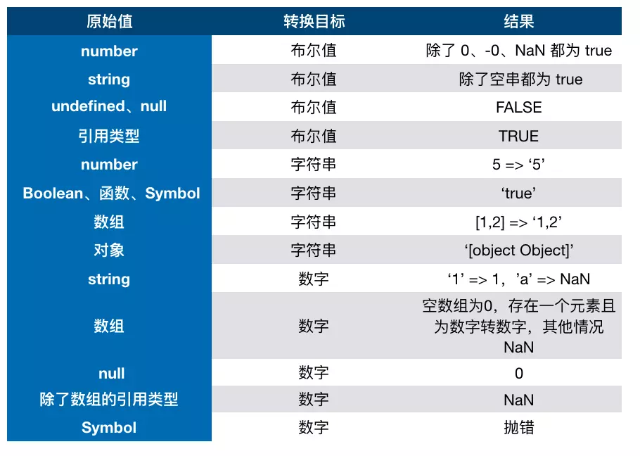
转Boolean
在条件判断时，除了
undefined，null，false，NaN，''，0，-0，其他所有值都转为true，包括所有对象
对象转原始类型
对象在转换类型的时候，会调用内置的
[[ToPrimitive]]函数，对于该函数来说，算法逻辑一般来说如下
- 如果已经是原始类型了，那就不需要转换了
- 调用
x.valueOf()，如果转换为基础类型，就返回转换的值 - 调用
x.toString()，如果转换为基础类型，就返回转换的值 - 如果都没有返回原始类型，就会报错
当然你也可以重写
Symbol.toPrimitive，该方法在转原始类型时调用优先级最高。
let a = {
valueOf() {
return 0
},
toString() {
return '1'
},
[Symbol.toPrimitive]() {
return 2
}
}
1 + a // => 3
四则运算符
它有以下几个特点：
- 运算中其中一方为字符串，那么就会把另一方也转换为字符串
- 如果一方不是字符串或者数字，那么会将它转换为数字或者字符串
1 + '1' // '11'
true + true // 2
4 + [1,2,3] // "41,2,3"
- 对于第一行代码来说，触发特点一，所以将数字
1转换为字符串，得到结果'11' - 对于第二行代码来说，触发特点二，所以将
true转为数字1 - 对于第三行代码来说，触发特点二，所以将数组通过
toString转为字符串1,2,3，得到结果41,2,3
另外对于加法还需要注意这个表达式
'a' + + 'b'
'a' + + 'b' // -> "aNaN"
- 因为
+ 'b'等于NaN，所以结果为"aNaN"，你可能也会在一些代码中看到过+ '1'的形式来快速获取number类型。 - 那么对于除了加法的运算符来说，只要其中一方是数字，那么另一方就会被转为数字
4 * '3' // 12
4 * [] // 0
4 * [1, 2] // NaN
比较运算符
- 如果是对象，就通过
toPrimitive转换对象 - 如果是字符串，就通过
unicode字符索引来比较
let a = {
valueOf() {
return 0
},
toString() {
return '1'
}
}
a > -1 // true
在以上代码中，因为
a是对象，所以会通过valueOf转换为原始类型再比较值。
null 和 undefined 的区别？
- 首先
Undefined和Null都是基本数据类型，这两个基本数据类型分别都只有一个值，就是undefined和null。 undefined代表的含义是未定义，null代表的含义是空对象（其实不是真的对象，请看下面的注意！）。一般变量声明了但还没有定义的时候会返回undefined，null主要用于赋值给一些可能会返回对象的变量，作为初始化。
其实 null 不是对象，虽然 typeof null 会输出 object，但是这只是 JS 存在的一个悠久 Bug。在 JS 的最初版本中使用的是 32 位系统，为了性能考虑使用低位存储变量的类型信息，000 开头代表是对象，然而 null 表示为全零，所以将它错误的判断为 object 。虽然现在的内部类型判断代码已经改变了，但是对于这个 Bug 却是一直流传下来。
- undefined 在 js 中不是一个保留字，这意味着我们可以使用
undefined来作为一个变量名，这样的做法是非常危险的，它会影响我们对 undefined 值的判断。但是我们可以通过一些方法获得安全的undefined值，比如说void 0。 - 当我们对两种类型使用 typeof 进行判断的时候，Null 类型化会返回 “object”，这是一个历史遗留的问题。当我们使用双等号对两种类型的值进行比较时会返回 true，使用三个等号时会返回 false。
# 2 This
不同情况的调用，
this指向分别如何。顺带可以提一下es6中箭头函数没有this,arguments,super等，这些只依赖包含箭头函数最接近的函数
我们先来看几个函数调用的场景
function foo() {
console.log(this.a)
}
var a = 1
foo()
const obj = {
a: 2,
foo: foo
}
obj.foo()
const c = new foo()
- 对于直接调用
foo来说，不管foo函数被放在了什么地方，this一定是window - 对于
obj.foo()来说，我们只需要记住，谁调用了函数，谁就是this，所以在这个场景下foo函数中的this就是obj对象 - 对于
new的方式来说，this被永远绑定在了c上面，不会被任何方式改变this
说完了以上几种情况，其实很多代码中的
this应该就没什么问题了，下面让我们看看箭头函数中的this
function a() {
return () => {
return () => {
console.log(this)
}
}
}
console.log(a()()())
- 首先箭头函数其实是没有
this的，箭头函数中的this只取决包裹箭头函数的第一个普通函数的this。在这个例子中，因为包裹箭头函数的第一个普通函数是a，所以此时的this是window。另外对箭头函数使用bind这类函数是无效的。 - 最后种情况也就是
bind这些改变上下文的API了，对于这些函数来说，this取决于第一个参数，如果第一个参数为空，那么就是window。 - 那么说到
bind，不知道大家是否考虑过，如果对一个函数进行多次bind，那么上下文会是什么呢？
let a = {}
let fn = function () { console.log(this) }
fn.bind().bind(a)() // => ?
如果你认为输出结果是
a，那么你就错了，其实我们可以把上述代码转换成另一种形式
// fn.bind().bind(a) 等于
let fn2 = function fn1() {
return function() {
return fn.apply()
}.apply(a)
}
fn2()
可以从上述代码中发现，不管我们给函数
bind几次，fn中的this永远由第一次bind决定，所以结果永远是window
let a = { name: 'poetries' }
function foo() {
console.log(this.name)
}
foo.bind(a)() // => 'poetries'
以上就是
this的规则了，但是可能会发生多个规则同时出现的情况，这时候不同的规则之间会根据优先级最高的来决定this最终指向哪里。
首先，
new的方式优先级最高，接下来是bind这些函数，然后是obj.foo()这种调用方式，最后是foo这种调用方式，同时，箭头函数的this一旦被绑定，就不会再被任何方式所改变。

函数执行改变this
- 由于 JS 的设计原理: 在函数中，可以引用运行环境中的变量。因此就需要一个机制来让我们可以在函数体内部获取当前的运行环境，这便是
this。
因此要明白
this指向，其实就是要搞清楚 函数的运行环境，说人话就是，谁调用了函数。例如
obj.fn()，便是obj调用了函数，既函数中的this === objfn()，这里可以看成window.fn()，因此this === window
但这种机制并不完全能满足我们的业务需求，因此提供了三种方式可以手动修改
this的指向:
call: fn.call(target, 1, 2)apply: fn.apply(target, [1, 2])bind: fn.bind(target)(1,2)
# 3 bind/call/apply 区别及实现
- 在浏览器里，在全局范围内this 指向window对象；
- 在函数中，this永远指向最后调用他的那个对象；
- 构造函数中，this指向new出来的那个新的对象；
call、apply、bind中的this被强绑定在指定的那个对象上；- 箭头函数中this比较特殊,箭头函数this为父作用域的this，不是调用时的this.要知道前四种方式,都是调用时确定,也就是动态的,而箭头函数的this指向是静态的,声明的时候就确定了下来；
apply、call、bind都是js给函数内置的一些API，调用他们可以为函数指定this的执行,同时也可以传参。
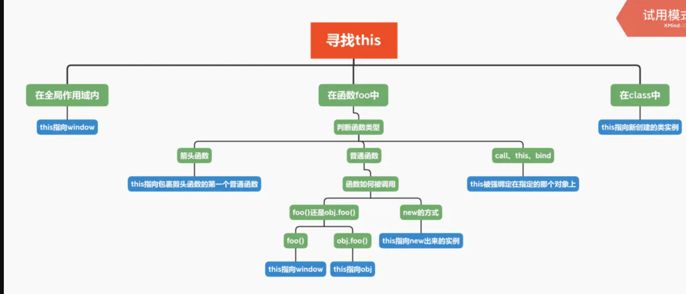
let a = {
value: 1
}
function getValue(name, age) {
console.log(name)
console.log(age)
console.log(this.value)
}
getValue.call(a, 'poe', '24')
getValue.apply(a, ['poe', '24'])
bind和其他两个方法作用也是一致的，只是该方法会返回一个函数。并且我们可以通过bind实现柯里化
实现一个 bind 函数
对于实现以下几个函数，可以从几个方面思考
- 不传入第一个参数，那么默认为
window - 改变了
this指向，让新的对象可以执行该函数。那么思路是否可以变成给新的对象添加一个函数，然后在执行完以后删除？
Function.prototype.myBind = function (context) {
if (typeof this !== 'function') {
throw new TypeError('Error')
}
var _this = this
var args = [...arguments].slice(1)
// 返回一个函数
return function F() {
// 因为返回了一个函数，我们可以 new F()，所以需要判断
if (this instanceof F) {
return new _this(...args, ...arguments)
}
return _this.apply(context, args.concat(...arguments))
}
}
实现一个 call 函数
Function.prototype.myCall = function (context) {
var context = context || window
// 给 context 添加一个属性
// getValue.call(a, 'pp', '24') => a.fn = getValue
context.fn = this
// 将 context 后面的参数取出来
var args = [...arguments].slice(1)
// getValue.call(a, 'pp', '24') => a.fn('pp', '24')
var result = context.fn(...args)
// 删除 fn
delete context.fn
return result
}
实现一个 apply 函数
Function.prototype.myApply = function(context = window, ...args) {
// this-->func context--> obj args--> 传递过来的参数
// 在context上加一个唯一值不影响context上的属性
let key = Symbol('key')
context[key] = this; // context为调用的上下文,this此处为函数，将这个函数作为context的方法
// let args = [...arguments].slice(1) //第一个参数为obj所以删除,伪数组转为数组
let result = context[key](args); // 这里和call传参不一样
delete context[key]; // 不删除会导致context属性越来越多
return result;
}
// 使用
function f(a,b){
console.log(a,b)
console.log(this.name)
}
let obj={
name:'张三'
}
f.myApply(obj,[1,2]) //arguments[1]
# 4 变量提升
当执行
JS代码时，会生成执行环境，只要代码不是写在函数中的，就是在全局执行环境中，函数中的代码会产生函数执行环境，只此两种执行环境。
b() // call b
console.log(a) // undefined
var a = 'Hello world'
function b() {
console.log('call b')
}
想必以上的输出大家肯定都已经明白了，这是因为函数和变量提升的原因。通常提升的解释是说将声明的代码移动到了顶部，这其实没有什么错误，便于大家理解。但是更准确的解释应该是：在生成执行环境时，会有两个阶段。第一个阶段是创建的阶段，
JS解释器会找出需要提升的变量和函数，并且给他们提前在内存中开辟好空间，函数的话会将整个函数存入内存中，变量只声明并且赋值为undefined，所以在第二个阶段，也就是代码执行阶段，我们可以直接提前使用
- 在提升的过程中，相同的函数会覆盖上一个函数，并且函数优先于变量提升
b() // call b second
function b() {
console.log('call b fist')
}
function b() {
console.log('call b second')
}
var b = 'Hello world'
var会产生很多错误，所以在 ES6中引入了let。let不能在声明前使用，但是这并不是常说的let不会提升，let提升了，在第一阶段内存也已经为他开辟好了空间，但是因为这个声明的特性导致了并不能在声明前使用
# 5 闭包
闭包是指有权访问另一个函数作用域内变量的函数，创建闭包的最常见的方式就是在一个函数内创建另一个函数，创建的函数可以 访问到当前函数的局部变量。
闭包有两个常用的用途
- 闭包的第一个用途是使我们在函数外部能够访问到函数内部的变量。通过使用闭包，我们可以通过在外部调用闭包函数，从而在外部访问到函数内部的变量，可以使用这种方法来创建私有变量。
- 函数的另一个用途是使已经运行结束的函数上下文中的变量对象继续留在内存中，因为闭包函数保留了这个变量对象的引用，所以这个变量对象不会被回收。
其实闭包的本质就是作用域链的一个特殊的应用，只要了解了作用域链的创建过程，就能够理解闭包的实现原理。
let a = 1
// fn 是闭包
function fn() {
console.log(a);
}
function fn1() {
let a = 1
// 这里也是闭包
return () => {
console.log(a);
}
}
const fn2 = fn1()
fn2()
- 大家都知道闭包其中一个作用是访问私有变量，就比如上述代码中的 fn2 访问到了 fn1 函数中的变量 a。但是此时 fn1 早已销毁，我们是如何访问到变量 a 的呢？不是都说原始类型是存放在栈上的么，为什么此时却没有被销毁掉？
- 接下来笔者会根据浏览器的表现来重新理解关于原始类型存放位置的说法。
- 先来说下数据存放的正确规则是：局部、占用空间确定的数据，一般会存放在栈中，否则就在堆中（也有例外）。 那么接下来我们可以通过 Chrome 来帮助我们验证这个说法说法。
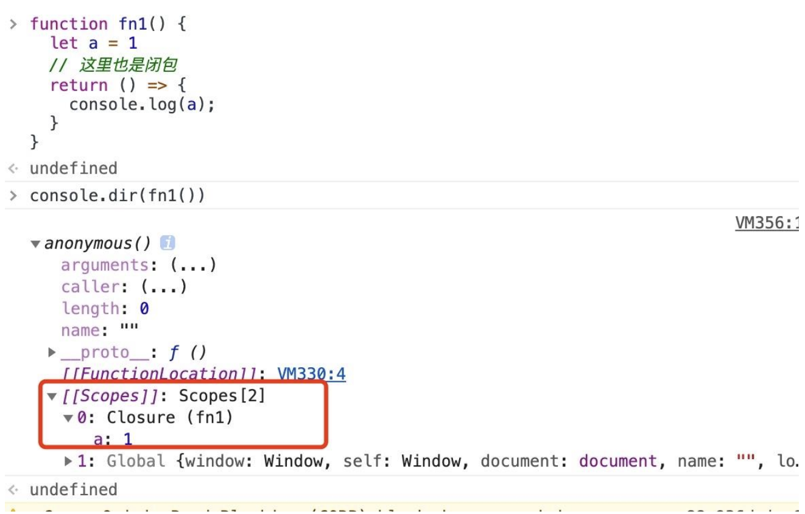
上图中画红框的位置我们能看到一个内部的对象
[[Scopes]]，其中存放着变量 a，该对象是被存放在堆上的，其中包含了闭包、全局对象等等内容，因此我们能通过闭包访问到本该销毁的变量。
另外最开始我们对于闭包的定位是：假如一个函数能访问外部的变量，那么这个函数它就是一个闭包，因此接下来我们看看在全局下的表现是怎么样的。
let a = 1
var b = 2
// fn 是闭包
function fn() {
console.log(a, b);
}
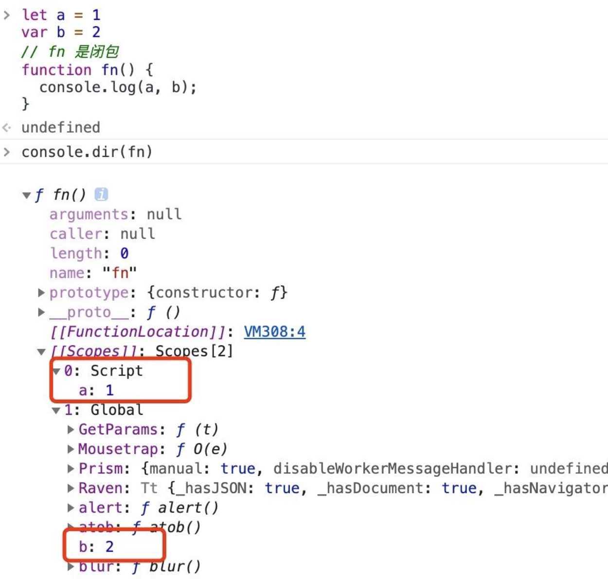
从上图我们能发现全局下声明的变量，如果是 var 的话就直接被挂到 globe 上，如果是其他关键字声明的话就被挂到 Script 上。虽然这些内容同样还是存在 [[Scopes]]，但是全局变量应该是存放在静态区域的，因为全局变量无需进行垃圾回收，等需要回收的时候整个应用都没了。
只有在下图的场景中，原始类型才可能是被存储在栈上。
这里为什么要说可能，是因为 JS 是门动态类型语言，一个变量声明时可以是原始类型，马上又可以赋值为对象类型，然后又回到原始类型。这样频繁的在堆栈上切换存储位置，内部引擎是不是也会有什么优化手段，或者干脆全部都丢堆上？只有 const 声明的原始类型才一定存在栈上？当然这只是笔者的一个推测，暂时没有深究，读者可以忽略这段瞎想
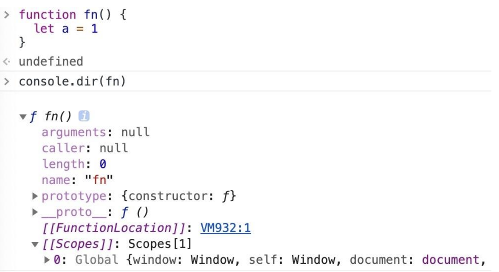
因此笔者对于原始类型存储位置的理解为：局部变量才是被存储在栈上，全局变量存在静态区域上，其它都存储在堆上。
当然这个理解是建立的 Chrome 的表现之上的，在不同的浏览器上因为引擎的不同，可能存储的方式还是有所变化的。
常见考点
- 闭包能考的很多，概念和笔试题都会考。
- 概念题就是考考闭包是什么了。
- 笔试题的话基本都会结合上异步，比如最常见的：
for (var i = 0; i < 6; i++) {
setTimeout(() => {
console.log(i)
})
}
这道题会问输出什么，有哪几种方式可以得到想要的答案？
# 6 执行上下文
当执行 JS 代码时，会产生三种执行上下文
- 全局执行上下文
- 函数执行上下文
eval执行上下文
每个执行上下文中都有三个重要的属性
- 变量对象（
VO），包含变量、函数声明和函数的形参，该属性只能在全局上下文中访问 - 作用域链（
JS采用词法作用域，也就是说变量的作用域是在定义时就决定了） this
var a = 10
function foo(i) {
var b = 20
}
foo()
对于上述代码，执行栈中有两个上下文：全局上下文和函数 foo 上下文。
stack = [
globalContext,
fooContext
]
对于全局上下文来说，
VO大概是这样的
globalContext.VO === globe
globalContext.VO = {
a: undefined,
foo: <Function>,
}
对于函数
foo来说，VO不能访问，只能访问到活动对象（AO）
fooContext.VO === foo.AO
fooContext.AO {
i: undefined,
b: undefined,
arguments: <>
}
// arguments 是函数独有的对象(箭头函数没有)
// 该对象是一个伪数组，有 `length` 属性且可以通过下标访问元素
// 该对象中的 `callee` 属性代表函数本身
// `caller` 属性代表函数的调用者
对于作用域链，可以把它理解成包含自身变量对象和上级变量对象的列表，通过
[[Scope]]属性查找上级变量
fooContext.[[Scope]] = [
globalContext.VO
]
fooContext.Scope = fooContext.[[Scope]] + fooContext.VO
fooContext.Scope = [
fooContext.VO,
globalContext.VO
]
接下来让我们看一个老生常谈的例子，
var
b() // call b
console.log(a) // undefined
var a = 'Hello world'
function b() {
console.log('call b')
}
想必以上的输出大家肯定都已经明白了，这是因为函数和变量提升的原因。通常提升的解释是说将声明的代码移动到了顶部，这其实没有什么错误，便于大家理解。但是更准确的解释应该是：在生成执行上下文时，会有两个阶段。第一个阶段是创建的阶段（具体步骤是创建
VO），JS解释器会找出需要提升的变量和函数，并且给他们提前在内存中开辟好空间，函数的话会将整个函数存入内存中，变量只声明并且赋值为undefined，所以在第二个阶段，也就是代码执行阶段，我们可以直接提前使用。
- 在提升的过程中，相同的函数会覆盖上一个函数，并且函数优先于变量提升
b() // call b second
function b() {
console.log('call b fist')
}
function b() {
console.log('call b second')
}
var b = 'Hello world'
var会产生很多错误，所以在ES6中引入了let。let不能在声明前使用，但是这并不是常说的let不会提升，let提升了声明但没有赋值，因为临时死区导致了并不能在声明前使用。
- 对于非匿名的立即执行函数需要注意以下一点
var foo = 1
(function foo() {
foo = 10
console.log(foo)
}()) // -> ƒ foo() { foo = 10 ; console.log(foo) }
因为当
JS解释器在遇到非匿名的立即执行函数时，会创建一个辅助的特定对象，然后将函数名称作为这个对象的属性，因此函数内部才可以访问到foo，但是这个值又是只读的，所以对它的赋值并不生效，所以打印的结果还是这个函数，并且外部的值也没有发生更改。
specialObject = {};
Scope = specialObject + Scope;
foo = new FunctionExpression;
foo.[[Scope]] = Scope;
specialObject.foo = foo; // {DontDelete}, {ReadOnly}
delete Scope[0]; // remove specialObject from the front of scope chain
总结
执行上下文可以简单理解为一个对象:
它包含三个部分:
- 变量对象(
VO) - 作用域链(词法作用域)
this指向
它的类型:
- 全局执行上下文
- 函数执行上下文
eval执行上下文
代码执行过程:
- 创建 全局上下文 (
global EC) - 全局执行上下文 (
caller) 逐行 自上而下 执行。遇到函数时，函数执行上下文 (callee) 被push到执行栈顶层 - 函数执行上下文被激活，成为
active EC, 开始执行函数中的代码，caller被挂起 - 函数执行完后，
callee被pop移除出执行栈，控制权交还全局上下文 (caller)，继续执行
# 7 作用域
- 作用域： 作用域是定义变量的区域，它有一套访问变量的规则，这套规则来管理浏览器引擎如何在当前作用域以及嵌套的作用域中根据变量（标识符）进行变量查找
- 作用域链： 作用域链的作用是保证对执行环境有权访问的所有变量和函数的有序访问，通过作用域链，我们可以访问到外层环境的变量和 函数。
作用域链的本质上是一个指向变量对象的指针列表。变量对象是一个包含了执行环境中所有变量和函数的对象。作用域链的前 端始终都是当前执行上下文的变量对象。全局执行上下文的变量对象（也就是全局对象）始终是作用域链的最后一个对象。
- 当我们查找一个变量时，如果当前执行环境中没有找到，我们可以沿着作用域链向后查找
- 作用域链的创建过程跟执行上下文的建立有关....
作用域可以理解为变量的可访问性，总共分为三种类型，分别为：
- 全局作用域
- 函数作用域
- 块级作用域，ES6 中的
let、const就可以产生该作用域
其实看完前面的闭包、this 这部分内部的话，应该基本能了解作用域的一些应用。
一旦我们将这些作用域嵌套起来，就变成了另外一个重要的知识点「作用域链」，也就是 JS 到底是如何访问需要的变量或者函数的。
- 首先作用域链是在定义时就被确定下来的，和箭头函数里的 this 一样，后续不会改变，JS 会一层层往上寻找需要的内容。
- 其实作用域链这个东西我们在闭包小结中已经看到过它的实体了：
[[Scopes]]
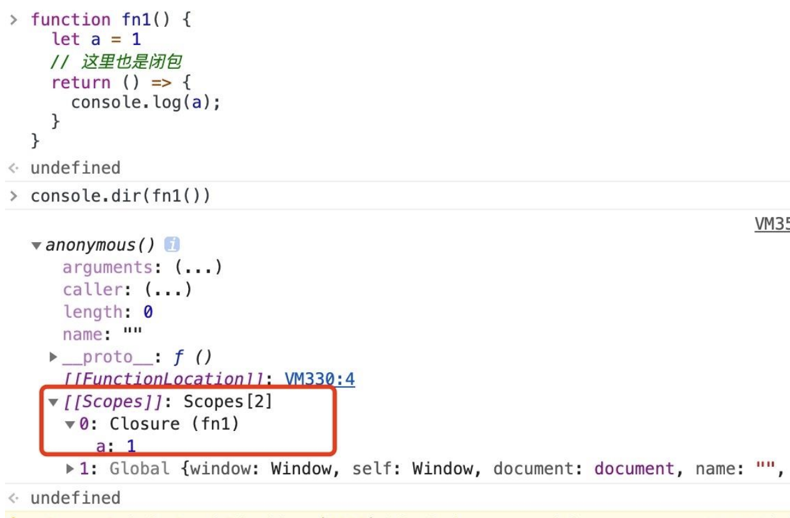
图中的 [[Scopes]] 是个数组，作用域的一层层往上寻找就等同于遍历 [[Scopes]]。
常见考点
- 什么是作用域
- 什么是作用域链
# 8 New的过程
new操作符可以帮助我们构建出一个实例，并且绑定上 this，内部执行步骤可大概分为以下几步：
- 新生成了一个对象
- 对象连接到构造函数原型上，并绑定
this - 执行构造函数代码
- 返回新对象
- 在第四步返回新对象这边有一个情况会例外：
function Test(name) {
this.name = name
console.log(this) // Test { name: 'yck' }
return { age: 26 }
}
const t = new Test('kkk')
console.log(t) // { age: 26 }
console.log(t.name) // 'undefined'
当在构造函数中返回一个对象时，内部创建出来的新对象就被我们返回的对象所覆盖，所以一般来说构建函数就别返回对象了（返回原始类型不影响）。
常见考点
new做了那些事？new返回不同的类型时会有什么表现？- 手写 new 的实现过程
我们也可以试着来自己实现一个 new
function myNew(fn, ...args) {
let instance = Object.create(fn.prototype);
let res = fn.apply(instance, args); // 改变this指向
// 确保返回的是一个对象(万一fn不是构造函数)
return typeof res === 'object' ? res: instance;
}
# 9 原型
__proto__和prototype关系：__proto__和constructor是对象独有的。2️⃣prototype属性是函数独有的
在 js 中我们是使用构造函数来新建一个对象的，每一个构造函数的内部都有一个 prototype 属性值，这个属性值是一个对象，这个对象包含了可以由该构造函数的所有实例共享的属性和方法。当我们使用构造函数新建一个对象后，在这个对象的内部将包含一个指针，这个指针指向构造函数的 prototype 属性对应的值，在 ES5 中这个指针被称为对象的原型。一般来说我们是不应该能够获取到这个值的，但是现在浏览器中都实现了 proto 属性来让我们访问这个属性，但是我们最好不要使用这个属性，因为它不是规范中规定的。ES5 中新增了一个
Object.getPrototypeOf()方法，我们可以通过这个方法来获取对象的原型。
当我们访问一个对象的属性时，如果这个对象内部不存在这个属性，那么它就会去它的原型对象里找这个属性，这个原型对象又会有自己的原型，于是就这样一直找下去，也就是原型链的概念。原型链的尽头一般来说都是 Object.prototype 所以这就是我们新建的对象为什么能够使用 toString() 等方法的原因。
特点：JavaScript 对象是通过引用来传递的，我们创建的每个新对象实体中并没有一份属于自己的原型副本。当我们修改原型时，与 之相关的对象也会继承这一改变
- 原型(
prototype): 一个简单的对象，用于实现对象的 属性继承。可以简单的理解成对象的爹。在Firefox和Chrome中，每个JavaScript对象中都包含一个__proto__(非标准)的属性指向它爹(该对象的原型)，可obj.__proto__进行访问。 - 构造函数: 可以通过
new来 新建一个对象 的函数。 - 实例: 通过构造函数和
new创建出来的对象，便是实例。 实例通过__proto__指向原型，通过constructor指向构造函数。
以
Object为例，我们常用的Object便是一个构造函数，因此我们可以通过它构建实例。
// 实例
const instance = new Object()
则此时， 实例为
instance, 构造函数为Object，我们知道，构造函数拥有一个prototype的属性指向原型，因此原型为:
// 原型
const prototype = Object.prototype
这里我们可以来看出三者的关系:
实例.__proto__ === 原型原型.constructor === 构造函数构造函数.prototype === 原型
// 这条线其实是是基于原型进行获取的，可以理解成一条基于原型的映射线
// 例如:
// const o = new Object()
// o.constructor === Object --> true
// o.__proto__ = null;
// o.constructor === Object --> false
实例.constructor === 构造函数
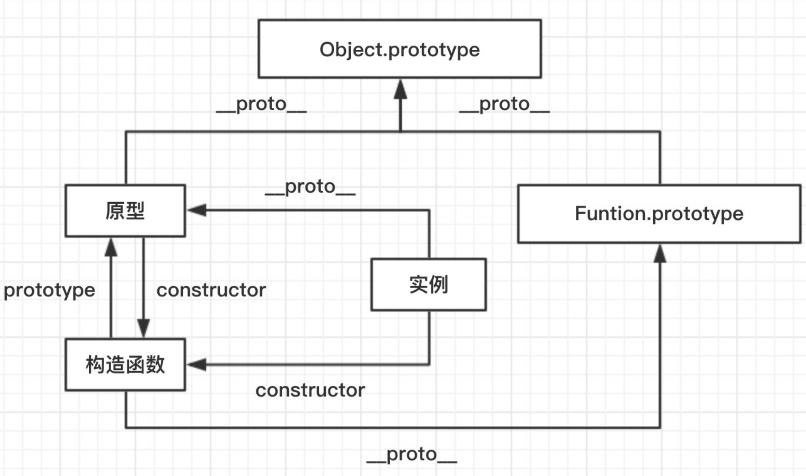
原型链
原型链是由原型对象组成，每个对象都有
__proto__属性，指向了创建该对象的构造函数的原型，__proto__将对象连接起来组成了原型链。是一个用来实现继承和共享属性的有限的对象链
- 属性查找机制: 当查找对象的属性时，如果实例对象自身不存在该属性，则沿着原型链往上一级查找，找到时则输出，不存在时，则继续沿着原型链往上一级查找，直至最顶级的原型对象
Object.prototype，如还是没找到，则输出undefined； - 属性修改机制: 只会修改实例对象本身的属性，如果不存在，则进行添加该属性，如果需要修改原型的属性时，则可以用:
b.prototype.x = 2；但是这样会造成所有继承于该对象的实例的属性发生改变。
js 获取原型的方法
p.protop.constructor.prototypeObject.getPrototypeOf(p)
总结
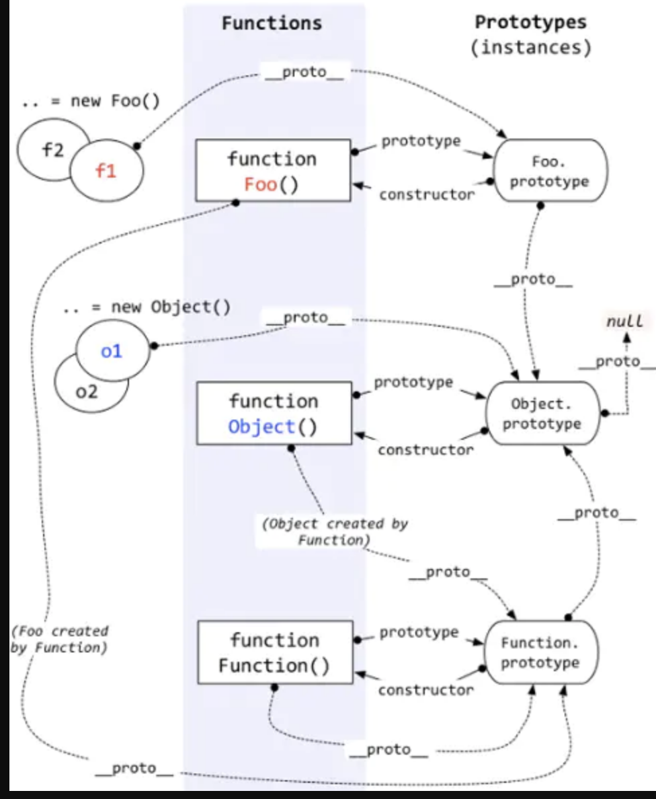
- 每个函数都有
prototype属性，除了Function.prototype.bind()，该属性指向原型。 - 每个对象都有
__proto__属性，指向了创建该对象的构造函数的原型。其实这个属性指向了[[prototype]]，但是[[prototype]]是内部属性，我们并不能访问到，所以使用_proto_来访问。 - 对象可以通过
__proto__来寻找不属于该对象的属性，__proto__将对象连接起来组成了原型链。
# 10 继承
涉及面试题：原型如何实现继承？
Class如何实现继承？Class本质是什么？
首先先来讲下 class，其实在 JS中并不存在类，class 只是语法糖，本质还是函数
class Person {}
Person instanceof Function // true
组合继承
组合继承是最常用的继承方式
function Parent(value) {
this.val = value
}
Parent.prototype.getValue = function() {
console.log(this.val)
}
function Child(value) {
Parent.call(this, value)
}
Child.prototype = new Parent()
const child = new Child(1)
child.getValue() // 1
child instanceof Parent // true
- 以上继承的方式核心是在子类的构造函数中通过
Parent.call(this)继承父类的属性，然后改变子类的原型为new Parent()来继承父类的函数。 - 这种继承方式优点在于构造函数可以传参，不会与父类引用属性共享，可以复用父类的函数，但是也存在一个缺点就是在继承父类函数的时候调用了父类构造函数，导致子类的原型上多了不需要的父类属性，存在内存上的浪费
寄生组合继承
这种继承方式对组合继承进行了优化，组合继承缺点在于继承父类函数时调用了构造函数，我们只需要优化掉这点就行了
function Parent(value) {
this.val = value
}
Parent.prototype.getValue = function() {
console.log(this.val)
}
function Child(value) {
Parent.call(this, value)
}
Child.prototype = Object.create(Parent.prototype, {
constructor: {
value: Child,
enumerable: false,
writable: true,
configurable: true
}
})
const child = new Child(1)
child.getValue() // 1
child instanceof Parent // true
以上继承实现的核心就是将父类的原型赋值给了子类，并且将构造函数设置为子类，这样既解决了无用的父类属性问题，还能正确的找到子类的构造函数。
Class 继承
以上两种继承方式都是通过原型去解决的，在 ES6 中，我们可以使用 class 去实现继承，并且实现起来很简单
class Parent {
constructor(value) {
this.val = value
}
getValue() {
console.log(this.val)
}
}
class Child extends Parent {
constructor(value) {
super(value)
this.val = value
}
}
let child = new Child(1)
child.getValue() // 1
child instanceof Parent // true
class实现继承的核心在于使用extends表明继承自哪个父类，并且在子类构造函数中必须调用super，因为这段代码可以看成Parent.call(this, value)。
ES5 和 6 继承的区别：
- ES6 继承的子类需要调用
super()才能拿到子类，ES5 的话是通过apply这种绑定的方式 - 类声明不会提升，和 let 这些一致
function Super() {}
Super.prototype.getNumber = function() {
return 1
}
function Sub() {}
Sub.prototype = Object.create(Super.prototype, {
constructor: {
value: Sub,
enumerable: false,
writable: true,
configurable: true
}
})
let s = new Sub()
s.getNumber()
# 12 面向对象
编程思想
- 基本思想是使用对象，类，继承，封装等基本概念来进行程序设计
- 优点
- 易维护
- 采用面向对象思想设计的结构，可读性高，由于继承的存在，即使改变需求，那么维护也只是在局部模块，所以维护起来是非常方便和较低成本的
- 易扩展
- 开发工作的重用性、继承性高，降低重复工作量。
- 缩短了开发周期
- 易维护
一般面向对象包含：继承，封装，多态，抽象
1. 对象形式的继承
浅拷贝
var Person = {
name: 'allin',
age: 18,
address: {
home: 'home',
office: 'office',
}
sclools: ['x','z'],
};
var programer = {
language: 'js',
};
function extend(p, c){
var c = c || {};
for( var prop in p){
c[prop] = p[prop];
}
}
extend(Person, programer);
programer.name; // allin
programer.address.home; // home
programer.address.home = 'house'; //house
Person.address.home; // house
从上面的结果看出，浅拷贝的缺陷在于修改了子对象中引用类型的值，会影响到父对象中的值，因为在浅拷贝中对引用类型的拷贝只是拷贝了地址，指向了内存中同一个副本
深拷贝
function extendDeeply(p, c){
var c = c || {};
for (var prop in p){
if(typeof p[prop] === "object"){
c[prop] = (p[prop].constructor === Array)?[]:{};
extendDeeply(p[prop], c[prop]);
}else{
c[prop] = p[prop];
}
}
}
利用递归进行深拷贝，这样子对象的修改就不会影响到父对象
extendDeeply(Person, programer);
programer.address.home = 'allin';
Person.address.home; // home
利用call和apply继承
function Parent(){
this.name = "abc";
this.address = {home: "home"};
}
function Child(){
Parent.call(this);
this.language = "js";
}
ES5中的Object.create()
var p = { name : 'allin'};
var obj = Object.create(o);
obj.name; // allin
Object.create()作为new操作符的替代方案是ES5之后才出来的。我们也可以自己模拟该方法：
//模拟Object.create()方法
function myCreate(o){
function F(){};
F.prototype = o;
o = new F();
return o;
}
var p = { name : 'allin'};
var obj = myCreate(o);
obj.name; // allin
目前，各大浏览器的最新版本（包括IE9）都部署了这个方法。如果遇到老式浏览器，可以用下面的代码自行部署
if (!Object.create) {
Object.create = function (o) {
function F() {}
F.prototype = o;
return new F();
};
}
2. 类的继承
Object.create()
function Person(name, age){}
Person.prototype.headCount = 1;
Person.prototype.eat = function(){
console.log('eating...');
}
function Programmer(name, age, title){}
Programmer.prototype = Object.create(Person.prototype); //建立继承关系
Programmer.prototype.constructor = Programmer; // 修改constructor的指向
调用父类方法
function Person(name, age){
this.name = name;
this.age = age;
}
Person.prototype.headCount = 1;
Person.prototype.eat = function(){
console.log('eating...');
}
function Programmer(name, age, title){
Person.apply(this, arguments); // 调用父类的构造器
}
Programmer.prototype = Object.create(Person.prototype);
Programmer.prototype.constructor = Programmer;
Programmer.prototype.language = "js";
Programmer.prototype.work = function(){
console.log('i am working code in '+ this.language);
Person.prototype.eat.apply(this, arguments); // 调用父类上的方法
}
3. 封装
- 命名空间
- js是没有命名空间的，因此可以用对象模拟
var app = {}; // 命名空间app
//模块1
app.module1 = {
name: 'allin',
f: function(){
console.log('hi robot');
}
};
app.module1.name; // "allin"
app.module1.f(); // hi robot
对象的属性外界是可读可写 如何来达到封装的额目的？答：可通过
闭包+局部变量来完成
- 在构造函数内部声明局部变量 和普通方法
- 因为作用域的关系 只有构造函数内的方法
- 才能访问局部变量 而方法对于外界是开放的
- 因此可以通过方法来访问 原本外界访问不到的局部变量 达到函数封装的目的
function Girl(name,age){
var love = '小明';//love 是局部变量 准确说不属于对象 属于这个函数的额激活对象 函数调用时必将产生一个激活对象 love在激活对象身上 激活对象有作用域的关系 有办法访问 加一个函数提供外界访问
this.name = name;
this.age = age;
this.say = function () {
return love;
};
this.movelove = function (){
love = '小轩'; //35
}
}
var g = new Girl('yinghong',22);
console.log(g);
console.log(g.say());//小明
console.log(g.movelove());//undefined 因为35行没有返回
console.log(g.say());//小轩
function fn(){
function t(){
//var age = 22;//声明age变量 在t的激活对象上
age = 22;//赋值操作 t的激活对象上找age属性 ，找不到 找fn的激活对象....再找到 最终找到window.age = 22;
//不加var就是操作window全局属性
}
t();
}
console.log(fn());//undefined
4. 静态成员
面向对象中的静态方法-静态属性：没有new对象 也能引用静态方法属性
function Person(name){
var age = 100;
this.name = name;
}
//静态成员
Person.walk = function(){
console.log('static');
};
Person.walk(); // static
5. 私有与公有
function Person(id){
// 私有属性与方法
var name = 'allin';
var work = function(){
console.log(this.id);
};
//公有属性与方法
this.id = id;
this.say = function(){
console.log('say hello');
work.call(this);
};
};
var p1 = new Person(123);
p1.name; // undefined
p1.id; // 123
p1.say(); // say hello 123
6. 模块化
var moduleA;
moduleA = function() {
var prop = 1;
function func() {}
return {
func: func,
prop: prop
};
}(); // 立即执行匿名函数
7. 多态
多态:同一个父类继承出来的子类各有各的形态
function Cat(){
this.eat = '肉';
}
function Tiger(){
this.color = '黑黄相间';
}
function Cheetah(){
this.color = '报文';
}
function Lion(){
this.color = '土黄色';
}
Tiger.prototype = Cheetah.prototype = Lion.prototype = new Cat();//共享一个祖先 Cat
var T = new Tiger();
var C = new Cheetah();
var L = new Lion();
console.log(T.color);
console.log(C.color);
console.log(L.color);
console.log(T.eat);
console.log(C.eat);
console.log(L.eat);
8. 抽象类
在构造器中
throw new Error(''); 抛异常。这样防止这个类被直接调用
function DetectorBase() {
throw new Error('Abstract class can not be invoked directly!');
}
DetectorBase.prototype.detect = function() {
console.log('Detection starting...');
};
DetectorBase.prototype.stop = function() {
console.log('Detection stopped.');
};
DetectorBase.prototype.init = function() {
throw new Error('Error');
};
// var d = new DetectorBase();
// Uncaught Error: Abstract class can not be invoked directly!
function LinkDetector() {}
LinkDetector.prototype = Object.create(DetectorBase.prototype);
LinkDetector.prototype.constructor = LinkDetector;
var l = new LinkDetector();
console.log(l); //LinkDetector {}__proto__: LinkDetector
l.detect(); //Detection starting...
l.init(); //Uncaught Error: Error
# 13 事件循环
1. 浏览器事件循环
涉及面试题：异步代码执行顺序？解释一下什么是
Event Loop？
JavaScript的单线程，与它的用途有关。作为浏览器脚本语言，JavaScript的主要用途是与用户互动，以及操作DOM。这决定了它只能是单线程，否则会带来很复杂的同步问题。比如，假定JavaScript同时有两个线程，一个线程在某个DOM节点上添加内容，另一个线程删除了这个节点，这时浏览器应该以哪个线程为准？所以，为了避免复杂性，从一诞生，JavaScript就是单线程，这已经成了这门语言的核心特征，将来也不会改变
js代码执行过程中会有很多任务，这些任务总的分成两类：
- 同步任务
- 异步任务
当我们打开网站时，网页的渲染过程就是一大堆同步任务，比如页面骨架和页面元素的渲染。而像加载图片音乐之类占用资源大耗时久的任务，就是异步任务。，我们用导图来说明：
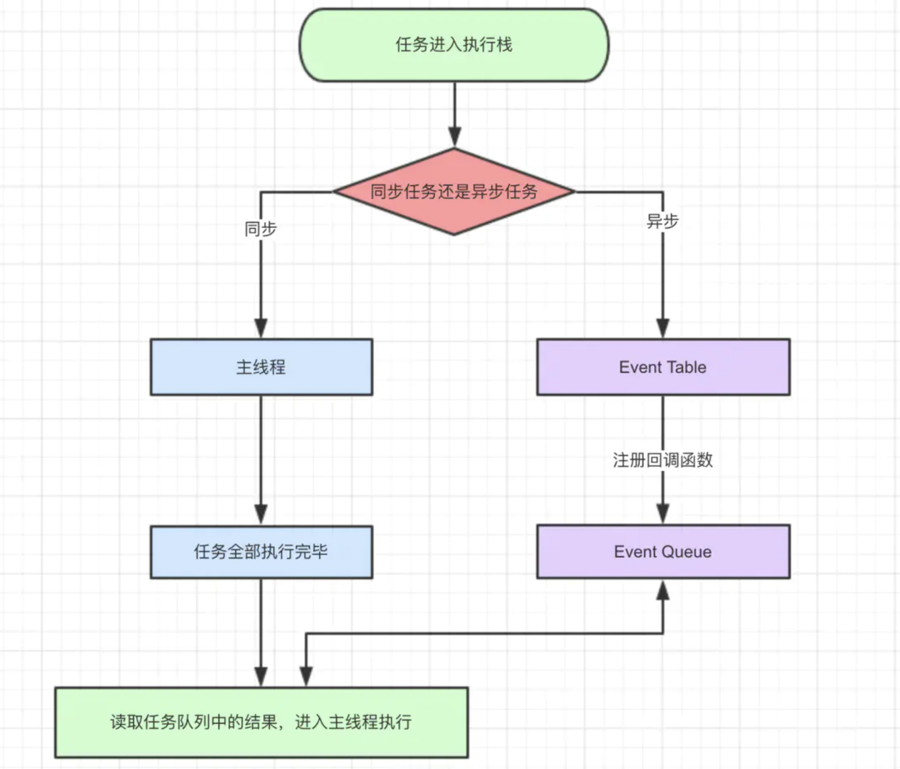
我们解释一下这张图：
- 同步和异步任务分别进入不同的执行"场所"，同步的进入主线程，异步的进入Event Table并注册函数。
- 当指定的事情完成时，Event Table会将这个函数移入Event Queue。
- 主线程内的任务执行完毕为空，会去Event Queue读取对应的函数，进入主线程执行。
- 上述过程会不断重复，也就是常说的Event Loop(事件循环)。
那主线程执行栈何时为空呢？js引擎存在monitoring process进程，会持续不断的检查主线程执行栈是否为空，一旦为空，就会去Event Queue那里检查是否有等待被调用的函数
以上就是js运行的整体流程
面试中该如何回答呢？ 下面是我个人推荐的回答：
- 首先js 是单线程运行的，在代码执行的时候，通过将不同函数的执行上下文压入执行栈中来保证代码的有序执行
- 在执行同步代码的时候，如果遇到了异步事件，js 引擎并不会一直等待其返回结果，而是会将这个事件挂起，继续执行执行栈中的其他任务
- 当同步事件执行完毕后，再将异步事件对应的回调加入到与当前执行栈中不同的另一个任务队列中等待执行
- 任务队列可以分为宏任务对列和微任务对列，当当前执行栈中的事件执行完毕后，js 引擎首先会判断微任务对列中是否有任务可以执行，如果有就将微任务队首的事件压入栈中执行
- 当微任务对列中的任务都执行完成后再去判断宏任务对列中的任务。
setTimeout(function() {
console.log(1)
}, 0);
new Promise(function(resolve, reject) {
console.log(2);
resolve()
}).then(function() {
console.log(3)
});
process.nextTick(function () {
console.log(4)
})
console.log(5)
- 第一轮：主线程开始执行，遇到
setTimeout，将setTimeout的回调函数丢到宏任务队列中，在往下执行new Promise立即执行，输出2，then的回调函数丢到微任务队列中，再继续执行，遇到process.nextTick，同样将回调函数扔到为任务队列，再继续执行，输出5，当所有同步任务执行完成后看有没有可以执行的微任务，发现有then函数和nextTick两个微任务，先执行哪个呢？process.nextTick指定的异步任务总是发生在所有异步任务之前，因此先执行process.nextTick输出4然后执行then函数输出3，第一轮执行结束。 - 第二轮：从宏任务队列开始，发现setTimeout回调，输出1执行完毕，因此结果是25431
JS在执行的过程中会产生执行环境，这些执行环境会被顺序的加入到执行栈中。如果遇到异步的代码，会被挂起并加入到Task（有多种task） 队列中。一旦执行栈为空，EventLoop就会从Task队列中拿出需要执行的代码并放入执行栈中执行，所以本质上来说JS中的异步还是同步行为
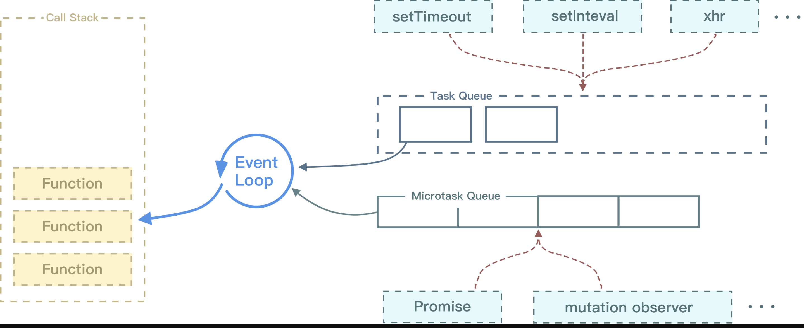
console.log('script start');
setTimeout(function() {
console.log('setTimeout');
}, 0);
console.log('script end');
不同的任务源会被分配到不同的
Task队列中，任务源可以分为 微任务（microtask） 和 宏任务（macrotask）。在ES6规范中，microtask称为jobs，macrotask称为task
console.log('script start');
setTimeout(function() {
console.log('setTimeout');
}, 0);
new Promise((resolve) => {
console.log('Promise')
resolve()
}).then(function() {
console.log('promise1');
}).then(function() {
console.log('promise2');
});
console.log('script end');
// script start => Promise => script end => promise1 => promise2 => setTimeout
以上代码虽然
setTimeout写在Promise之前，但是因为Promise属于微任务而setTimeout属于宏任务
微任务
process.nextTickpromiseObject.observeMutationObserver
宏任务
scriptsetTimeoutsetIntervalsetImmediateI/OUI rendering
宏任务中包括了
script，浏览器会先执行一个宏任务，接下来有异步代码的话就先执行微任务
所以正确的一次 Event loop 顺序是这样的
- 执行同步代码，这属于宏任务
- 执行栈为空，查询是否有微任务需要执行
- 执行所有微任务
- 必要的话渲染 UI
- 然后开始下一轮
Event loop，执行宏任务中的异步代码
通过上述的
Event loop顺序可知，如果宏任务中的异步代码有大量的计算并且需要操作DOM的话，为了更快的响应界面响应，我们可以把操作DOM放入微任务中
2. Node 中的 Event loop
Node中的Event loop和浏览器中的不相同。Node的Event loop分为6个阶段，它们会按照顺序反复运行
┌───────────────────────┐
┌─>│ timers │
│ └──────────┬────────────┘
│ ┌──────────┴────────────┐
│ │ I/O callbacks │
│ └──────────┬────────────┘
│ ┌──────────┴────────────┐
│ │ idle, prepare │
│ └──────────┬────────────┘ ┌───────────────┐
│ ┌──────────┴────────────┐ │ incoming: │
│ │ poll │<──connections─── │
│ └──────────┬────────────┘ │ data, etc. │
│ ┌──────────┴────────────┐ └───────────────┘
│ │ check │
│ └──────────┬────────────┘
│ ┌──────────┴────────────┐
└──┤ close callbacks │
└───────────────────────┘
timer
timers阶段会执行setTimeout和setInterval- 一个 timer 指定的时间并不是准确时间，而是在达到这个时间后尽快执行回调，可能会因为系统正在执行别的事务而延迟
I/O
I/O阶段会执行除了close事件，定时器和setImmediate的回调
poll
poll阶段很重要，这一阶段中，系统会做两件事情- 执行到点的定时器
- 执行
poll队列中的事件
并且当
poll中没有定时器的情况下，会发现以下两件事情- 如果
poll队列不为空，会遍历回调队列并同步执行，直到队列为空或者系统限制 - 如果
poll队列为空，会有两件事发生 - 如果有
setImmediate需要执行，poll阶段会停止并且进入到check阶段执行setImmediate - 如果没有
setImmediate需要执行，会等待回调被加入到队列中并立即执行回调 - 如果有别的定时器需要被执行，会回到
timer阶段执行回调。
- 如果
check
check阶段执行setImmediate
close callbacks
close callbacks阶段执行close事件- 并且在
Node中，有些情况下的定时器执行顺序是随机的
setTimeout(() => {
console.log('setTimeout');
}, 0);
setImmediate(() => {
console.log('setImmediate');
})
// 这里可能会输出 setTimeout，setImmediate
// 可能也会相反的输出，这取决于性能
// 因为可能进入 event loop 用了不到 1 毫秒，这时候会执行 setImmediate
// 否则会执行 setTimeout
上面介绍的都是
macrotask的执行情况，microtask会在以上每个阶段完成后立即执行
setTimeout(()=>{
console.log('timer1')
Promise.resolve().then(function() {
console.log('promise1')
})
}, 0)
setTimeout(()=>{
console.log('timer2')
Promise.resolve().then(function() {
console.log('promise2')
})
}, 0)
// 以上代码在浏览器和 node 中打印情况是不同的
// 浏览器中一定打印 timer1, promise1, timer2, promise2
// node 中可能打印 timer1, timer2, promise1, promise2
// 也可能打印 timer1, promise1, timer2, promise2
Node中的process.nextTick会先于其他microtask执行
setTimeout(() => {
console.log("timer1");
Promise.resolve().then(function() {
console.log("promise1");
});
}, 0);
process.nextTick(() => {
console.log("nextTick");
});
// nextTick, timer1, promise1
对于
microtask来说，它会在以上每个阶段完成前清空microtask队列，下图中的Tick就代表了microtask
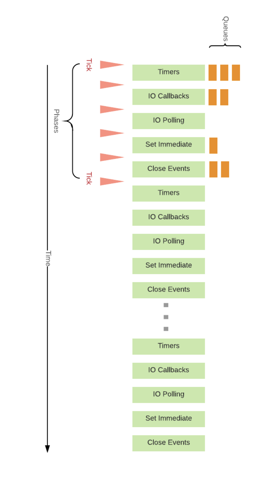
# 14 事件机制
涉及面试题：事件的触发过程是怎么样的？知道什么是事件代理嘛？
1. 简介
事件流是一个事件沿着特定数据结构传播的过程。冒泡和捕获是事件流在
DOM中两种不同的传播方法
事件流有三个阶段
- 事件捕获阶段
- 处于目标阶段
- 事件冒泡阶段
事件捕获
事件捕获（
event capturing）：通俗的理解就是，当鼠标点击或者触发dom事件时，浏览器会从根节点开始由外到内进行事件传播，即点击了子元素，如果父元素通过事件捕获方式注册了对应的事件的话，会先触发父元素绑定的事件
事件冒泡
事件冒泡（dubbed bubbling）：与事件捕获恰恰相反，事件冒泡顺序是由内到外进行事件传播，直到根节点
无论是事件捕获还是事件冒泡，它们都有一个共同的行为，就是事件传播

2. 捕获和冒泡
<div id="div1">
<div id="div2"></div>
</div>
<script>
let div1 = document.getElementById('div1');
let div2 = document.getElementById('div2');
div1.onClick = function(){
alert('1')
}
div2.onClick = function(){
alert('2');
}
</script>
当点击
div2时，会弹出两个弹出框。在ie8/9/10、chrome浏览器，会先弹出”2”再弹出“1”，这就是事件冒泡：事件从最底层的节点向上冒泡传播。事件捕获则跟事件冒泡相反
W3C的标准是先捕获再冒泡，
addEventListener的第三个参数决定把事件注册在捕获（true）还是冒泡(false)
3. 事件对象
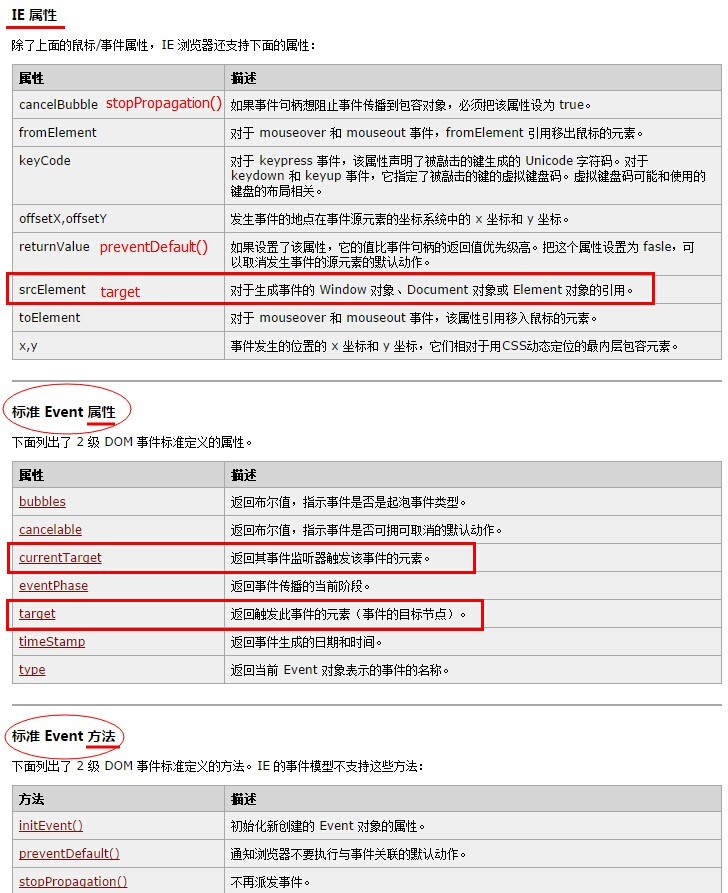
4. 事件流阻止
在一些情况下需要阻止事件流的传播，阻止默认动作的发生
event.preventDefault()：取消事件对象的默认动作以及继续传播。event.stopPropagation()/ event.cancelBubble = true：阻止事件冒泡。
事件的阻止在不同浏览器有不同处理
- 在
IE下使用event.returnValue= false， - 在非
IE下则使用event.preventDefault()进行阻止
preventDefault与stopPropagation的区别
preventDefault告诉浏览器不用执行与事件相关联的默认动作（如表单提交）stopPropagation是停止事件继续冒泡，但是对IE9以下的浏览器无效
5. 事件注册
- 通常我们使用
addEventListener注册事件，该函数的第三个参数可以是布尔值，也可以是对象。对于布尔值useCapture参数来说，该参数默认值为false。useCapture决定了注册的事件是捕获事件还是冒泡事件 - 一般来说，我们只希望事件只触发在目标上，这时候可以使用
stopPropagation来阻止事件的进一步传播。通常我们认为stopPropagation是用来阻止事件冒泡的，其实该函数也可以阻止捕获事件。stopImmediatePropagation同样也能实现阻止事件，但是还能阻止该事件目标执行别的注册事件
node.addEventListener('click',(event) =>{
event.stopImmediatePropagation()
console.log('冒泡')
},false);
// 点击 node 只会执行上面的函数，该函数不会执行
node.addEventListener('click',(event) => {
console.log('捕获 ')
},true)
6. 事件委托
- 在
js中性能优化的其中一个主要思想是减少dom操作。 - 节省内存
- 不需要给子节点注销事件
假设有
100个li，每个li有相同的点击事件。如果为每个Li都添加事件，则会造成dom访问次数过多，引起浏览器重绘与重排的次数过多，性能则会降低。 使用事件委托则可以解决这样的问题
原理
实现事件委托是利用了事件的冒泡原理实现的。当我们为最外层的节点添加点击事件，那么里面的
ul、li、a的点击事件都会冒泡到最外层节点上，委托它代为执行事件
<ul id="ul">
<li>1</li>
<li>2</li>
<li>3</li>
</ul>
window.onload = function(){
var ulEle = document.getElementById('ul');
ul.onclick = function(ev){
//兼容IE
ev = ev || window.event;
var target = ev.target || ev.srcElement;
if(target.nodeName.toLowerCase() == 'li'){
alert( target.innerHTML);
}
}
}
# 15 Promise
这里你谈
promise的时候，除了将他解决的痛点以及常用的API之外，最好进行拓展把eventloop带进来好好讲一下，microtask(微任务)、macrotask(任务) 的执行顺序，如果看过promise源码，最好可以谈一谈 原生Promise是如何实现的。Promise的关键点在于callback的两个参数，一个是resovle，一个是reject。还有就是Promise的链式调用（Promise.then()，每一个then都是一个责任人）
Promise是ES6新增的语法，解决了回调地狱的问题。- 可以把
Promise看成一个状态机。初始是pending状态，可以通过函数resolve和reject，将状态转变为resolved或者rejected状态，状态一旦改变就不能再次变化。 then函数会返回一个Promise实例，并且该返回值是一个新的实例而不是之前的实例。因为Promise规范规定除了pending状态，其他状态是不可以改变的，如果返回的是一个相同实例的话，多个then调用就失去意义了。 对于then来说，本质上可以把它看成是flatMap
promise手写实现，面试够用版：
function myPromise(constructor){
let self=this;
self.status="pending" //定义状态改变前的初始状态
self.value=undefined;//定义状态为resolved的时候的状态
self.reason=undefined;//定义状态为rejected的时候的状态
function resolve(value){
//两个==="pending"，保证了状态的改变是不可逆的
if(self.status==="pending"){
self.value=value;
self.status="resolved";
}
}
function reject(reason){
//两个==="pending"，保证了状态的改变是不可逆的
if(self.status==="pending"){
self.reason=reason;
self.status="rejected";
}
}
//捕获构造异常
try{
constructor(resolve,reject);
}catch(e){
reject(e);
}
}
// 定义链式调用的then方法
myPromise.prototype.then=function(onFullfilled,onRejected){
let self=this;
switch(self.status){
case "resolved":
onFullfilled(self.value);
break;
case "rejected":
onRejected(self.reason);
break;
default:
}
}
关于Promise还有其他的知识，比如Promise.all()、Promise.race()等的运用，由于篇幅原因就不再做展开
# 16 模块化
js 中现在比较成熟的有四种模块加载方案：
- 第一种是 CommonJS 方案，它通过 require 来引入模块，通过 module.exports 定义模块的输出接口。这种模块加载方案是服务器端的解决方案，它是以同步的方式来引入模块的，因为在服务端文件都存储在本地磁盘，所以读取非常快，所以以同步的方式加载没有问题。但如果是在浏览器端，由于模块的加载是使用网络请求，因此使用异步加载的方式更加合适。
- 第二种是 AMD 方案，这种方案采用异步加载的方式来加载模块，模块的加载不影响后面语句的执行，所有依赖这个模块的语句都定义在一个回调函数里，等到加载完成后再执行回调函数。require.js 实现了 AMD 规范
- 第三种是 CMD 方案，这种方案和 AMD 方案都是为了解决异步模块加载的问题，sea.js 实现了 CMD 规范。它和require.js的区别在于模块定义时对依赖的处理不同和对依赖模块的执行时机的处理不同。
- 第四种方案是 ES6 提出的方案，使用 import 和 export 的形式来导入导出模块
在有
Babel的情况下，我们可以直接使用ES6的模块化
// file a.js
export function a() {}
export function b() {}
// file b.js
export default function() {}
import {a, b} from './a.js'
import XXX from './b.js'
CommonJS
CommonJs是Node独有的规范，浏览器中使用就需要用到Browserify解析了。
// a.js
module.exports = {
a: 1
}
// or
exports.a = 1
// b.js
var module = require('./a.js')
module.a // -> log 1
在上述代码中，
module.exports和exports很容易混淆，让我们来看看大致内部实现
var module = require('./a.js')
module.a
// 这里其实就是包装了一层立即执行函数，这样就不会污染全局变量了，
// 重要的是 module 这里，module 是 Node 独有的一个变量
module.exports = {
a: 1
}
// 基本实现
var module = {
exports: {} // exports 就是个空对象
}
// 这个是为什么 exports 和 module.exports 用法相似的原因
var exports = module.exports
var load = function (module) {
// 导出的东西
var a = 1
module.exports = a
return module.exports
};
再来说说
module.exports和exports，用法其实是相似的，但是不能对exports直接赋值，不会有任何效果。
对于
CommonJS和ES6中的模块化的两者区别是：
- 前者支持动态导入，也就是
require(${path}/xx.js)，后者目前不支持，但是已有提案,前者是同步导入，因为用于服务端，文件都在本地，同步导入即使卡住主线程影响也不大。 - 而后者是异步导入，因为用于浏览器，需要下载文件，如果也采用同步导入会对渲染有很大影响
- 前者在导出时都是值拷贝，就算导出的值变了，导入的值也不会改变，所以如果想更新值，必须重新导入一次。
- 但是后者采用实时绑定的方式，导入导出的值都指向同一个内存地址，所以导入值会跟随导出值变化
- 后者会编译成
require/exports来执行的
AMD
AMD是由RequireJS提出的
AMD 和 CMD 规范的区别？
- 第一个方面是在模块定义时对依赖的处理不同。AMD推崇依赖前置，在定义模块的时候就要声明其依赖的模块。而 CMD 推崇就近依赖，只有在用到某个模块的时候再去 require。
- 第二个方面是对依赖模块的执行时机处理不同。首先 AMD 和 CMD 对于模块的加载方式都是异步加载，不过它们的区别在于模块的执行时机，AMD 在依赖模块加载完成后就直接执行依赖模块，依赖模块的执行顺序和我们书写的顺序不一定一致。而 CMD在依赖模块加载完成后并不执行，只是下载而已，等到所有的依赖模块都加载好后，进入回调函数逻辑，遇到 require 语句的时候才执行对应的模块，这样模块的执行顺序就和我们书写的顺序保持一致了。
// CMD
define(function(require, exports, module) {
var a = require("./a");
a.doSomething();
// 此处略去 100 行
var b = require("./b"); // 依赖可以就近书写
b.doSomething();
// ...
});
// AMD 默认推荐
define(["./a", "./b"], function(a, b) {
// 依赖必须一开始就写好
a.doSomething();
// 此处略去 100 行
b.doSomething();
// ...
})
- AMD：
requirejs在推广过程中对模块定义的规范化产出，提前执行，推崇依赖前置 - CMD：
seajs在推广过程中对模块定义的规范化产出，延迟执行，推崇依赖就近 - CommonJs：模块输出的是一个值的
copy，运行时加载，加载的是一个对象（module.exports属性），该对象只有在脚本运行完才会生成 - ES6 Module：模块输出的是一个值的引用，编译时输出接口，
ES6模块不是对象，它对外接口只是一种静态定义，在代码静态解析阶段就会生成。
谈谈对模块化开发的理解
- 我对模块的理解是，一个模块是实现一个特定功能的一组方法。在最开始的时候，js 只实现一些简单的功能，所以并没有模块的概念，但随着程序越来越复杂，代码的模块化开发变得越来越重要。
- 由于函数具有独立作用域的特点，最原始的写法是使用函数来作为模块，几个函数作为一个模块，但是这种方式容易造成全局变量的污染，并且模块间没有联系。
- 后面提出了对象写法，通过将函数作为一个对象的方法来实现，这样解决了直接使用函数作为模块的一些缺点，但是这种办法会暴露所有的所有的模块成员，外部代码可以修改内部属性的值。
- 现在最常用的是立即执行函数的写法，通过利用闭包来实现模块私有作用域的建立，同时不会对全局作用域造成污染。
# 17 Iterator
Iterator（迭代器）是一种接口，也可以说是一种规范。为各种不同的数据结构提供统一的访问机制。任何数据结构只要部署Iterator接口，就可以完成遍历操作（即依次处理该数据结构的所有成员）。
Iterator语法：
const obj = {
[Symbol.iterator]:function(){}
}
[Symbol.iterator]属性名是固定的写法，只要拥有了该属性的对象，就能够用迭代器的方式进行遍历。
- 迭代器的遍历方法是首先获得一个迭代器的指针，初始时该指针指向第一条数据之前，接着通过调用 next 方法，改变指针的指向，让其指向下一条数据
- 每一次的
next都会返回一个对象，该对象有两个属性value代表想要获取的数据done布尔值，false表示当前指针指向的数据有值，true表示遍历已经结束
Iterator 的作用有三个：
- 创建一个指针对象，指向当前数据结构的起始位置。也就是说，遍历器对象本质上，就是一个指针对象。
- 第一次调用指针对象的next方法，可以将指针指向数据结构的第一个成员。
- 第二次调用指针对象的next方法，指针就指向数据结构的第二个成员。
- 不断调用指针对象的next方法，直到它指向数据结构的结束位置。
每一次调用next方法，都会返回数据结构的当前成员的信息。具体来说，就是返回一个包含value和done两个属性的对象。其中，value属性是当前成员的值，done属性是一个布尔值，表示遍历是否结束。
let arr = [{num:1},2,3]
let it = arr[Symbol.iterator]() // 获取数组中的迭代器
console.log(it.next()) // { value: Object { num: 1 }, done: false }
console.log(it.next()) // { value: 2, done: false }
console.log(it.next()) // { value: 3, done: false }
console.log(it.next()) // { value: undefined, done: true }
对象没有布局Iterator接口，无法使用
for of遍历。下面使得对象具备Iterator接口
- 一个数据结构只要有Symbol.iterator属性，就可以认为是“可遍历的”
- 原型部署了Iterator接口的数据结构有三种，具体包含四种，分别是数组，类似数组的对象，Set和Map结构
为什么对象（Object）没有部署Iterator接口呢？
- 一是因为对象的哪个属性先遍历，哪个属性后遍历是不确定的，需要开发者手动指定。然而遍历遍历器是一种线性处理，对于非线性的数据结构，部署遍历器接口，就等于要部署一种线性转换
- 对对象部署
Iterator接口并不是很必要，因为Map弥补了它的缺陷，又正好有Iteraotr接口
let obj = {
id: '123',
name: '张三',
age: 18,
gender: '男',
hobbie: '睡觉'
}
obj[Symbol.iterator] = function () {
let keyArr = Object.keys(obj)
let index = 0
return {
next() {
return index < keyArr.length ? {
value: {
key: keyArr[index],
val: obj[keyArr[index++]]
}
} : {
done: true
}
}
}
}
for (let key of obj) {
console.log(key)
}
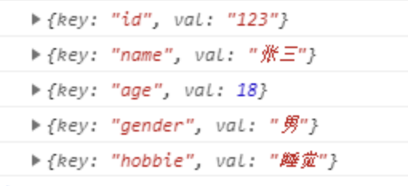
# 18 Generator
Generator是ES6中新增的语法，和Promise一样，都可以用来异步编程。Generator函数可以说是Iterator接口的具体实现方式。Generator 最大的特点就是可以控制函数的执行。
function*用来声明一个函数是生成器函数，它比普通的函数声明多了一个*,*的位置比较随意可以挨着function关键字，也可以挨着函数名yield产出的意思，这个关键字只能出现在生成器函数体内，但是生成器中也可以没有yield关键字，函数遇到yield的时候会暂停，并把yield后面的表达式结果抛出去next作用是将代码的控制权交还给生成器函数
function *foo(x) {
let y = 2 * (yield (x + 1))
let z = yield (y / 3)
return (x + y + z)
}
let it = foo(5)
console.log(it.next()) // => {value: 6, done: false}
console.log(it.next(12)) // => {value: 8, done: false}
console.log(it.next(13)) // => {value: 42, done: true}
上面这个示例就是一个Generator函数，我们来分析其执行过程：
- 首先 Generator 函数调用时它会返回一个迭代器
- 当执行第一次 next 时，传参会被忽略，并且函数暂停在 yield (x + 1) 处，所以返回 5 + 1 = 6
- 当执行第二次 next 时，传入的参数等于上一个 yield 的返回值，如果你不传参，yield 永远返回 undefined。此时 let y = 2 * 12，所以第二个 yield 等于 2 * 12 / 3 = 8
- 当执行第三次 next 时，传入的参数会传递给 z，所以 z = 13, x = 5, y = 24，相加等于 42
yield实际就是暂缓执行的标示，每执行一次next()，相当于指针移动到下一个yield位置
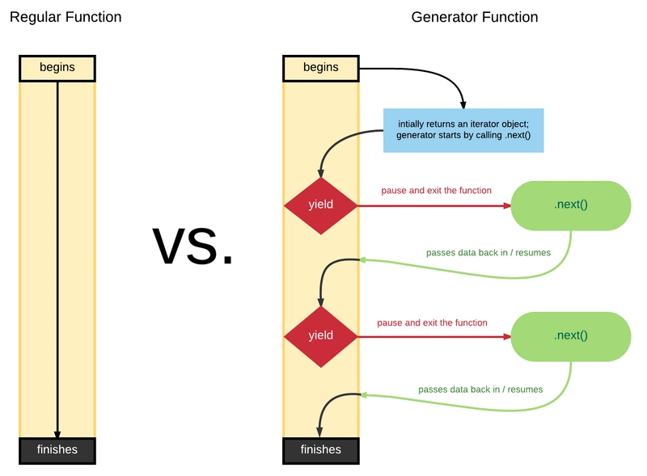
总结一下，
Generator函数是ES6提供的一种异步编程解决方案。通过yield标识位和next()方法调用，实现函数的分段执行
遍历器对象生成函数，最大的特点是可以交出函数的执行权
function关键字与函数名之间有一个星号；- 函数体内部使用
yield表达式，定义不同的内部状态； next指针移向下一个状态
这里你可以说说
Generator的异步编程，以及它的语法糖async和awiat，传统的异步编程。ES6之前，异步编程大致如下
- 回调函数
- 事件监听
- 发布/订阅
传统异步编程方案之一：协程，多个线程互相协作，完成异步任务。
// 使用 * 表示这是一个 Generator 函数
// 内部可以通过 yield 暂停代码
// 通过调用 next 恢复执行
function* test() {
let a = 1 + 2;
yield 2;
yield 3;
}
let b = test();
console.log(b.next()); // > { value: 2, done: false }
console.log(b.next()); // > { value: 3, done: false }
console.log(b.next()); // > { value: undefined, done: true }
从以上代码可以发现，加上
*的函数执行后拥有了next函数，也就是说函数执行后返回了一个对象。每次调用next函数可以继续执行被暂停的代码。以下是Generator函数的简单实现
// cb 也就是编译过的 test 函数
function generator(cb) {
return (function() {
var object = {
next: 0,
stop: function() {}
};
return {
next: function() {
var ret = cb(object);
if (ret === undefined) return { value: undefined, done: true };
return {
value: ret,
done: false
};
}
};
})();
}
// 如果你使用 babel 编译后可以发现 test 函数变成了这样
function test() {
var a;
return generator(function(_context) {
while (1) {
switch ((_context.prev = _context.next)) {
// 可以发现通过 yield 将代码分割成几块
// 每次执行 next 函数就执行一块代码
// 并且表明下次需要执行哪块代码
case 0:
a = 1 + 2;
_context.next = 4;
return 2;
case 4:
_context.next = 6;
return 3;
// 执行完毕
case 6:
case "end":
return _context.stop();
}
}
});
}
# 19 async/await
Generator函数的语法糖。有更好的语义、更好的适用性、返回值是Promise。
- await 和 promise 一样，更多的是考笔试题，当然偶尔也会问到和 promise 的一些区别。
- await 相比直接使用 Promise 来说，优势在于处理 then 的调用链，能够更清晰准确的写出代码。缺点在于滥用 await 可能会导致性能问题，因为 await 会阻塞代码，也许之后的异步代码并不依赖于前者，但仍然需要等待前者完成，导致代码失去了并发性，此时更应该使用 Promise.all。
- 一个函数如果加上 async ，那么该函数就会返回一个 Promise
async => *await => yield
// 基本用法
async function timeout (ms) {
await new Promise((resolve) => {
setTimeout(resolve, ms)
})
}
async function asyncConsole (value, ms) {
await timeout(ms)
console.log(value)
}
asyncConsole('hello async and await', 1000)
下面来看一个使用 await 的代码。
var a = 0
var b = async () => {
a = a + await 10
console.log('2', a) // -> '2' 10
a = (await 10) + a
console.log('3', a) // -> '3' 20
}
b()
a++
console.log('1', a) // -> '1' 1
- 首先函数
b先执行，在执行到await 10之前变量a还是0，因为在await内部实现了generators，generators会保留堆栈中东西，所以这时候a = 0被保存了下来 - 因为
await是异步操作，遇到await就会立即返回一个pending状态的Promise对象，暂时返回执行代码的控制权，使得函数外的代码得以继续执行，所以会先执行console.log('1', a) - 这时候同步代码执行完毕，开始执行异步代码，将保存下来的值拿出来使用，这时候
a = 10 - 然后后面就是常规执行代码了
优缺点：
async/await的优势在于处理 then 的调用链，能够更清晰准确的写出代码，并且也能优雅地解决回调地狱问题。当然也存在一些缺点，因为 await 将异步代码改造成了同步代码，如果多个异步代码没有依赖性却使用了 await 会导致性能上的降低。
async原理
async/await语法糖就是使用Generator函数+自动执行器来运作的
// 定义了一个promise，用来模拟异步请求，作用是传入参数++
function getNum(num){
return new Promise((resolve, reject) => {
setTimeout(() => {
resolve(num+1)
}, 1000)
})
}
//自动执行器，如果一个Generator函数没有执行完，则递归调用
function asyncFun(func){
var gen = func();
function next(data){
var result = gen.next(data);
if (result.done) return result.value;
result.value.then(function(data){
next(data);
});
}
next();
}
// 所需要执行的Generator函数，内部的数据在执行完成一步的promise之后，再调用下一步
var func = function* (){
var f1 = yield getNum(1);
var f2 = yield getNum(f1);
console.log(f2) ;
};
asyncFun(func);
- 在执行的过程中，判断一个函数的
promise是否完成，如果已经完成，将结果传入下一个函数，继续重复此步骤 - 每一个
next()方法返回值的value属性为一个Promise对象，所以我们为其添加then方法， 在then方法里面接着运行next方法挪移遍历器指针，直到Generator函数运行完成
# 20 Proxy
proxy在目标对象的外层搭建了一层拦截，外界对目标对象的某些操作，必须通过这层拦截
var proxy = new Proxy(target, handler);
new Proxy()表示生成一个Proxy实例，target参数表示所要拦截的目标对象，handler参数也是一个对象，用来定制拦截行为
var target = {
name: 'poetries'
};
var logHandler = {
get: function(target, key) {
console.log(`${key} 被读取`);
return target[key];
},
set: function(target, key, value) {
console.log(`${key} 被设置为 ${value}`);
target[key] = value;
}
}
var targetWithLog = new Proxy(target, logHandler);
targetWithLog.name; // 控制台输出：name 被读取
targetWithLog.name = 'others'; // 控制台输出：name 被设置为 others
console.log(target.name); // 控制台输出: others
targetWithLog读取属性的值时，实际上执行的是logHandler.get：在控制台输出信息，并且读取被代理对象target的属性。- 在
targetWithLog设置属性值时，实际上执行的是logHandler.set：在控制台输出信息，并且设置被代理对象target的属性的值
// 由于拦截函数总是返回35，所以访问任何属性都得到35
var proxy = new Proxy({}, {
get: function(target, property) {
return 35;
}
});
proxy.time // 35
proxy.name // 35
proxy.title // 35
Proxy 实例也可以作为其他对象的原型对象
var proxy = new Proxy({}, {
get: function(target, property) {
return 35;
}
});
let obj = Object.create(proxy);
obj.time // 35
proxy对象是obj对象的原型，obj对象本身并没有time属性，所以根据原型链，会在proxy对象上读取该属性，导致被拦截
Proxy的作用
对于代理模式
Proxy的作用主要体现在三个方面
- 拦截和监视外部对对象的访问
- 降低函数或类的复杂度
- 在复杂操作前对操作进行校验或对所需资源进行管理
Proxy所能代理的范围--handler
实际上 handler 本身就是ES6所新设计的一个对象.它的作用就是用来 自定义代理对象的各种可代理操作 。它本身一共有13中方法,每种方法都可以代理一种操作.其13种方法如下
// 在读取代理对象的原型时触发该操作，比如在执行 Object.getPrototypeOf(proxy) 时。
handler.getPrototypeOf()
// 在设置代理对象的原型时触发该操作，比如在执行 Object.setPrototypeOf(proxy, null) 时。
handler.setPrototypeOf()
// 在判断一个代理对象是否是可扩展时触发该操作，比如在执行 Object.isExtensible(proxy) 时。
handler.isExtensible()
// 在让一个代理对象不可扩展时触发该操作，比如在执行 Object.preventExtensions(proxy) 时。
handler.preventExtensions()
// 在获取代理对象某个属性的属性描述时触发该操作，比如在执行 Object.getOwnPropertyDescriptor(proxy, "foo") 时。
handler.getOwnPropertyDescriptor()
// 在定义代理对象某个属性时的属性描述时触发该操作，比如在执行 Object.defineProperty(proxy, "foo", {}) 时。
andler.defineProperty()
// 在判断代理对象是否拥有某个属性时触发该操作，比如在执行 "foo" in proxy 时。
handler.has()
// 在读取代理对象的某个属性时触发该操作，比如在执行 proxy.foo 时。
handler.get()
// 在给代理对象的某个属性赋值时触发该操作，比如在执行 proxy.foo = 1 时。
handler.set()
// 在删除代理对象的某个属性时触发该操作，比如在执行 delete proxy.foo 时。
handler.deleteProperty()
// 在获取代理对象的所有属性键时触发该操作，比如在执行 Object.getOwnPropertyNames(proxy) 时。
handler.ownKeys()
// 在调用一个目标对象为函数的代理对象时触发该操作，比如在执行 proxy() 时。
handler.apply()
// 在给一个目标对象为构造函数的代理对象构造实例时触发该操作，比如在执行new proxy() 时。
handler.construct()
为何Proxy不能被Polyfill
- 如class可以用
function模拟；promise可以用callback模拟 - 但是proxy不能用
Object.defineProperty模拟
目前谷歌的polyfill只能实现部分的功能，如get、set https://github.com/GoogleChrome/proxy-polyfill
// commonJS require
const proxyPolyfill = require('proxy-polyfill/src/proxy')();
// Your environment may also support transparent rewriting of commonJS to ES6:
import ProxyPolyfillBuilder from 'proxy-polyfill/src/proxy';
const proxyPolyfill = ProxyPolyfillBuilder();
// Then use...
const myProxy = new proxyPolyfill(...);
# 21 深浅拷贝
这个问题通常可以通过
JSON.parse(JSON.stringify(object))来解决
let a = {
age: 1,
jobs: {
first: 'FE'
}
}
let b = JSON.parse(JSON.stringify(a))
a.jobs.first = 'native'
console.log(b.jobs.first) // FE
但是该方法也是有局限性的：
- 会忽略
undefined - 会忽略
symbol - 不能序列化函数
- 不能解决循环引用的对象
let obj = {
a: 1,
b: {
c: 2,
d: 3,
},
}
obj.c = obj.b
obj.e = obj.a
obj.b.c = obj.c
obj.b.d = obj.b
obj.b.e = obj.b.c
let newObj = JSON.parse(JSON.stringify(obj))
console.log(newObj)
复
在遇到函数、
undefined或者symbol的时候，该对象也不能正常的序列化
let a = {
age: undefined,
sex: Symbol('male'),
jobs: function() {},
name: 'ppp'
}
let b = JSON.parse(JSON.stringify(a))
console.log(b) // {name: "ppp"}
但是在通常情况下，复杂数据都是可以序列化的，所以这个函数可以解决大部分问题，并且该函数是内置函数中处理深拷贝性能最快的。当然如果你的数据中含有以上三种情况下，可以使用
lodash的深拷贝函数
浅拷贝: 以赋值的形式拷贝引用对象，仍指向同一个地址，修改时原对象也会受到影响
Object.assign- 展开运算符(
...)
深拷贝: 完全拷贝一个新对象，修改时原对象不再受到任何影响
JSON.parse(JSON.stringify(obj)): 性能最快- 具有循环引用的对象时，报错
- 当值为函数、
undefined、或symbol时，无法拷贝 - 递归进行逐一赋值
实现深拷贝
// 解决了常见的类型以及循环引用的问题，当然还是一部分缺陷的，但是面试时候能写出上面的代码已经足够了
// 利用 WeakMap 解决循环引用
let map = new WeakMap()
function deepClone(obj) {
if (obj instanceof Object) {
if (map.has(obj)) {
return map.get(obj)
}
let newObj
if (obj instanceof Array) {
newObj = []
} else if (obj instanceof Function) {
newObj = function() {
return obj.apply(this, arguments)
}
} else if (obj instanceof RegExp) {
// 拼接正则
newobj = new RegExp(obj.source, obj.flags)
} else if (obj instanceof Date) {
newobj = new Date(obj)
} else {
newObj = {}
}
// 克隆一份对象出来
let desc = Object.getOwnPropertyDescriptors(obj)
let clone = Object.create(Object.getPrototypeOf(obj), desc)
map.set(obj, clone)
for (let key in obj) {
if (obj.hasOwnProperty(key)) {
newObj[key] = deepClone(obj[key])
}
}
return newObj
}
return obj
}
# 22 节流与防抖
- 函数防抖 是指在事件被触发 n 秒后再执行回调，如果在这 n 秒内事件又被触发，则重新计时。这可以使用在一些点击请求的事件上，避免因为用户的多次点击向后端发送多次请求。
- 函数节流 是指规定一个单位时间，在这个单位时间内，只能有一次触发事件的回调函数执行，如果在同一个单位时间内某事件被触发多次，只有一次能生效。节流可以使用在 scroll 函数的事件监听上，通过事件节流来降低事件调用的频率。
// 函数防抖的实现
function debounce(fn, wait) {
var timer = null;
return function() {
var context = this,
args = arguments;
// 如果此时存在定时器的话，则取消之前的定时器重新记时
if (timer) {
clearTimeout(timer);
timer = null;
}
// 设置定时器，使事件间隔指定事件后执行
timer = setTimeout(() => {
fn.apply(context, args);
}, wait);
};
}
// 函数节流的实现;
function throttle(fn, delay) {
var preTime = Date.now();
return function() {
var context = this,
args = arguments,
nowTime = Date.now();
// 如果两次时间间隔超过了指定时间，则执行函数。
if (nowTime - preTime >= delay) {
preTime = Date.now();
return fn.apply(context, args);
}
};
}
# 23 垃圾回收
- 对于在JavaScript中的字符串，对象，数组是没有固定大小的，只有当对他们进行动态分配存储时，解释器就会分配内存来存储这些数据，当JavaScript的解释器消耗完系统中所有可用的内存时，就会造成系统崩溃。
- 内存泄漏，在某些情况下，不再使用到的变量所占用内存没有及时释放，导致程序运行中，内存越占越大，极端情况下可以导致系统崩溃，服务器宕机。
- JavaScript有自己的一套垃圾回收机制，JavaScript的解释器可以检测到什么时候程序不再使用这个对象了（数据），就会把它所占用的内存释放掉。
- 针对JavaScript的来及回收机制有以下两种方法（常用）：标记清除，引用计数
- 标记清除
v8 的垃圾回收机制基于分代回收机制，这个机制又基于世代假说，这个假说有两个特点，一是新生的对象容易早死，另一个是不死的对象会活得更久。基于这个假说，v8 引擎将内存分为了新生代和老生代。
- 新创建的对象或者只经历过一次的垃圾回收的对象被称为新生代。经历过多次垃圾回收的对象被称为老生代。
- 新生代被分为 From 和 To 两个空间，To 一般是闲置的。当 From 空间满了的时候会执行 Scavenge 算法进行垃圾回收。当我们执行垃圾回收算法的时候应用逻辑将会停止，等垃圾回收结束后再继续执行。
这个算法分为三步：
- 首先检查 From 空间的存活对象，如果对象存活则判断对象是否满足晋升到老生代的条件，如果满足条件则晋升到老生代。如果不满足条件则移动 To 空间。
- 如果对象不存活，则释放对象的空间。
- 最后将 From 空间和 To 空间角色进行交换。
新生代对象晋升到老生代有两个条件：
- 第一个是判断是对象否已经经过一次 Scavenge 回收。若经历过，则将对象从 From 空间复制到老生代中；若没有经历，则复制到 To 空间。
- 第二个是 To 空间的内存使用占比是否超过限制。当对象从 From 空间复制到 To 空间时，若 To 空间使用超过 25%，则对象直接晋升到老生代中。设置 25% 的原因主要是因为算法结束后，两个空间结束后会交换位置，如果 To 空间的内存太小，会影响后续的内存分配。
老生代采用了标记清除法和标记压缩法。标记清除法首先会对内存中存活的对象进行标记，标记结束后清除掉那些没有标记的对象。由于标记清除后会造成很多的内存碎片，不便于后面的内存分配。所以了解决内存碎片的问题引入了标记压缩法。
由于在进行垃圾回收的时候会暂停应用的逻辑，对于新生代方法由于内存小，每次停顿的时间不会太长，但对于老生代来说每次垃圾回收的时间长，停顿会造成很大的影响。 为了解决这个问题 V8 引入了增量标记的方法，将一次停顿进行的过程分为了多步，每次执行完一小步就让运行逻辑执行一会，就这样交替运行
# 24 内存泄露
- 意外的全局变量: 无法被回收
- 定时器: 未被正确关闭，导致所引用的外部变量无法被释放
- 事件监听: 没有正确销毁 (低版本浏览器可能出现)
- 闭包
- 第一种情况是我们由于使用未声明的变量，而意外的创建了一个全局变量，而使这个变量一直留在内存中无法被回收。
- 第二种情况是我们设置了setInterval定时器，而忘记取消它，如果循环函数有对外部变量的引用的话，那么这个变量会被一直留在内存中，而无法被回收。
- 第三种情况是我们获取一个DOM元素的引用，而后面这个元素被删除，由于我们一直保留了对这个元素的引用，所以它也无法被回收。
- 第四种情况是不合理的使用闭包，从而导致某些变量一直被留在内存当中。
dom引用:dom元素被删除时，内存中的引用未被正确清空- 控制台
console.log打印的东西
可用
chrome中的timeline进行内存标记，可视化查看内存的变化情况，找出异常点。
# 25 Ajax
它是一种异步通信的方法，通过直接由 js 脚本向服务器发起 http 通信，然后根据服务器返回的数据，更新网页的相应部分，而不用刷新整个页面的一种方法。
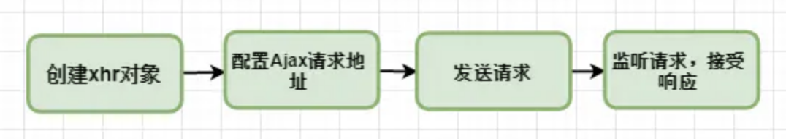
面试手写（原生）：
//1：创建Ajax对象
var xhr = window.XMLHttpRequest?new XMLHttpRequest():new ActiveXObject('Microsoft.XMLHTTP');// 兼容IE6及以下版本
//2：配置 Ajax请求地址
xhr.open('get','index.xml',true);
//3：发送请求
xhr.send(null); // 严谨写法
//4:监听请求，接受响应
xhr.onreadysatechange=function(){
if(xhr.readySate==4&&xhr.status==200 || xhr.status==304 )
console.log(xhr.responsetXML)
}
jQuery写法
$.ajax({
type:'post',
url:'',
async:ture,//async 异步 sync 同步
data:data,//针对post请求
dataType:'jsonp',
success:function (msg) {
},
error:function (error) {
}
})
promise 封装实现：
// promise 封装实现：
function getJSON(url) {
// 创建一个 promise 对象
let promise = new Promise(function(resolve, reject) {
let xhr = new XMLHttpRequest();
// 新建一个 http 请求
xhr.open("GET", url, true);
// 设置状态的监听函数
xhr.onreadystatechange = function() {
if (this.readyState !== 4) return;
// 当请求成功或失败时，改变 promise 的状态
if (this.status === 200) {
resolve(this.response);
} else {
reject(new Error(this.statusText));
}
};
// 设置错误监听函数
xhr.onerror = function() {
reject(new Error(this.statusText));
};
// 设置响应的数据类型
xhr.responseType = "json";
// 设置请求头信息
xhr.setRequestHeader("Accept", "application/json");
// 发送 http 请求
xhr.send(null);
});
return promise;
}
# 26 arguments对象
arguments对象是函数中传递的参数值的集合。它是一个类似数组的对象，因为它有一个length属性，我们可以使用数组索引表示法arguments[1]来访问单个值，但它没有数组中的内置方法，如：forEach、reduce、filter和map。
我们可以使用Array.prototype.slice将arguments对象转换成一个数组。
function one() {
return Array.prototype.slice.call(arguments);
}
注意:箭头函数中没有arguments对象。
function one() {
return arguments;
}
const two = function () {
return arguments;
}
const three = function three() {
return arguments;
}
const four = () => arguments;
four(); // Throws an error - arguments is not defined
当我们调用函数four时，它会抛出一个ReferenceError: arguments is not defined error。使用rest语法，可以解决这个问题。
const four = (...args) => args;
这会自动将所有参数值放入数组中。
# 27 数组和字符串方法
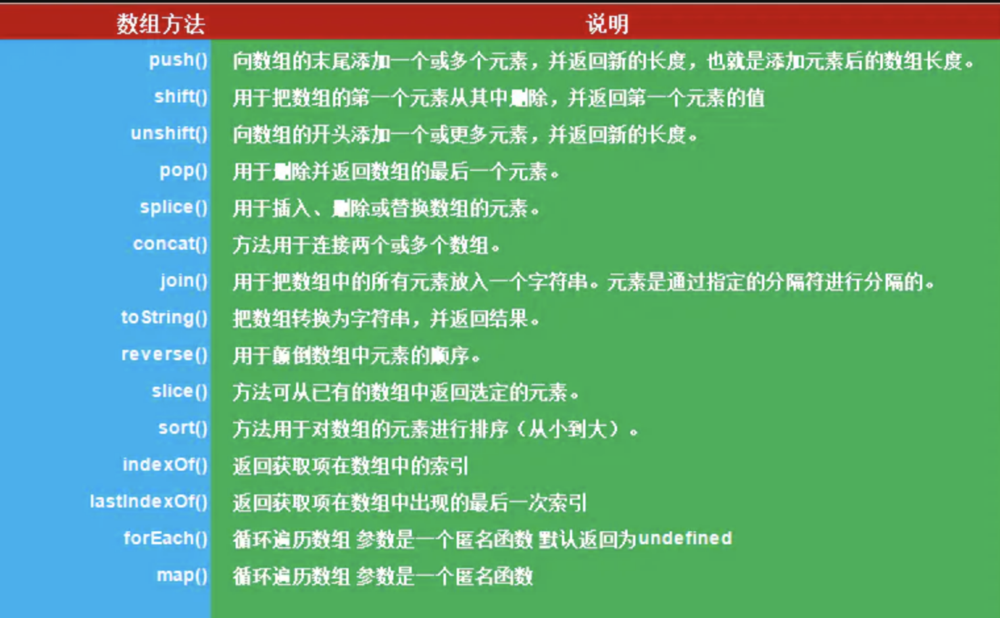 
# 二、CSS基础
# 1 盒模型
content（元素内容） + padding（内边距） + border（边框） + margin（外边距）
延伸：box-sizing
content-box：默认值，总宽度 =margin+border+padding+widthborder-box：盒子宽度包含padding和border，总宽度 = margin + widthinherit：从父元素继承box-sizing属性
# 2 BFC
块级格式化上下文，是一个独立的渲染区域，让处于
BFC内部的元素与外部的元素相互隔离，使内外元素的定位不会相互影响。
IE下为
Layout，可通过zoom:1触发
触发条件:
- 根元素
position: absolute/fixeddisplay: inline-block / tablefloat元素ovevflow !== visible
规则:
- 属于同一个
BFC的两个相邻Box垂直排列 - 属于同一个
BFC的两个相邻Box的margin会发生重叠 BFC中子元素的margin box的左边， 与包含块 (BFC)border box的左边相接触 (子元素absolute除外)BFC的区域不会与float的元素区域重叠- 计算
BFC的高度时，浮动子元素也参与计算 - 文字层不会被浮动层覆盖，环绕于周围
应用:
- 阻止
margin重叠 - 可以包含浮动元素 —— 清除内部浮动(清除浮动的原理是两个
div都位于同一个BFC区域之中) - 自适应两栏布局
- 可以阻止元素被浮动元素覆盖
# 3 层叠上下文
元素提升为一个比较特殊的图层，在三维空间中 (z轴) 高出普通元素一等。
触发条件
- 根层叠上下文(
html) positioncss3属性flextransformopacityfilterwill-changewebkit-overflow-scrolling
层叠等级：层叠上下文在z轴上的排序
- 在同一层叠上下文中，层叠等级才有意义
z-index的优先级最高

# 4 左右居中方案
- 行内元素:
text-align: center - 定宽块状元素: 左右
margin值为auto - 不定宽块状元素:
table布局，position + transform
/* 方案1 */
.wrap {
text-align: center
}
.center {
display: inline;
/* or */
/* display: inline-block; */
}
/* 方案2 */
.center {
width: 100px;
margin: 0 auto;
}
/* 方案2 */
.wrap {
position: relative;
}
.center {
position: absulote;
left: 50%;
transform: translateX(-50%);
}
# 5 上下垂直居中方案
- 定高：
margin，position + margin(负值) - 不定高：
position+transform，flex，IFC + vertical-align:middle
/* 定高方案1 */
.center {
height: 100px;
margin: 50px 0;
}
/* 定高方案2 */
.center {
height: 100px;
position: absolute;
top: 50%;
margin-top: -25px;
}
/* 不定高方案1 */
.center {
position: absolute;
top: 50%;
transform: translateY(-50%);
}
/* 不定高方案2 */
.wrap {
display: flex;
align-items: center;
}
.center {
width: 100%;
}
/* 不定高方案3 */
/* 设置 inline-block 则会在外层产生 IFC，高度设为 100% 撑开 wrap 的高度 */
.wrap::before {
content: '';
height: 100%;
display: inline-block;
vertical-align: middle;
}
.wrap {
text-align: center;
}
.center {
display: inline-block;
vertical-align: middle;
}
# 6 选择器权重计算方式
!important > 内联样式 = 外联样式 > ID选择器 > 类选择器 = 伪类选择器 = 属性选择器 > 元素选择器 = 伪元素选择器 > 通配选择器 = 后代选择器 = 兄弟选择器
- 属性后面加
!import会覆盖页面内任何位置定义的元素样式 - 作为
style属性写在元素内的样式 id选择器- 类选择器
- 标签选择器
- 通配符选择器（
*） - 浏览器自定义或继承
同一级别：后写的会覆盖先写的
css选择器的解析原则：选择器定位DOM元素是从右往左的方向，这样可以尽早的过滤掉一些不必要的样式规则和元素
# 7 清除浮动
- 在浮动元素后面添加
clear:both的空div元素
<div class="container">
<div class="left"></div>
<div class="right"></div>
<div style="clear:both"></div>
</div>
- 给父元素添加
overflow:hidden或者auto样式，触发BFC
<div class="container">
<div class="left"></div>
<div class="right"></div>
</div>
.container{
width: 300px;
background-color: #aaa;
overflow:hidden;
zoom:1; /*IE6*/
}
- 使用伪元素，也是在元素末尾添加一个点并带有
clear: both属性的元素实现的。
<div class="container clearfix">
<div class="left"></div>
<div class="right"></div>
</div>
.clearfix{
zoom: 1; /*IE6*/
}
.clearfix:after{
content: ".";
height: 0;
clear: both;
display: block;
visibility: hidden;
}
推荐使用第三种方法，不会在页面新增div，文档结构更加清晰
# 8 左边定宽，右边自适应方案
float + margin，float + calc
/* 方案1 */
.left {
width: 120px;
float: left;
}
.right {
margin-left: 120px;
}
/* 方案2 */
.left {
width: 120px;
float: left;
}
.right {
width: calc(100% - 120px);
float: left;
}
# 9 左右两边定宽，中间自适应
float，
float + calc, 圣杯布局（设置BFC，margin负值法），flex
.wrap {
width: 100%;
height: 200px;
}
.wrap > div {
height: 100%;
}
/* 方案1 */
.left {
width: 120px;
float: left;
}
.right {
float: right;
width: 120px;
}
.center {
margin: 0 120px;
}
/* 方案2 */
.left {
width: 120px;
float: left;
}
.right {
float: right;
width: 120px;
}
.center {
width: calc(100% - 240px);
margin-left: 120px;
}
/* 方案3 */
.wrap {
display: flex;
}
.left {
width: 120px;
}
.right {
width: 120px;
}
.center {
flex: 1;
}
# 10 CSS动画和过渡
animation / keyframes
animation-name: 动画名称，对应@keyframesanimation-duration: 间隔animation-timing-function: 曲线animation-delay: 延迟animation-iteration-count: 次数infinite: 循环动画
animation-direction: 方向alternate: 反向播放
animation-fill-mode: 静止模式forwards: 停止时，保留最后一帧backwards: 停止时，回到第一帧both: 同时运用forwards / backwards
- 常用钩子:
animationend
动画属性: 尽量使用动画属性进行动画，能拥有较好的性能表现
translatescalerotateskewopacitycolor
transform
- 位移属性
translate( x , y ) - 旋转属性
rotate() - 缩放属性
scale() - 倾斜属性
skew()
transition
transition-property（过渡的属性的名称）。transition-duration（定义过渡效果花费的时间,默认是0）。transition-timing-function:linear(匀速) ease(慢速开始，然后变快，然后慢速结束)（规定过渡效果的时间曲线，最常用的是这两个）。transition-delay（规定过渡效果何时开始。默认是 0）
般情况下，我们都是写一起的，比如：
transition： width 2s ease 1s
关键帧动画animation
一个关键帧动画，最少包含两部分，animation 属性及属性值（动画的名称和运行方式运行时间等）。@keyframes（规定动画的具体实现过程）
animation 属性可以拆分为
animation-name规定@keyframes 动画的名称。animation-duration规定动画完成一个周期所花费的秒或毫秒。默认是0。animation-timing-function规定动画的速度曲线。默认是 “ease”，常用的还有linear，同transtion。animation-delay规定动画何时开始。默认是 0。animation-iteration-count规定动画被播放的次数。默认是 1，但我们一般用infinite，一直播放
而
@keyframes的使用方法，可以是from->to（等同于0%和100%），也可以是从0%->100%之间任意个的分层设置。我们通过下面一个稍微复杂点的demo来看一下，基本上用到了上面说到的大部分知识
eg:
@keyframes mymove
{
from {top:0px;}
to {top:200px;}
}
/* 等同于： */
@keyframes mymove
{
0% {top:0px;}
25% {top:200px;}
50% {top:100px;}
75% {top:200px;}
100% {top:0px;}
}
用css3动画使一个图片旋转
#loader {
display: block;
position: relative;
-webkit-animation: spin 2s linear infinite;
animation: spin 2s linear infinite;
}
@-webkit-keyframes spin {
0% {
-webkit-transform: rotate(0deg);
-ms-transform: rotate(0deg);
transform: rotate(0deg);
}
100% {
-webkit-transform: rotate(360deg);
-ms-transform: rotate(360deg);
transform: rotate(360deg);
}
}
@keyframes spin {
0% {
-webkit-transform: rotate(0deg);
-ms-transform: rotate(0deg);
transform: rotate(0deg);
}
100% {
-webkit-transform: rotate(360deg);
-ms-transform: rotate(360deg);
transform: rotate(360deg);
}
}
# 11 CSS3的新特性
transition：过渡transform: 旋转、缩放、移动或倾斜animation: 动画gradient: 渐变box-shadow: 阴影border-radius: 圆角word-break:normal|break-all|keep-all; 文字换行(默认规则|单词也可以换行|只在半角空格或连字符换行)text-overflow: 文字超出部分处理text-shadow: 水平阴影，垂直阴影，模糊的距离，以及阴影的颜色。box-sizing:content-box|border-box盒模型- 媒体查询
@media screen and (max-width: 960px) {}还有打印print
# 12 列举几个css中可继承和不可继承的元素
- 不可继承的：
display、margin、border、padding、background、height、min-height、max-height、width、min-width、max-width、overflow、position、left、right、top、bottom、z-index、float、clear、table-layout、vertical-align - 所有元素可继承：
visibility和cursor。 - 内联元素可继承：
letter-spacing、word-spacing、white-space、line-height、color、font、font-family、font-size、font-style、font-variant、font-weight、text-decoration、text-transform、direction。 - 终端块状元素可继承：
text-indent和text-align。 - 列表元素可继承：
list-style、list-style-type、list-style-position、list-style-image`。
transition和animation的区别
Animation和transition大部分属性是相同的，他们都是随时间改变元素的属性值，他们的主要区别是transition需要触发一个事件才能改变属性，而animation不需要触发任何事件的情况下才会随时间改变属性值，并且transition为2帧，从from .... to，而animation可以一帧一帧的
# 三、浏览器
# 1 浏览器架构
- 用户界面
- 主进程
- 内核
- 渲染引擎
JS引擎- 执行栈
- 事件触发线程
- 消息队列
- 微任务
- 宏任务
- 消息队列
- 网络异步线程
- 定时器线程
# 2 渲染机制
1. 浏览器如何渲染网页
概述：浏览器渲染一共有五步
- 处理
HTML并构建DOM树。 - 处理
CSS构建CSSOM树。 - 将
DOM与CSSOM合并成一个渲染树。 - 根据渲染树来布局，计算每个节点的位置。
- 调用
GPU绘制，合成图层，显示在屏幕上
第四步和第五步是最耗时的部分，这两步合起来，就是我们通常所说的渲染
具体如下图过程如下图所示
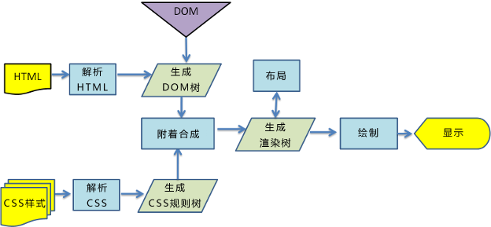
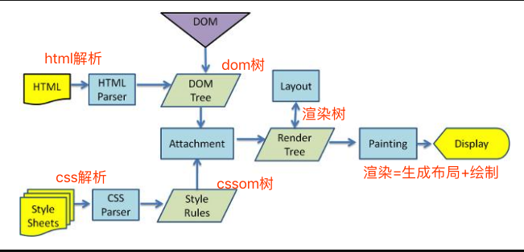
渲染
- 网页生成的时候，至少会渲染一次
- 在用户访问的过程中，还会不断重新渲染
重新渲染需要重复之前的第四步(重新生成布局)+第五步(重新绘制)或者只有第五个步(重新绘制)
- 在构建
CSSOM树时，会阻塞渲染，直至CSSOM树构建完成。并且构建CSSOM树是一个十分消耗性能的过程，所以应该尽量保证层级扁平，减少过度层叠，越是具体的CSS选择器，执行速度越慢 - 当
HTML解析到script标签时，会暂停构建DOM，完成后才会从暂停的地方重新开始。也就是说，如果你想首屏渲染的越快，就越不应该在首屏就加载JS文件。并且CSS也会影响JS的执行，只有当解析完样式表才会执行JS，所以也可以认为这种情况下，CSS也会暂停构建DOM
2. 浏览器渲染五个阶段
2.1 第一步：解析HTML标签，构建DOM树
在这个阶段，引擎开始解析
html，解析出来的结果会成为一棵dom树dom的目的至少有2个
- 作为下个阶段渲染树状图的输入
- 成为网页和脚本的交互界面。(最常用的就是
getElementById等等)
当解析器到达script标签的时候，发生下面四件事情
html解析器停止解析,- 如果是外部脚本，就从外部网络获取脚本代码
- 将控制权交给
js引擎，执行js代码 - 恢复
html解析器的控制权
由此可以得到第一个结论1
- 由于
<script>标签是阻塞解析的，将脚本放在网页尾部会加速代码渲染。 defer和async属性也能有助于加载外部脚本。defer使得脚本会在dom完整构建之后执行；async标签使得脚本只有在完全available才执行，并且是以非阻塞的方式进行的
2.2 第二步：解析CSS标签，构建CSSOM树
- 我们已经看到
html解析器碰到脚本后会做的事情，接下来我们看下html解析器碰到样式表会发生的情况 js会阻塞解析，因为它会修改文档(document)。css不会修改文档的结构，如果这样的话，似乎看起来css样式不会阻塞浏览器html解析。但是事实上css样式表是阻塞的。阻塞是指当cssom树建立好之后才会进行下一步的解析渲染
通过以下手段可以减轻cssom带来的影响
- 将
script脚本放在页面底部 - 尽可能快的加载
css样式表 - 将样式表按照
media type和media query区分，这样有助于我们将css资源标记成非阻塞渲染的资源。 - 非阻塞的资源还是会被浏览器下载，只是优先级较低
2.3 第三步：把DOM和CSSOM组合成渲染树（render tree）
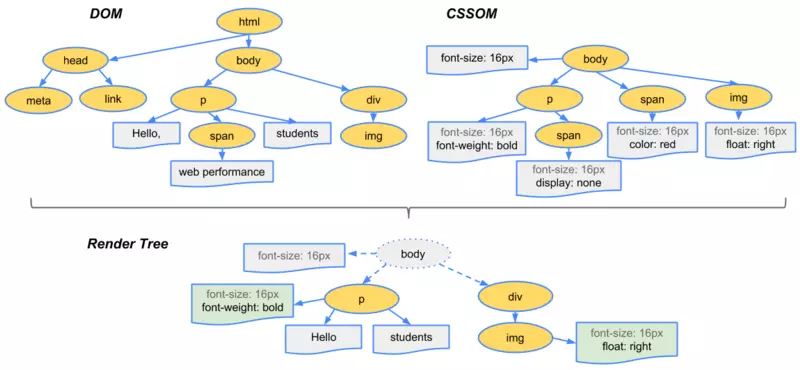
2.4 第四步：在渲染树的基础上进行布局，计算每个节点的几何结构
布局(
layout)：定位坐标和大小，是否换行，各种position,overflow,z-index属性
2.5 调用 GPU 绘制，合成图层，显示在屏幕上
将渲染树的各个节点绘制到屏幕上，这一步被称为绘制
painting
3. 渲染优化相关
3.1 Load 和 DOMContentLoaded 区别
Load事件触发代表页面中的DOM，CSS，JS，图片已经全部加载完毕。DOMContentLoaded事件触发代表初始的HTML被完全加载和解析，不需要等待CSS，JS，图片加载
3.2 图层
一般来说，可以把普通文档流看成一个图层。特定的属性可以生成一个新的图层。不同的图层渲染互不影响，所以对于某些频繁需要渲染的建议单独生成一个新图层，提高性能。但也不能生成过多的图层，会引起反作用。
通过以下几个常用属性可以生成新图层
3D变换：translate3d、translateZwill-changevideo、iframe标签- 通过动画实现的
opacity动画转换 position: fixed
3.3 重绘（Repaint）和回流（Reflow）
重绘和回流是渲染步骤中的一小节，但是这两个步骤对于性能影响很大
- 重绘是当节点需要更改外观而不会影响布局的，比如改变
color就叫称为重绘 - 回流是布局或者几何属性需要改变就称为回流。
回流必定会发生重绘，重绘不一定会引发回流。回流所需的成本比重绘高的多，改变深层次的节点很可能导致父节点的一系列回流
以下几个动作可能会导致性能问题
- 改变
window大小 - 改变字体
- 添加或删除样式
- 文字改变
- 定位或者浮动
- 盒模型
很多人不知道的是，重绘和回流其实和 Event loop 有关
- 当
Event loop执行完Microtasks后，会判断document是否需要更新。因为浏览器是60Hz的刷新率，每16ms才会更新一次。 - 然后判断是否有
resize或者scroll，有的话会去触发事件，所以resize和scroll事件也是至少16ms才会触发一次，并且自带节流功能。 - 判断是否触发了
media query - 更新动画并且发送事件
- 判断是否有全屏操作事件
- 执行
requestAnimationFrame回调 - 执行
IntersectionObserver回调，该方法用于判断元素是否可见，可以用于懒加载上，但是兼容性不好 - 更新界面
- 以上就是一帧中可能会做的事情。如果在一帧中有空闲时间，就会去执行
requestIdleCallback回调
常见的引起重绘的属性
colorborder-stylevisibilitybackgroundtext-decorationbackground-imagebackground-positionbackground-repeatoutline-coloroutlineoutline-styleborder-radiusoutline-widthbox-shadowbackground-size
3.4 常见引起回流属性和方法
任何会改变元素几何信息(元素的位置和尺寸大小)的操作，都会触发重排，下面列一些栗子
- 添加或者删除可见的
DOM元素； - 元素尺寸改变——边距、填充、边框、宽度和高度
- 内容变化，比如用户在
input框中输入文字 - 浏览器窗口尺寸改变——
resize事件发生时 - 计算
offsetWidth和offsetHeight属性 - 设置
style属性的值
回流影响的范围
由于浏览器渲染界面是基于流失布局模型的，所以触发重排时会对周围DOM重新排列，影响的范围有两种
- 全局范围：从根节点
html开始对整个渲染树进行重新布局。 - 局部范围：对渲染树的某部分或某一个渲染对象进行重新布局
全局范围回流
<body>
<div class="hello">
<h4>hello</h4>
<p><strong>Name:</strong>BDing</p>
<h5>male</h5>
<ol>
<li>coding</li>
<li>loving</li>
</ol>
</div>
</body>
当
p节点上发生reflow时，hello和body也会重新渲染，甚至h5和ol都会收到影响
局部范围回流
用局部布局来解释这种现象：把一个
dom的宽高之类的几何信息定死，然后在dom内部触发重排，就只会重新渲染该dom内部的元素，而不会影响到外界
3.5 减少重绘和回流
使用
translate替代top
<div class="test"></div>
<style>
.test {
position: absolute;
top: 10px;
width: 100px;
height: 100px;
background: red;
}
</style>
<script>
setTimeout(() => {
// 引起回流
document.querySelector('.test').style.top = '100px'
}, 1000)
</script>
- 使用
visibility替换display: none，因为前者只会引起重绘，后者会引发回流（改变了布局） - 把
DOM离线后修改，比如：先把DOM给display:none(有一次Reflow)，然后你修改100次，然后再把它显示出来 - 不要把
DOM结点的属性值放在一个循环里当成循环里的变量
for(let i = 0; i < 1000; i++) {
// 获取 offsetTop 会导致回流，因为需要去获取正确的值
console.log(document.querySelector('.test').style.offsetTop)
}
- 不要使用
table布局，可能很小的一个小改动会造成整个table的重新布局 - 动画实现的速度的选择，动画速度越快，回流次数越多，也可以选择使用
requestAnimationFrame CSS选择符从右往左匹配查找，避免DOM深度过深- 将频繁运行的动画变为图层，图层能够阻止该节点回流影响别的元素。比如对于
video标签，浏览器会自动将该节点变为图层。


# 3 缓存机制
1. 首先得明确 http 缓存的好处
- 减少了冗余的数据传输，减少网费
- 减少服务器端的压力
Web缓存能够减少延迟与网络阻塞，进而减少显示某个资源所用的时间- 加快客户端加载网页的速度
2. 常见 http 缓存的类型
- 私有缓存（一般为本地浏览器缓存）
- 代理缓存
3. 然后谈谈本地缓存
本地缓存是指浏览器请求资源时命中了浏览器本地的缓存资源，浏览器并不会发送真正的请求给服务器了。它的执行过程是
- 第一次浏览器发送请求给服务器时，此时浏览器还没有本地缓存副本，服务器返回资源给浏览器，响应码是
200 OK，浏览器收到资源后，把资源和对应的响应头一起缓存下来 - 第二次浏览器准备发送请求给服务器时候，浏览器会先检查上一次服务端返回的响应头信息中的
Cache-Control，它的值是一个相对值，单位为秒，表示资源在客户端缓存的最大有效期，过期时间为第一次请求的时间减去Cache-Control的值，过期时间跟当前的请求时间比较，如果本地缓存资源没过期，那么命中缓存，不再请求服务器 - 如果没有命中，浏览器就会把请求发送给服务器，进入缓存协商阶段。
与本地缓存相关的头有：
Cache-Control、Expires，Cache-Control有多个可选值代表不同的意义，而Expires就是一个日期格式的绝对值。
3.1 Cache-Control
Cache-Control是HTPP缓存策略中最重要的头，它是HTTP/1.1中出现的，它由如下几个值
no-cache：不使用本地缓存。需要使用缓存协商，先与服务器确认返回的响应是否被更改，如果之前的响应中存在ETag，那么请求的时候会与服务端验证，如果资源未被更改，则可以避免重新下载no-store：直接禁止游览器缓存数据，每次用户请求该资源，都会向服务器发送一个请求，每次都会下载完整的资源public：可以被所有的用户缓存，包括终端用户和CDN等中间代理服务器。private：只能被终端用户的浏览器缓存，不允许CDN等中继缓存服务器对其缓存。max-age：从当前请求开始，允许获取的响应被重用的最长时间（秒）。
# 例如：
Cache-Control: public, max-age=1000
# 表示资源可以被所有用户以及代理服务器缓存，最长时间为1000秒。
3.2 Expires
Expires是HTTP/1.0出现的头信息，同样是用于决定本地缓存策略的头，它是一个绝对时间，时间格式是如Mon, 10 Jun 2015 21:31:12 GMT，只要发送请求时间是在Expires之前，那么本地缓存始终有效，否则就会去服务器发送请求获取新的资源。如果同时出现Cache-Control：max-age和Expires，那么max-age优先级更高。他们可以这样组合使用
Cache-Control: public
Expires: Wed, Jan 10 2018 00:27:04 GMT
3.3 所谓的缓存协商
当第一次请求时服务器返回的响应头中存在以下情况时
- 没有
Cache-Control和Expires Cache-Control和Expires过期了Cache-Control的属性设置为no-cache时
那么浏览器第二次请求时就会与服务器进行协商，询问浏览器中的缓存资源是不是旧版本，需不需要更新，此时，服务器就会做出判断，如果缓存和服务端资源的最新版本是一致的，那么就无需再次下载该资源，服务端直接返回
304 Not Modified状态码，如果服务器发现浏览器中的缓存已经是旧版本了，那么服务器就会把最新资源的完整内容返回给浏览器，状态码就是200 Ok，那么服务端是根据什么来判断浏览器的缓存是不是最新的呢？其实是根据HTTP的另外两组头信息，分别是：Last-Modified/If-Modified-Since与ETag/If-None-Match。
Last-Modified 与 If-Modified-Since
- 浏览器第一次请求资源时，服务器会把资源的最新修改时间
Last-Modified:Thu, 29 Dec 2011 18:23:55 GMT放在响应头中返回给浏览器 - 第二次请求时，浏览器就会把上一次服务器返回的修改时间放在请求头
If-Modified-Since:Thu, 29 Dec 2011 18:23:55发送给服务器，服务器就会拿这个时间跟服务器上的资源的最新修改时间进行对比
如果两者相等或者大于服务器上的最新修改时间，那么表示浏览器的缓存是有效的，此时缓存会命中，服务器就不再返回内容给浏览器了，同时
Last-Modified头也不会返回，因为资源没被修改，返回了也没什么意义。如果没命中缓存则最新修改的资源连同Last-Modified头一起返回
# 第一次请求返回的响应头
Cache-Control:max-age=3600
Expires: Fri, Jan 12 2018 00:27:04 GMT
Last-Modified: Wed, Jan 10 2018 00:27:04 GMT
# 第二次请求的请求头信息
If-Modified-Since: Wed, Jan 10 2018 00:27:04 GMT
这组头信息是基于资源的修改时间来判断资源有没有更新，另一种方式就是根据资源的内容来判断，就是接下来要讨论的
ETag与If-None-Match
ETag与If-None-Match
ETag/If-None-Match与Last-Modified/If-Modified-Since的流程其实是类似的，唯一的区别是它基于资源的内容的摘要信息（比如MD5 hash）来判断
浏览器发送第二次请求时，会把第一次的响应头信息
ETag的值放在If-None-Match的请求头中发送到服务器，与最新的资源的摘要信息对比，如果相等，取浏览器缓存，否则内容有更新，最新的资源连同最新的摘要信息返回。用ETag的好处是如果因为某种原因到时资源的修改时间没改变，那么用ETag就能区分资源是不是有被更新。
# 第一次请求返回的响应头：
Cache-Control: public, max-age=31536000
ETag: "15f0fff99ed5aae4edffdd6496d7131f"
# 第二次请求的请求头信息：
If-None-Match: "15f0fff99ed5aae4edffdd6496d7131f"
缓存位置
浏览器缓存的位置的话，可以分为四种,优先级从高到低排列分别👇
Service WorkerMemory CacheDisk CachePush Cache
Service Worker
这个应用场景比如PWA，它借鉴了Web Worker思路，由于它脱离了浏览器的窗体，因此无法直接访问DOM。它能完成的功能比如：
离线缓存、消息推送和网络代理，其中离线缓存就是Service Worker Cache。
Memory Cache
指的是内存缓存，从效率上讲它是最快的，从存活时间来讲又是最短的，当渲染进程结束后，内存缓存也就不存在了。
Disk Cache
存储在磁盘中的缓存，从存取效率上讲是比内存缓存慢的，优势在于存储容量和存储时长。
Disk Cache VS Memory Cache
两者对比，主要的策略👇
- 内容使用率高的话，文件优先进入磁盘
- 比较大的JS，CSS文件会直接放入磁盘，反之放入内存。
Push Cache
推送缓存，这算是浏览器中最后一道防线吧，它是
HTTP/2的内容
浏览器缓存总结
浏览器缓存分为强缓存和协商缓存。当客户端请求某个资源时，获取缓存的流程如下
- 先根据这个资源的一些 http header 判断它是否命中强缓存，先检查
Cache-Control，如果命中，则直接从本地获取缓存资源，不会发请求到服务器； - 当强缓存没有命中时，客户端会发送请求到服务器，服务器通过另一些request header验证这个资源是否命中协商缓存，称为http再验证，如果命中，服务器将请求返回，但不返回资源，而是返回304告诉客户端直接从缓存中获取，客户端收到返回后就会从缓存中获取资源；（服务器通过请求头中的
If-Modified-Since或者If-None-Match字段检查资源是否更新） - 强缓存和协商缓存共同之处在于，如果命中缓存，服务器都不会返回资源； 区别是，强缓存不对发送请求到服务器，但协商缓存会。
- 当协商缓存也没命中时，服务器就会将资源发送回客户端。
- 当 ctrl+f5 强制刷新网页时，直接从服务器加载，跳过强缓存和协商缓存；
- 当 f5刷新网页时，跳过强缓存，但是会检查协商缓存；
强缓存
- Expires（该字段是 http1.0 时的规范，值为一个绝对时间的 GMT 格式的时间字符串，代表缓存资源的过期时间）
- Cache-Control:max-age（该字段是 http1.1的规范，强缓存利用其 max-age 值来判断缓存资源的最大生命周期，它的值单位为秒）
协商缓
- Last-Modified（值为资源最后更新时间，随服务器response返回，即使文件改回去，日期也会变化）
- If-Modified-Since（通过比较两个时间来判断资源在两次请求期间是否有过修改，如果没有修改，则命中协商缓存）
- ETag（表示资源内容的唯一标识，随服务器response返回，仅根据文件内容是否变化判断）
- If-None-Match（服务器通过比较请求头部的If-None-Match与当前资源的ETag是否一致来判断资源是否在两次请求之间有过修改，如果没有修改，则命中协商缓存）
# 4 浏览器存储
我们经常需要对业务中的一些数据进行存储，通常可以分为 短暂性存储 和 持久性储存。
- 短暂性的时候，我们只需要将数据存在内存中，只在运行时可用
- 持久性存储，可以分为 浏览器端 与 服务器端
- 浏览器:
cookie: 通常用于存储用户身份，登录状态等http中自动携带， 体积上限为4K， 可自行设置过期时间
localStorage / sessionStorage: 长久储存/窗口关闭删除， 体积限制为4~5MindexDB
- 服务器:
- 分布式缓存
redis - 数据库
- 分布式缓存
- 浏览器:
cookie和localSrorage、session、indexDB 的区别
| 特性 | cookie | localStorage | sessionStorage | indexDB |
|---|---|---|---|---|
| 数据生命周期 | 一般由服务器生成，可以设置过期时间 | 除非被清理，否则一直存在 | 页面关闭就清理 | 除非被清理，否则一直存在 |
| 数据存储大小 | 4K | 5M | 5M | 无限 |
| 与服务端通信 | 每次都会携带在 header 中，对于请求性能影响 | 不参与 | 不参与 | 不参与 |
从上表可以看到，
cookie已经不建议用于存储。如果没有大量数据存储需求的话，可以使用localStorage和sessionStorage。对于不怎么改变的数据尽量使用localStorage存储，否则可以用sessionStorage存储。
对于 cookie，我们还需要注意安全性
| 属性 | 作用 |
|---|---|
value | 如果用于保存用户登录态，应该将该值加密，不能使用明文的用户标识 |
http-only | 不能通过 JS访问 Cookie，减少 XSS攻击 |
secure | 只能在协议为 HTTPS 的请求中携带 |
same-site | 规定浏览器不能在跨域请求中携带 Cookie，减少 CSRF 攻击 |
# 5 跨域方案
很多种方法，但万变不离其宗，都是为了搞定同源策略。重用的有
jsonp、iframe、cors、img、HTML5 postMessage等等。其中用到html标签进行跨域的原理就是html不受同源策略影响。但只是接受Get的请求方式，这个得清楚。
延伸1：img iframe script 来发送跨域请求有什么优缺点？
1. iframe
- 优点：跨域完毕之后
DOM操作和互相之间的JavaScript调用都是没有问题的 - 缺点：1.若结果要以
URL参数传递，这就意味着在结果数据量很大的时候需要分割传递，巨烦。2.还有一个是iframe本身带来的，母页面和iframe本身的交互本身就有安全性限制。
2. script
- 优点：可以直接返回
json格式的数据，方便处理 - 缺点：只接受
GET请求方式
3. 图片ping
- 优点：可以访问任何
url，一般用来进行点击追踪，做页面分析常用的方法 - 缺点：不能访问响应文本，只能监听是否响应
延伸2：配合 webpack 进行反向代理？
webpack 在 devServer 选项里面提供了一个 proxy 的参数供开发人员进行反向代理
'/api': {
target: 'http://www.example.com', // your target host
changeOrigin: true, // needed for virtual hosted sites
pathRewrite: {
'^/api': '' // rewrite path
}
},
然后再配合
http-proxy-middleware插件对api请求地址进行代理
const express = require('express');
const proxy = require('http-proxy-middleware');
// proxy api requests
const exampleProxy = proxy(options); // 这里的 options 就是 webpack 里面的 proxy 选项对应的每个选项
// mount `exampleProxy` in web server
const app = express();
app.use('/api', exampleProxy);
app.listen(3000);
然后再用
nginx把允许跨域的源地址添加到报头里面即可
说到
nginx，可以再谈谈CORS配置，大致如下
location / {
if ($request_method = 'OPTIONS') {
add_header 'Access-Control-Allow-Origin' '*';
add_header 'Access-Control-Allow-Methods' 'GET, POST, OPTIONS';
add_header 'Access-Control-Allow-Credentials' 'true';
add_header 'Access-Control-Allow-Headers' 'DNT, X-Mx-ReqToken, Keep-Alive, User-Agent, X-Requested-With, If-Modified-Since, Cache-Control, Content-Type';
add_header 'Access-Control-Max-Age' 86400;
add_header 'Content-Type' 'text/plain charset=UTF-8';
add_header 'Content-Length' 0;
return 200;
}
}
# 6 XSS 和 CSRF
1. XSS
跨网站指令码（英语：
Cross-site scripting，通常简称为：XSS）是一种网站应用程式的安全漏洞攻击，是代码注入的一种。它允许恶意使用者将程式码注入到网页上，其他使用者在观看网页时就会受到影响。这类攻击通常包含了HTML以及使用者端脚本语言
XSS分为三种：反射型，存储型和DOM-based
如何攻击
XSS通过修改HTML节点或者执行JS代码来攻击网站。- 例如通过
URL获取某些参数
<!-- http://www.domain.com?name=<script>alert(1)</script> -->
<div>{{name}}</div>
上述
URL输入可能会将HTML改为<div><script>alert(1)</script></div>，这样页面中就凭空多了一段可执行脚本。这种攻击类型是反射型攻击，也可以说是DOM-based攻击
如何防御
最普遍的做法是转义输入输出的内容，对于引号，尖括号，斜杠进行转义
function escape(str) {
str = str.replace(/&/g, "&");
str = str.replace(/</g, "<");
str = str.replace(/>/g, ">");
str = str.replace(/"/g, "&quto;");
str = str.replace(/'/g, "&##39;");
str = str.replace(/`/g, "&##96;");
str = str.replace(/\//g, "&##x2F;");
return str
}
通过转义可以将攻击代码
<script>alert(1)</script>变成
// -> <script>alert(1)<&##x2F;script>
escape('<script>alert(1)</script>')
对于显示富文本来说，不能通过上面的办法来转义所有字符，因为这样会把需要的格式也过滤掉。这种情况通常采用白名单过滤的办法，当然也可以通过黑名单过滤，但是考虑到需要过滤的标签和标签属性实在太多，更加推荐使用白名单的方式
var xss = require("xss");
var html = xss('<h1 id="title">XSS Demo</h1><script>alert("xss");</script>');
// -> <h1>XSS Demo</h1><script>alert("xss");</script>
console.log(html);
以上示例使用了
js-xss来实现。可以看到在输出中保留了h1标签且过滤了script标签
2 CSRF
跨站请求伪造（英语：
Cross-site request forgery），也被称为one-click attack或者session riding，通常缩写为CSRF或者XSRF， 是一种挟制用户在当前已登录的Web应用程序上执行非本意的操作的攻击方法
CSRF就是利用用户的登录态发起恶意请求
如何攻击
假设网站中有一个通过 Get 请求提交用户评论的接口，那么攻击者就可以在钓鱼网站中加入一个图片，图片的地址就是评论接口
<img src="http://www.domain.com/xxx?comment='attack'"/>
如何防御
Get请求不对数据进行修改- 不让第三方网站访问到用户
Cookie - 阻止第三方网站请求接口
- 请求时附带验证信息，比如验证码或者
token
3 密码安全
加盐
对于密码存储来说，必然是不能明文存储在数据库中的，否则一旦数据库泄露，会对用户造成很大的损失。并且不建议只对密码单纯通过加密算法加密，因为存在彩虹表的关系
- 通常需要对密码加盐，然后进行几次不同加密算法的加密
// 加盐也就是给原密码添加字符串，增加原密码长度
sha256(sha1(md5(salt + password + salt)))
但是加盐并不能阻止别人盗取账号，只能确保即使数据库泄露，也不会暴露用户的真实密码。一旦攻击者得到了用户的账号，可以通过暴力破解的方式破解密码。对于这种情况，通常使用验证码增加延时或者限制尝试次数的方式。并且一旦用户输入了错误的密码，也不能直接提示用户输错密码，而应该提示账号或密码错误
前端加密
虽然前端加密对于安全防护来说意义不大，但是在遇到中间人攻击的情况下，可以避免明文密码被第三方获取
4. 总结
XSS：跨站脚本攻击，是一种网站应用程序的安全漏洞攻击，是代码注入的一种。常见方式是将恶意代码注入合法代码里隐藏起来，再诱发恶意代码，从而进行各种各样的非法活动
防范：记住一点 “所有用户输入都是不可信的”，所以得做输入过滤和转义
CSRF：跨站请求伪造，也称XSRF，是一种挟制用户在当前已登录的Web应用程序上执行非本意的操作的攻击方法。与XSS相比，XSS利用的是用户对指定网站的信任，CSRF利用的是网站对用户网页浏览器的信任。
防范：用户操作验证（验证码），额外验证机制（
token使用）等
# 7 怎么判断页面是否加载完成
Load事件触发代表页面中的DOM，CSS，JS，图片已经全部加载完毕。DOMContentLoaded事件触发代表初始的HTML被完全加载和解析，不需要等待CSS，JS，图片加载
# 8 Service Worker
Service workers本质上充当Web应用程序与浏览器之间的代理服务器，也可以在网络可用时作为浏览器和网络间的代理。它们旨在（除其他之外）使得能够创建有效的离线体验，拦截网络请求并基于网络是否可用以及更新的资源是否驻留在服务器上来采取适当的动作。他们还允许访问推送通知和后台同步API
目前该技术通常用来做缓存文件，提高首屏速度
// index.js
if (navigator.serviceWorker) {
navigator.serviceWorker
.register("sw.js")
.then(function(registration) {
console.log("service worker 注册成功");
})
.catch(function(err) {
console.log("servcie worker 注册失败");
});
}
// sw.js
// 监听 `install` 事件，回调中缓存所需文件
self.addEventListener("install", e => {
e.waitUntil(
caches.open("my-cache").then(function(cache) {
return cache.addAll(["./index.html", "./index.js"]);
})
);
});
// 拦截所有请求事件
// 如果缓存中已经有请求的数据就直接用缓存，否则去请求数据
self.addEventListener("fetch", e => {
e.respondWith(
caches.match(e.request).then(function(response) {
if (response) {
return response;
}
console.log("fetch source");
})
);
});
打开页面，可以在开发者工具中的
Application看到Service Worker已经启动了

在 Cache 中也可以发现我们所需的文件已被缓存
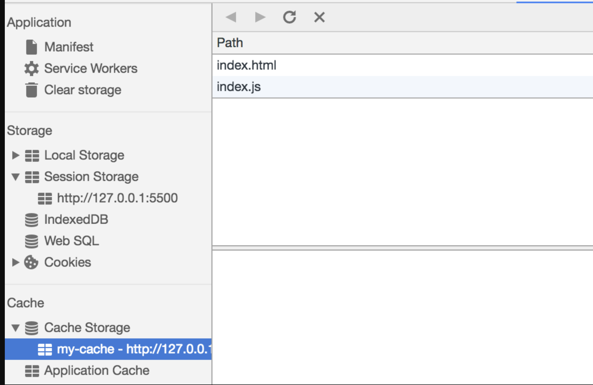
当我们重新刷新页面可以发现我们缓存的数据是从
ServiceWorker中读取的
# 9 DOM 节点操作
（1）创建新节点
createDocumentFragment() //创建一个DOM片段
createElement() //创建一个具体的元素
createTextNode() //创建一个文本节点
（2）添加、移除、替换、插入
appendChild(node)
removeChild(node)
replaceChild(new,old)
insertBefore(new,old)
（3）查找
getElementById();
getElementsByName();
getElementsByTagName();
getElementsByClassName();
querySelector();
querySelectorAll();
（4）属性操作
getAttribute(key);
setAttribute(key, value);
hasAttribute(key);
removeAttribute(key);
# 10 延迟加载的方式有哪些
js 的加载、解析和执行会阻塞页面的渲染过程，因此我们希望 js 脚本能够尽可能的延迟加载，提高页面的渲染速度。
几种方式是：
- 将 js 脚本放在文档的底部，来使 js 脚本尽可能的在最后来加载执行
- 给 js 脚本添加
defer属性，这个属性会让脚本的加载与文档的解析同步解析，然后在文档解析完成后再执行这个脚本文件，这样的话就能使页面的渲染不被阻塞。多个设置了defer属性的脚本按规范来说最后是顺序执行的，但是在一些浏览器中可能不是这样 - 给 js 脚本添加
async属性，这个属性会使脚本异步加载，不会阻塞页面的解析过程，但是当脚本加载完成后立即执行 js脚本，这个时候如果文档没有解析完成的话同样会阻塞。多个async属性的脚本的执行顺序是不可预测的，一般不会按照代码的顺序依次执行 - 动态创建
DOM标签的方式，我们可以对文档的加载事件进行监听，当文档加载完成后再动态的创建script标签来引入 js 脚本
# 四、框架通识
# 五、Vue
# 1 Vue 响应式原理
Vue 的响应式原理是核心是通过 ES5 的保护对象的
Object.defindeProperty中的访问器属性中的 get 和 set 方法，data 中声明的属性都被添加了访问器属性，当读取 data 中的数据时自动调用 get 方法，当修改 data 中的数据时，自动调用 set 方法，检测到数据的变化，会通知观察者 Wacher，观察者 Wacher自动触发重新render 当前组件（子组件不会重新渲染）,生成新的虚拟 DOM 树，Vue 框架会遍历并对比新虚拟 DOM 树和旧虚拟 DOM 树中每个节点的差别，并记录下来，最后，加载操作，将所有记录的不同点，局部修改到真实 DOM树上。

- 虚拟DOM (Virtaul DOM): 用 js 对象模拟的，保存当前视图内所有 DOM 节点对象基本描述属性和节点间关系的树结构。用 js 对象，描述每个节点，及其父子关系，形成虚拟 DOM 对象树结构。
- 因为只要在
data中声明的基本数据类型的数据，基本不存在数据不响应问题，所以重点介绍数组和对象在vue中的数据响应问题，vue可以检测对象属性的修改，但无法监听数组的所有变动及对象的新增和删除，只能使用数组变异方法及$set方法。
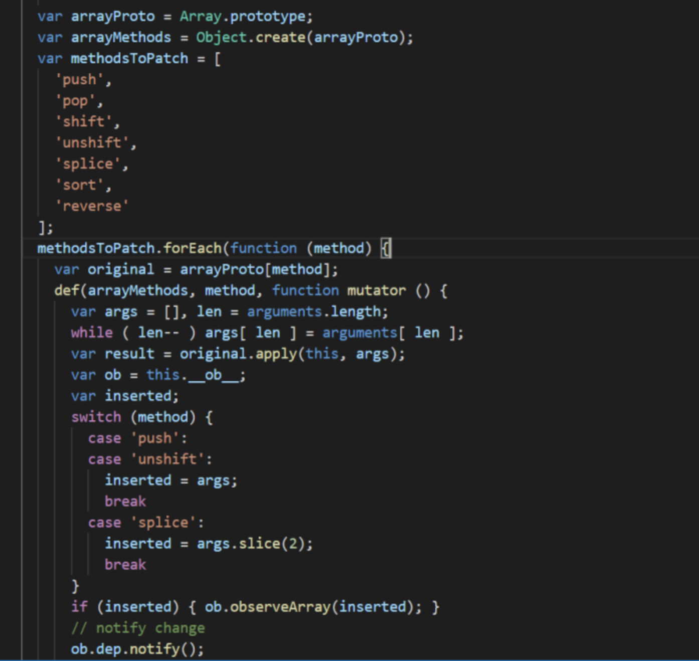
可以看到，
arrayMethods首先继承了Array，然后对数组中所有能改变数组自身的方法，如push、pop等这些方法进行重写。重写后的方法会先执行它们本身原有的逻辑，并对能增加数组长度的 3 个方法push、unshift、splice方法做了判断，获取到插入的值，然后把新添加的值变成一个响应式对象，并且再调用ob.dep.notify()手动触发依赖通知，这就很好地解释了用vm.items.splice(newLength) 方法可以检测到变化
总结：Vue 采用数据劫持结合发布—订阅模式的方法，通过
Object.defineProperty()来劫持各个属性的 setter，getter，在数据变动时发布消息给订阅者，触发相应的监听回调。
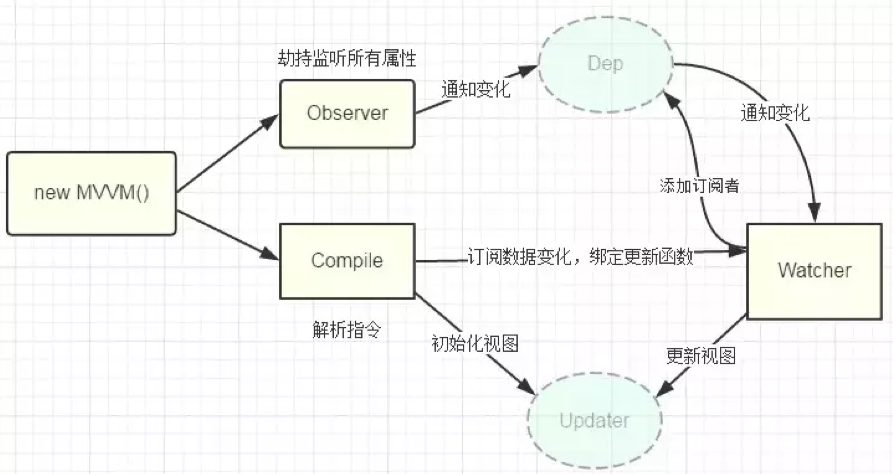
Observer遍历数据对象，给所有属性加上setter和getter，监听数据的变化compile解析模板指令，将模板中的变量替换成数据，然后初始化渲染页面视图，并将每个指令对应的节点绑定更新函数，添加监听数据的订阅者，一旦数据有变动，收到通知，更新视图
Watcher订阅者是Observer和Compile之间通信的桥梁，主要做的事情
- 在自身实例化时往属性订阅器 (
dep) 里面添加自己 - 待属性变动
dep.notice()通知时，调用自身的update()方法，并触发Compile中绑定的回调
Object.defineProperty()，那么它的用法是什么，以及优缺点是什么呢？
- 可以检测对象中数据发生的修改
- 对于复杂的对象，层级很深的话，是不友好的，需要经行深度监听，这样子就需要递归到底，这也是它的缺点。
- 对于一个对象中，如果你新增加属性，删除属性，**Object.defineProperty()**是不能观测到的，那么应该如何解决呢？可以通过
Vue.set()和Vue.delete()来实现。
// 模拟 Vue 中的 data 选项
let data = {
msg: 'hello'
}
// 模拟 Vue 的实例
let vm = {}
// 数据劫持:当访问或者设置 vm 中的成员的时候，做一些干预操作
Object.defineProperty(vm, 'msg', {
// 可枚举(可遍历)
enumerable: true,
// 可配置(可以使用 delete 删除，可以通过 defineProperty 重新定义)
configurable: true,
// 当获取值的时候执行
get () {
console.log('get: ', data.msg)
return data.msg
},
// 当设置值的时候执行
set (newValue) {
console.log('set: ', newValue)
if (newValue === data.msg) {
return
}
data.msg = newValue
// 数据更改，更新 DOM 的值
document.querySelector('#app').textContent = data.msg
}
})
// 测试
vm.msg = 'Hello World'
console.log(vm.msg)
Vue3.x响应式数据原理
Vue3.x改用Proxy替代Object.defineProperty。因为Proxy可以直接监听对象和数组的变化，并且有多达13种拦截方法。并且作为新标准将受到浏览器厂商重点持续的性能优化。
Proxy只会代理对象的第一层，那么Vue3又是怎样处理这个问题的呢？
判断当前
Reflect.get的返回值是否为Object，如果是则再通过reactive方法做代理， 这样就实现了深度观测。
监测数组的时候可能触发多次get/set，那么如何防止触发多次呢？
我们可以判断
key是否为当前被代理对象target自身属性，也可以判断旧值与新值是否相等，只有满足以上两个条件之一时，才有可能执行trigger
// 模拟 Vue 中的 data 选项
let data = {
msg: 'hello',
count: 0
}
// 模拟 Vue 实例
let vm = new Proxy(data, {
// 当访问 vm 的成员会执行
get (target, key) {
console.log('get, key: ', key, target[key])
return target[key]
},
// 当设置 vm 的成员会执行
set (target, key, newValue) {
console.log('set, key: ', key, newValue)
if (target[key] === newValue) {
return
}
target[key] = newValue
document.querySelector('#app').textContent = target[key]
}
})
// 测试
vm.msg = 'Hello World'
console.log(vm.msg)
Proxy 相比于 defineProperty 的优势
- 数组变化也能监听到
- 不需要深度遍历监听
Proxy是ES6中新增的功能，可以用来自定义对象中的操作
let p = new Proxy(target, handler);
// `target` 代表需要添加代理的对象
// `handler` 用来自定义对象中的操作
// 可以很方便的使用 Proxy 来实现一个数据绑定和监听
let onWatch = (obj, setBind, getLogger) => {
let handler = {
get(target, property, receiver) {
getLogger(target, property)
return Reflect.get(target, property, receiver);
},
set(target, property, value, receiver) {
setBind(value);
return Reflect.set(target, property, value);
}
};
return new Proxy(obj, handler);
};
let obj = { a: 1 }
let value
let p = onWatch(obj, (v) => {
value = v
}, (target, property) => {
console.log(`Get '${property}' = ${target[property]}`);
})
p.a = 2 // bind `value` to `2`
p.a // -> Get 'a' = 2
总结
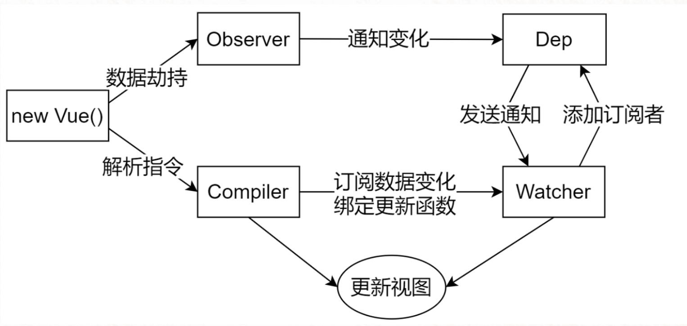
- Vue
- 记录传入的选项，设置
$data/$el - 把
data的成员注入到Vue实例 - 负责调用
Observer实现数据响应式处理(数据劫持) - 负责调用
Compiler编译指令/插值表达式等
- 记录传入的选项，设置
Observer- 数据劫持
- 负责把
data中的成员转换成getter/setter - 负责把多层属性转换成
getter/setter - 如果给属性赋值为新对象，把新对象的成员设置为
getter/setter
- 负责把
- 添加
Dep和Watcher的依赖关系 - 数据变化发送通知
- 数据劫持
Compiler- 负责编译模板，解析指令/插值表达式
- 负责页面的首次渲染过程
- 当数据变化后重新渲染
Dep- 收集依赖，添加订阅者(
watcher) - 通知所有订阅者
- 收集依赖，添加订阅者(
Watcher- 自身实例化的时候往
dep对象中添加自己 - 当数据变化
dep通知所有的Watcher实例更新视图
- 自身实例化的时候往
# 2 发布订阅模式和观察者模式
1. 发布/订阅模式
- 发布/订阅模式
- 订阅者
- 发布者
- 信号中心
我们假定，存在一个"信号中心"，某个任务执行完成，就向信号中心"发布"(publish)一个信 号，其他任务可以向信号中心"订阅"(subscribe)这个信号，从而知道什么时候自己可以开始执 行。这就叫做"发布/订阅模式"(publish-subscribe pattern)
Vue 的自定义事件
let vm = new Vue()
vm.$on('dataChange', () => { console.log('dataChange')})
vm.$on('dataChange', () => {
console.log('dataChange1')
})
vm.$emit('dataChange')
兄弟组件通信过程
// eventBus.js
// 事件中心
let eventHub = new Vue()
// ComponentA.vue
// 发布者
addTodo: function () {
// 发布消息(事件)
eventHub.$emit('add-todo', { text: this.newTodoText })
this.newTodoText = ''
}
// ComponentB.vue
// 订阅者
created: function () {
// 订阅消息(事件)
eventHub.$on('add-todo', this.addTodo)
}
模拟 Vue 自定义事件的实现
class EventEmitter {
constructor(){
// { eventType: [ handler1, handler2 ] }
this.subs = {}
}
// 订阅通知
$on(eventType, fn) {
this.subs[eventType] = this.subs[eventType] || []
this.subs[eventType].push(fn)
}
// 发布通知
$emit(eventType) {
if(this.subs[eventType]) {
this.subs[eventType].forEach(v=>v())
}
}
}
// 测试
var bus = new EventEmitter()
// 注册事件
bus.$on('click', function () {
console.log('click')
})
bus.$on('click', function () {
console.log('click1')
})
// 触发事件
bus.$emit('click')
2. 观察者模式
- 观察者(订阅者) --
Watcherupdate():当事件发生时，具体要做的事情
- 目标(发布者) --
Depsubs数组:存储所有的观察者addSub():添加观察者notify():当事件发生，调用所有观察者的update()方法
- 没有事件中心
// 目标(发布者)
// Dependency
class Dep {
constructor () {
// 存储所有的观察者
this.subs = []
}
// 添加观察者
addSub (sub) {
if (sub && sub.update) {
this.subs.push(sub)
}
}
// 通知所有观察者
notify () {
this.subs.forEach(sub => sub.update())
}
}
// 观察者(订阅者)
class Watcher {
update () {
console.log('update')
}
}
// 测试
let dep = new Dep()
let watcher = new Watcher()
dep.addSub(watcher)
dep.notify()
3. 总结
- 观察者模式是由具体目标调度，比如当事件触发，
Dep就会去调用观察者的方法，所以观察者模 式的订阅者与发布者之间是存在依赖的 - 发布/订阅模式由统一调度中心调用，因此发布者和订阅者不需要知道对方的存在

# 3 为什么使用 Virtual DOM
- 手动操作
DOM比较麻烦，还需要考虑浏览器兼容性问题，虽然有jQuery等库简化DOM操作，但是随着项目的复杂 DOM 操作复杂提升 - 为了简化
DOM的复杂操作于是出现了各种MVVM框架，MVVM框架解决了视图和状态的同步问题 - 为了简化视图的操作我们可以使用模板引擎，但是模板引擎没有解决跟踪状态变化的问题，于是
Virtual DOM出现了 Virtual DOM的好处是当状态改变时不需要立即更新 DOM，只需要创建一个虚拟树来描述DOM，Virtual DOM内部将弄清楚如何有效(diff)的更新DOM- 虚拟
DOM可以维护程序的状态，跟踪上一次的状态 - 通过比较前后两次状态的差异更新真实
DOM
虚拟 DOM 的作用
- 维护视图和状态的关系
- 复杂视图情况下提升渲染性能
- 除了渲染
DOM以外，还可以实现SSR(Nuxt.js/Next.js)、原生应用(Weex/React Native)、小程序(mpvue/uni-app)等
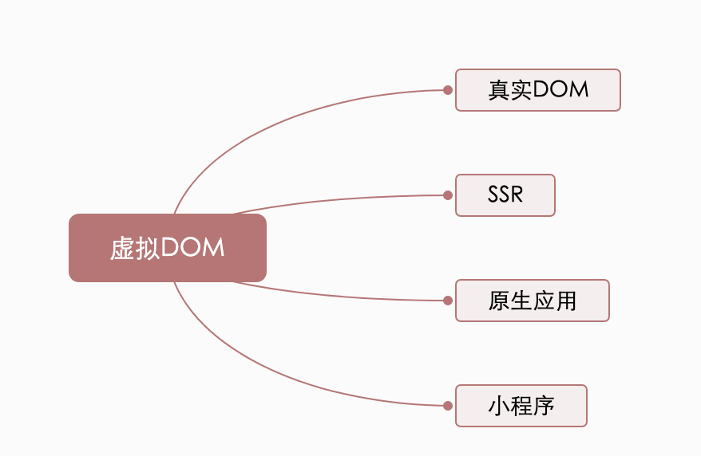
# 4 VDOM：三个 part
- 虚拟节点类，将真实
DOM节点用js对象的形式进行展示，并提供render方法，将虚拟节点渲染成真实DOM - 节点
diff比较：对虚拟节点进行js层面的计算，并将不同的操作都记录到patch对象 re-render：解析patch对象，进行re-render
补充1：VDOM 的必要性？
- 创建真实DOM的代价高：真实的
DOM节点node实现的属性很多，而vnode仅仅实现一些必要的属性，相比起来，创建一个vnode的成本比较低。 - 触发多次浏览器重绘及回流：使用
vnode，相当于加了一个缓冲，让一次数据变动所带来的所有node变化，先在vnode中进行修改，然后diff之后对所有产生差异的节点集中一次对DOM tree进行修改，以减少浏览器的重绘及回流。
补充2：vue 为什么采用 vdom？
引入
Virtual DOM在性能方面的考量仅仅是一方面。
- 性能受场景的影响是非常大的，不同的场景可能造成不同实现方案之间成倍的性能差距，所以依赖细粒度绑定及
Virtual DOM哪个的性能更好还真不是一个容易下定论的问题。 Vue之所以引入了Virtual DOM，更重要的原因是为了解耦HTML依赖，这带来两个非常重要的好处是：
- 不再依赖
HTML解析器进行模版解析，可以进行更多的AOT工作提高运行时效率：通过模版AOT编译，Vue的运行时体积可以进一步压缩，运行时效率可以进一步提升；- 可以渲染到
DOM以外的平台，实现SSR、同构渲染这些高级特性，Weex等框架应用的就是这一特性。
综上，
Virtual DOM在性能上的收益并不是最主要的，更重要的是它使得Vue具备了现代框架应有的高级特性。
# 5 vue 和 react技术选型
相同点：
- 数据驱动页面，提供响应式的试图组件
- 都有virtual DOM,组件化的开发，通过props参数进行父子之间组件传递数据，都实现了webComponents规范
- 数据流动单向，都支持服务器的渲染SSR
- 都有支持native的方法，react有React native， vue有wexx
不同点：
- 数据绑定：Vue实现了双向的数据绑定，react数据流动是单向的
- 数据渲染：大规模的数据渲染，react更快
- 使用场景：React配合Redux架构适合大规模多人协作复杂项目，Vue适合小快的项目
- 开发风格：react推荐做法jsx + inline style把html和css都写在js了
vue是采用webpack +vue-loader单文件组件格式，html, js, css同一个文件
# 6 nextTick
nextTick可以让我们在下次DOM更新循环结束之后执行延迟回调，用于获得更新后的DOM
nextTick主要使用了宏任务和微任务。根据执行环境分别尝试采用
PromiseMutationObserversetImmediate- 如果以上都不行则采用
setTimeout
定义了一个异步方法，多次调用
nextTick会将方法存入队列中，通过这个异步方法清空当前队列
# 7 生命周期
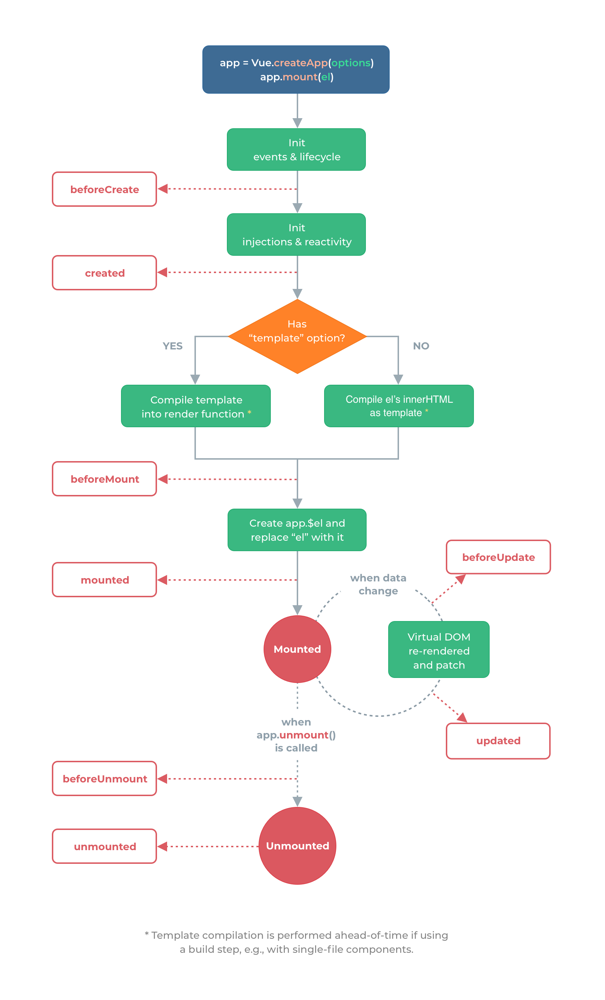
init
initLifecycle/Event，往vm上挂载各种属性callHook: beforeCreated: 实例刚创建initInjection/initState: 初始化注入和data响应性created: 创建完成，属性已经绑定， 但还未生成真实dom`- 进行元素的挂载：
$el / vm.$mount() - 是否有
template: 解析成render function*.vue文件:vue-loader会将<template>编译成render function
beforeMount: 模板编译/挂载之前- 执行
render function，生成真实的dom，并替换到dom tree中 mounted: 组件已挂载
update
- 执行
diff算法，比对改变是否需要触发UI更新 flushScheduleQueuewatcher.before: 触发beforeUpdate钩子 -watcher.run(): 执行watcher中的notify，通知所有依赖项更新UI- 触发
updated钩子: 组件已更新 actived / deactivated(keep-alive): 不销毁，缓存，组件激活与失活destroybeforeDestroy: 销毁开始- 销毁自身且递归销毁子组件以及事件监听
remove(): 删除节点watcher.teardown(): 清空依赖vm.$off(): 解绑监听
destroyed: 完成后触发钩子
| Vue2 | Vue3 |
|---|---|
beforeCreate | ❌setup(替代) |
created | ❌setup(替代) |
beforeMount | onBeforeMount |
mounted | onMounted |
beforeUpdate | onBeforeUpdate |
updated | nUpdated |
beforeDestroy | onBeforeUnmount |
destroyed | onUnmounted |
errorCaptured | onErrorCaptured |
| - | 🎉onRenderTracked |
| - | 🎉onRenderTriggered |
上面是vue的声明周期的简单梳理，接下来我们直接以代码的形式来完成vue的初始化
new Vue({})
// 初始化Vue实例
function _init() {
// 挂载属性
initLifeCycle(vm)
// 初始化事件系统，钩子函数等
initEvent(vm)
// 编译slot、vnode
initRender(vm)
// 触发钩子
callHook(vm, 'beforeCreate')
// 添加inject功能
initInjection(vm)
// 完成数据响应性 props/data/watch/computed/methods
initState(vm)
// 添加 provide 功能
initProvide(vm)
// 触发钩子
callHook(vm, 'created')
// 挂载节点
if (vm.$options.el) {
vm.$mount(vm.$options.el)
}
}
// 挂载节点实现
function mountComponent(vm) {
// 获取 render function
if (!this.options.render) {
// template to render
// Vue.compile = compileToFunctions
let { render } = compileToFunctions()
this.options.render = render
}
// 触发钩子
callHook('beforeMounte')
// 初始化观察者
// render 渲染 vdom，
vdom = vm.render()
// update: 根据 diff 出的 patchs 挂载成真实的 dom
vm._update(vdom)
// 触发钩子
callHook(vm, 'mounted')
}
// 更新节点实现
funtion queueWatcher(watcher) {
nextTick(flushScheduleQueue)
}
// 清空队列
function flushScheduleQueue() {
// 遍历队列中所有修改
for(){
// beforeUpdate
watcher.before()
// 依赖局部更新节点
watcher.update()
callHook('updated')
}
}
// 销毁实例实现
Vue.prototype.$destory = function() {
// 触发钩子
callHook(vm, 'beforeDestory')
// 自身及子节点
remove()
// 删除依赖
watcher.teardown()
// 删除监听
vm.$off()
// 触发钩子
callHook(vm, 'destoryed')
}
# 8 vue-router
mode
hashhistory
跳转
this.$router.push()<router-link to=""></router-link>
占位
<router-view></router-view>
vue-router源码实现
- 作为一个插件存在:实现
VueRouter类和install方法 - 实现两个全局组件:
router-view用于显示匹配组件内容，router-link用于跳转 - 监控
url变化:监听hashchange或popstate事件 - 响应最新
url:创建一个响应式的属性current，当它改变时获取对应组件并显示
// 我们的插件：
// 1.实现一个Router类并挂载期实例
// 2.实现两个全局组件router-link和router-view
let Vue;
class VueRouter {
// 核心任务：
// 1.监听url变化
constructor(options) {
this.$options = options;
// 缓存path和route映射关系
// 这样找组件更快
this.routeMap = {}
this.$options.routes.forEach(route => {
this.routeMap[route.path] = route
})
// 数据响应式
// 定义一个响应式的current，则如果他变了，那么使用它的组件会rerender
Vue.util.defineReactive(this, 'current', '')
// 请确保onHashChange中this指向当前实例
window.addEventListener('hashchange', this.onHashChange.bind(this))
window.addEventListener('load', this.onHashChange.bind(this))
}
onHashChange() {
// console.log(window.location.hash);
this.current = window.location.hash.slice(1) || '/'
}
}
// 插件需要实现install方法
// 接收一个参数，Vue构造函数，主要用于数据响应式
VueRouter.install = function (_Vue) {
// 保存Vue构造函数在VueRouter中使用
Vue = _Vue
// 任务1：使用混入来做router挂载这件事情
Vue.mixin({
beforeCreate() {
// 只有根实例才有router选项
if (this.$options.router) {
Vue.prototype.$router = this.$options.router
}
}
})
// 任务2：实现两个全局组件
// router-link: 生成一个a标签，在url后面添加#
// <a href="#/about">aaaa</a>
// <router-link to="/about">aaa</router-link>
Vue.component('router-link', {
props: {
to: {
type: String,
required: true
},
},
render(h) {
// h(tag, props, children)
return h('a',
{ attrs: { href: '#' + this.to } },
this.$slots.default
)
// 使用jsx
// return <a href={'#'+this.to}>{this.$slots.default}</a>
}
})
Vue.component('router-view', {
render(h) {
// 根据current获取组件并render
// current怎么获取?
// console.log('render',this.$router.current);
// 获取要渲染的组件
let component = null
const { routeMap, current } = this.$router
if (routeMap[current]) {
component = routeMap[current].component
}
return h(component)
}
})
}
export default VueRouter
# 9 vuex
Vuex 集中式存储管理应用的所有组件的状态，并以相应的规则保证状态以可预测的方式发生变化
核心概念
state: 状态中心mutations: 更改状态actions: 异步更改状态getters: 获取状态modules: 将state分成多个modules，便于管理
- 状态 - state
state保存应用状态
export default new Vuex.Store({ state: { counter:0 },})
- 状态变更 - mutations
mutations用于修改状态，store.js
export default new Vuex.Store({
mutations:
{
add(state) {
state.counter++
}
}
})
- 派生状态 - getters
从state派生出新状态，类似计算属性
export default new Vuex.Store({
getters:
{
doubleCounter(state) { // 计算剩余数量 return state.counter * 2;
}
}
})
- 动作 - actions
加业务逻辑，类似于controller
export default new Vuex.Store({
actions:
{
add({
commit
}) {
setTimeout(() = >{}
}
})
测试代码:
<p @click="$store.commit('add')">counter: {{$store.state.counter}}</p>
<p @click="$store.dispatch('add')">async counter: {{$store.state.counter}}</p>
<p>double:{{$store.getters.doubleCounter}}</p>
vuex原理解析
- 实现一个插件:声明
Store类，挂载$store Store具体实现:- 创建响应式的
state，保存mutations、actions和getters - 实现
commit根据用户传入type执行对应mutation - 实现
dispatch根据用户传入type执行对应action，同时传递上下文 - 实现
getters，按照getters定义对state做派生
- 创建响应式的
// 目标1：实现Store类，管理state（响应式的），commit方法和dispatch方法
// 目标2：封装一个插件，使用更容易使用
let Vue;
class Store {
constructor(options) {
// 定义响应式的state
// this.$store.state.xx
// 借鸡生蛋
this._vm = new Vue({
data: {
$$state: options.state
}
})
this._mutations = options.mutations
this._actions = options.actions
// 绑定this指向
this.commit = this.commit.bind(this)
this.dispatch = this.dispatch.bind(this)
}
// 只读
get state() {
return this._vm._data.$$state
}
set state(val) {
console.error('不能直接赋值呀，请换别的方式！！天王盖地虎！！');
}
// 实现commit方法，可以修改state
commit(type, payload) {
// 拿出mutations中的处理函数执行它
const entry = this._mutations[type]
if (!entry) {
console.error('未知mutaion类型');
return
}
entry(this.state, payload)
}
dispatch(type, payload) {
const entry = this._actions[type]
if (!entry) {
console.error('未知action类型');
return
}
// 上下文可以传递当前store实例进去即可
entry(this, payload)
}
}
function install(_Vue){
Vue = _Vue
// 混入store实例
Vue.mixin({
beforeCreate() {
if (this.$options.store) {
Vue.prototype.$store = this.$options.store
}
}
})
}
// { Store, install }相当于Vuex
// 它必须实现install方法
export default { Store, install }
# 10 vue3带来的新特性/亮点
1. 压缩包体积更小
当前最小化并被压缩的 Vue 运行时大小约为 20kB（2.6.10 版为 22.8kB）。Vue 3.0捆绑包的大小大约会减少一半，即只有10kB！
2. Object.defineProperty -> Proxy
Object.defineProperty是一个相对比较昂贵的操作，因为它直接操作对象的属性，颗粒度比较小。将它替换为es6的Proxy，在目标对象之上架了一层拦截，代理的是对象而不是对象的属性。这样可以将原本对对象属性的操作变为对整个对象的操作，颗粒度变大。- javascript引擎在解析的时候希望对象的结构越稳定越好，如果对象一直在变，可优化性降低，proxy不需要对原始对象做太多操作。
3. Virtual DOM 重构
vdom的本质是一个抽象层，用javascript描述界面渲染成什么样子。react用jsx，没办法检测出可以优化的动态代码，所以做时间分片，vue中足够快的话可以不用时间分片
传统vdom的性能瓶颈：
- 虽然 Vue 能够保证触发更新的组件最小化，但在单个组件内部依然需要遍历该组件的整个 vdom 树。
- 传统 vdom 的性能跟模版大小正相关，跟动态节点的数量无关。在一些组件整个模版内只有少量动态节点的情况下，这些遍历都是性能的浪费。
- JSX 和手写的 render function 是完全动态的，过度的灵活性导致运行时可以用于优化的信息不足
那为什么不直接抛弃vdom呢？
- 高级场景下手写
render function获得更强的表达力 - 生成的代码更简洁
- 兼容2.x
- 高级场景下手写
vue的特点是底层为Virtual DOM，上层包含有大量静态信息的模版。为了兼容手写 render function，最大化利用模版静态信息，
vue3.0采用了动静结合的解决方案，将vdom的操作颗粒度变小，每次触发更新不再以组件为单位进行遍历，主要更改如下
- 将模版基于动态节点指令切割为嵌套的区块
- 每个区块内部的节点结构是固定的
- 每个区块只需要以一个
Array追踪自身包含的动态节点
vue3.0将 vdom 更新性能由与模版整体大小相关提升为与动态内容的数量相关
Vue 3.0 动静结合的 Dom diff
- Vue3.0 提出动静结合的 DOM diff 思想，动静结合的 DOM diff其实是在预编译阶段进行了优化。之所以能够做到预编译优化，是因为 Vue core 可以静态分析 template，在解析模版时，整个 parse 的过程是利用正则表达式顺序解析模板，当解析到开始标签、闭合标签和文本的时候都会分别执行对应的回调函数，来达到构造 AST 树的目的。
- 借助预编译过程，Vue 可以做到的预编译优化就很强大了。比如在预编译时标记出模版中可能变化的组件节点，再次进行渲染前 diff 时就可以跳过“永远不会变化的节点”，而只需要对比“可能会变化的动态节点”。这也就是动静结合的 DOM diff 将 diff 成本与模版大小正相关优化到与动态节点正相关的理论依据。
4. Performance
vue3在性能方面比vue2快了2倍。
- 重写了虚拟DOM的实现
- 运行时编译
- update性能提高
- SSR速度提高
5. Tree-shaking support
vue3中的核心api都支持了tree-shaking，这些api都是通过包引入的方式而不是直接在实例化时就注入，只会对使用到的功能或特性进行打包（按需打包），这意味着更多的功能和更小的体积。
6. Composition API
vue2中，我们一般会采用mixin来复用逻辑代码，用倒是挺好用的，不过也存在一些问题：例如代码来源不清晰、方法属性等冲突。基于此在vue3中引入了Composition API（组合API），使用纯函数分隔复用代码。和React中的
hooks的概念很相似
- 更好的逻辑复用和代码组织
- 更好的类型推导
<template>
<div>X: {{ x }}</div>
<div>Y: {{ y }}</div>
</template>
<script>
import { defineComponent, onMounted, onUnmounted, ref } from "vue";
const useMouseMove = () => {
const x = ref(0);
const y = ref(0);
function move(e) {
x.value = e.clientX;
y.value = e.clientY;
}
onMounted(() => {
window.addEventListener("mousemove", move);
});
onUnmounted(() => {
window.removeEventListener("mousemove", move);
});
return { x, y };
};
export default defineComponent({
setup() {
const { x, y } = useMouseMove();
return { x, y };
}
});
</script>
7. 新增的三个组件Fragment、Teleport、Suspense
Fragment
在书写vue2时，由于组件必须只有一个根节点，很多时候会添加一些没有意义的节点用于包裹。Fragment组件就是用于解决这个问题的（这和React中的Fragment组件是一样的）。
这意味着现在可以这样写组件了。
/* App.vue */
<template>
<header>...</header>
<main v-bind="$attrs">...</main>
<footer>...</footer>
</template>
<script>
export default {};
</script>
或者这样
// app.js
import { defineComponent, h, Fragment } from 'vue';
export default defineComponent({
render() {
return h(Fragment, {}, [
h('header', {}, ['...']),
h('main', {}, ['...']),
h('footer', {}, ['...']),
]);
}
});
Teleport
Teleport其实就是React中的Portal。Portal 提供了一种将子节点渲染到存在于父组件以外的 DOM 节点的优秀的方案。
一个 portal 的典型用例是当父组件有 overflow: hidden 或 z-index 样式时，但你需要子组件能够在视觉上“跳出”其容器。例如，对话框、悬浮卡以及提示框。
/* App.vue */
<template>
<div>123</div>
<Teleport to="#container">
Teleport
</Teleport>
</template>
<script>
import { defineComponent } from "vue";
export default defineComponent({
setup() {}
});
</script>
/* index.html */
<div id="app"></div>
<div id="container"></div>
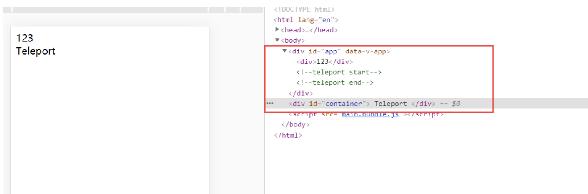
Suspense
同样的，这和React中的Supense是一样的。
Suspense让你的组件在渲染之前进行“等待”，并在等待时显示 fallback 的内容
// App.vue
<template>
<Suspense>
<template #default>
<AsyncComponent />
</template>
<template #fallback>
Loading...
</template>
</Suspense>
</template>
<script lang="ts">
import { defineComponent } from "vue";
import AsyncComponent from './AsyncComponent.vue';
export default defineComponent({
name: "App",
components: {
AsyncComponent
}
});
</script>
// AsyncComponent.vue
<template>
<div>Async Component</div>
</template>
<script lang="ts">
import { defineComponent } from "vue";
const sleep = () => {
return new Promise(resolve => setTimeout(resolve, 1000));
};
export default defineComponent({
async setup() {
await sleep();
}
});
</script>
8. Better TypeScript support
在vue2中使用过TypesScript的童鞋应该有过体会，写起来实在是有点难受。vue3则是使用ts进行了重写，开发者使用vue3时拥有更好的类型支持和更好的编写体验。
# 11 Compositon api
Composition API也叫组合式API，是Vue3.x的新特性。
通过创建 Vue 组件，我们可以将接口的可重复部分及其功能提取到可重用的代码段中。仅此一项就可以使我们的应用程序在可维护性和灵活性方面走得更远。然而，我们的经验已经证明，光靠这一点可能是不够的，尤其是当你的应用程序变得非常大的时候——想想几百个组件。在处理如此大的应用程序时，共享和重用代码变得尤为重要
通俗的讲：
没有Composition API之前vue相关业务的代码需要配置到option的特定的区域，中小型项目是没有问题的，但是在大型项目中会导致后期的维护性比较复杂，同时代码可复用性不高。Vue3.x中的composition-api就是为了解决这个问题而生的
compositon api提供了以下几个函数：
setuprefreactivewatchEffectwatchcomputedtoRefs- 生命周期的
hooks
# 六、React
# 1 React生命周期
16.3版本
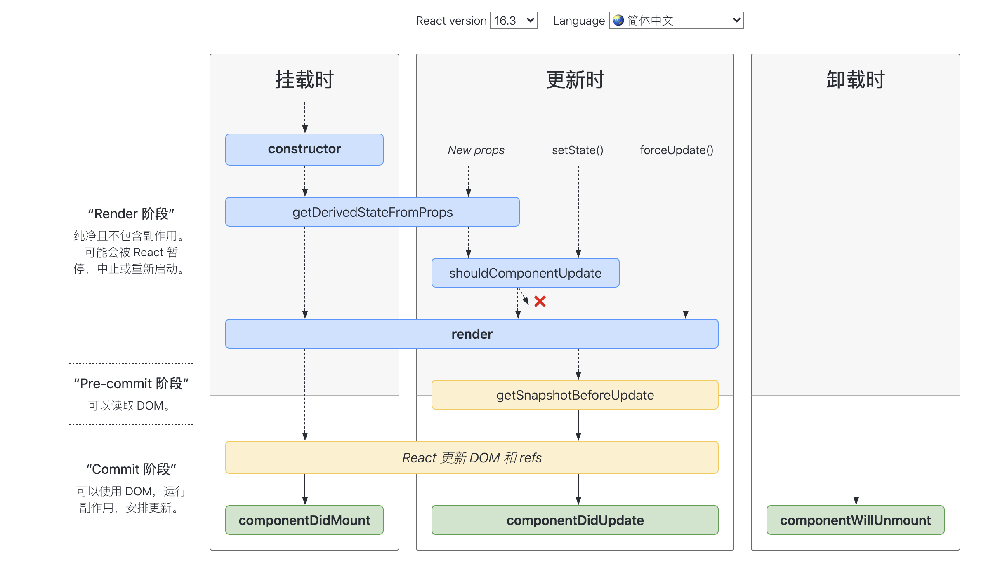
>=16.4版本

在线查看：https://projects.wojtekmaj.pl/react-lifecycle-methods-diagram (opens new window)
# 2 React Fiber架构
最主要的思想就是将任务拆分。
- DOM需要渲染时暂停，空闲时恢复。
window.requestIdleCallback- React内部实现的机制
React 追求的是 “快速响应”，那么，“快速响应“的制约因素都有什么呢
CPU的瓶颈：当项目变得庞大、组件数量繁多、遇到大计算量的操作或者设备性能不足使得页面掉帧，导致卡顿。IO的瓶颈：发送网络请求后，由于需要等待数据返回才能进一步操作导致不能快速响应。
fiber架构主要就是用来解决CPU和网络的问题，这两个问题一直也是最影响前端开发体验的地方，一个会造成卡顿，一个会造成白屏。为此 react 为前端引入了两个新概念：Time Slicing时间分片和Suspense。
# 1. React 都做过哪些优化
- React渲染页面的两个阶段
- 调度阶段（reconciliation）：在这个阶段 React 会更新数据生成新的
Virtual DOM，然后通过Diff算法，快速找出需要更新的元素，放到更新队列中去，得到新的更新队列。 - 渲染阶段（commit）：这个阶段 React 会遍历更新队列，将其所有的变更一次性更新到DOM上
- 调度阶段（reconciliation）：在这个阶段 React 会更新数据生成新的
- React 15 架构
- React15架构可以分为两层
- Reconciler（协调器）—— 负责找出变化的组件；
- Renderer（渲染器）—— 负责将变化的组件渲染到页面上；
- React15架构可以分为两层
- 在React15及以前，Reconciler采用递归的方式创建虚拟DOM，递归过程是不能中断的。如果组件树的层级很深，递归会占用线程很多时间，递归更新时间超过了16ms，用户交互就会卡顿。
- 为了解决这个问题，React16将递归的无法中断的更新重构为异步的可中断更新，由于曾经用于递归的虚拟DOM数据结构已经无法满足需要。于是，全新的Fiber架构应运而生。
React 16 架构
- 为了解决同步更新长时间占用线程导致页面卡顿的问题，也为了探索运行时优化的更多可能，React开始重构并一直持续至今。重构的目标是实现Concurrent Mode（并发模式）。
- 从v15到v16，React团队花了两年时间将源码架构中的Stack Reconciler重构为Fiber Reconciler
React16架构可以分为三层：- Scheduler（调度器）—— 调度任务的优先级，高优任务优先进入Reconciler；
- Reconciler（协调器）—— 负责找出变化的组件：更新工作从递归变成了可以中断的循环过程。Reconciler内部采用了Fiber的架构；
- Renderer（渲染器）—— 负责将变化的组件渲染到页面上。
React 17 优化
- 使用Lane来管理任务的优先级。Lane用二进制位表示任务的优先级，方便优先级的计算（位运算），不同优先级占用不同位置的“赛道”，而且存在批的概念，优先级越低，“赛道”越多。高优先级打断低优先级，新建的任务需要赋予什么优先级等问题都是Lane所要解决的问题。
- Concurrent Mode的目的是实现一套可中断/恢复的更新机制。其由两部分组成：
- 一套协程架构：Fiber Reconciler
- 基于协程架构的启发式更新算法：控制协程架构工作方式的算法
# 2. 浏览器一帧都会干些什么以及requestIdleCallback的启示
我们都知道，页面的内容都是一帧一帧绘制出来的，浏览器刷新率代表浏览器一秒绘制多少帧。原则上说 1s 内绘制的帧数也多，画面表现就也细腻。目前浏览器大多是 60Hz（60帧/s），每一帧耗时也就是在 16.6ms 左右。那么在这一帧的（16.6ms） 过程中浏览器又干了些什么呢

通过上面这张图可以清楚的知道，浏览器一帧会经过下面这几个过程：
- 接受输入事件
- 执行事件回调
- 开始一帧
- 执行 RAF (RequestAnimationFrame)
- 页面布局，样式计算
- 绘制渲染
- 执行 RIC (RequestIdelCallback)
第七步的 RIC 事件不是每一帧结束都会执行，只有在一帧的 16.6ms 中做完了前面 6 件事儿且还有剩余时间，才会执行。如果一帧执行结束后还有时间执行 RIC 事件，那么下一帧需要在事件执行结束才能继续渲染，所以 RIC 执行不要超过 30ms，如果长时间不将控制权交还给浏览器，会影响下一帧的渲染，导致页面出现卡顿和事件响应不及时。
requestIdleCallback 的启示：我们以浏览器是否有剩余时间作为任务中断的标准，那么我们需要一种机制，当浏览器有剩余时间时通知我们。
requestIdleCallback((deadline) => {
// deadline 有两个参数
// timeRemaining(): 当前帧还剩下多少时间
// didTimeout: 是否超时
// 另外 requestIdleCallback 后如果跟上第二个参数 {timeout: ...} 则会强制浏览器在当前帧执行完后执行。
if (deadline.timeRemaining() > 0) {
// TODO
} else {
requestIdleCallback(otherTasks);
}
});
// 用法示例
var tasksNum = 10000
requestIdleCallback(unImportWork)
function unImportWork(deadline) {
while (deadline.timeRemaining() && tasksNum > 0) {
console.log(`执行了${10000 - tasksNum + 1}个任务`)
tasksNum--
}
if (tasksNum > 0) { // 在未来的帧中继续执行
requestIdleCallback(unImportWork)
}
}
其实部分浏览器已经实现了这个API，这就是requestIdleCallback。但是由于以下因素，Facebook 抛弃了
requestIdleCallback的原生 API：
- 浏览器兼容性；
- 触发频率不稳定，受很多因素影响。比如当我们的浏览器切换tab后，之前tab注册的
requestIdleCallback触发的频率会变得很低。
基于以上原因，在React中实现了功能更完备的
requestIdleCallbackpolyfill，这就是Scheduler。除了在空闲时触发回调的功能外，Scheduler还提供了多种调度优先级供任务设置
# 3. React Fiber是什么
React Fiber是对核心算法的一次重新实现。React Fiber把更新过程碎片化，把一个耗时长的任务分成很多小片，每一个小片的运行时间很短，虽然总时间依然很长，但是在每个小片执行完之后，都给其他任务一个执行的机会，这样唯一的线程就不会被独占，其他任务依然有运行的机会
- 在
React Fiber中，一次更新过程会分成多个分片完成，所以完全有可能一个更新任务还没有完成，就被另一个更高优先级的更新过程打断，这时候，优先级高的更新任务会优先处理完，而低优先级更新任务所做的工作则会完全作废，然后等待机会重头再来 - 因为一个更新过程可能被打断，所以
React Fiber一个更新过程被分为两个阶段(Phase)：第一个阶段Reconciliation Phase和第二阶段Commit Phase - 在第一阶段
Reconciliation Phase，React Fiber会找出需要更新哪些DOM，这个阶段是可以被打断的；但是到了第二阶段Commit Phase，那就一鼓作气把DOM更新完，绝不会被打断 - 这两个阶段大部分工作都是
React Fiber做，和我们相关的也就是生命周期函数
React Fiber改变了之前react的组件渲染机制，新的架构使原来同步渲染的组件现在可以异步化，可中途中断渲染，执行更高优先级的任务。释放浏览器主线程
关键特性
- 增量渲染（把渲染任务拆分成块，匀到多帧）
- 更新时能够暂停，终止，复用渲染任务
- 给不同类型的更新赋予优先级
- 并发方面新的基础能力
增量渲染用来解决掉帧的问题，渲染任务拆分之后，每次只做一小段，做完一段就把时间控制权交还给主线程，而不像之前长时间占用
# 4. 组件的渲染顺序
假如有A,B,C,D组件，层级结构为：
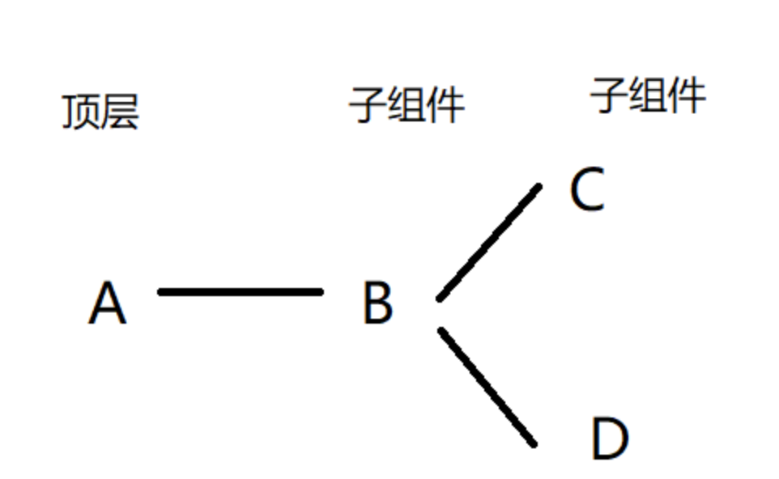
我们知道组件的生命周期为：
挂载阶段：
constructor()componentWillMount()render()componentDidMount()
更新阶段为：
componentWillReceiveProps()shouldComponentUpdate()componentWillUpdate()render()componentDidUpdate
那么在挂载阶段，
A,B,C,D的生命周期渲染顺序是如何的呢？
那么在挂载阶段，A,B,C,D的生命周期渲染顺序是如何的呢？
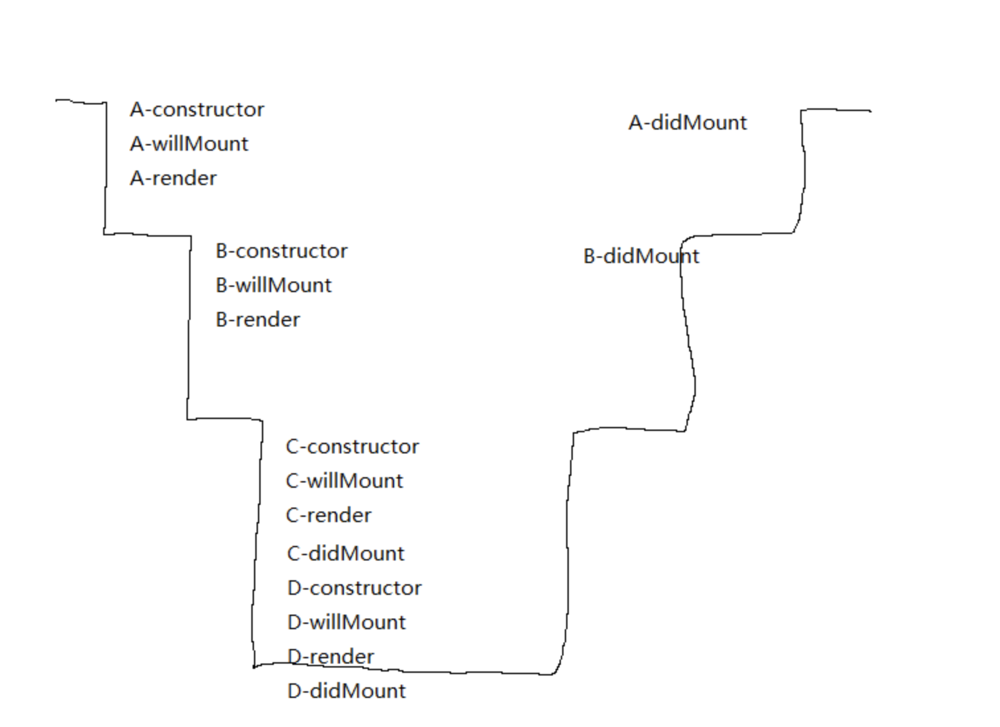
以
render()函数为分界线。从顶层组件开始，一直往下，直至最底层子组件。然后再往上
组件update阶段同理
前面是react16以前的组建渲染方式。这就存在一个问题
如果这是一个很大，层级很深的组件，
react渲染它需要几十甚至几百毫秒，在这期间，react会一直占用浏览器主线程，任何其他的操作（包括用户的点击，鼠标移动等操作）都无法执行
Fiber架构就是为了解决这个问题
看一下fiber架构 组建的渲染顺序

加入
fiber的react将组件更新分为两个时期
这两个时期以render为分界
render前的生命周期为phase1,render后的生命周期为phase2
phase1的生命周期是可以被打断的，每隔一段时间它会跳出当前渲染进程，去确定是否有其他更重要的任务。此过程，React在workingProgressTree（并不是真实的virtualDomTree）上复用current上的Fiber数据结构来一步地（通过requestIdleCallback）来构建新的 tree，标记处需要更新的节点，放入队列中phase2的生命周期是不可被打断的，React将其所有的变更一次性更新到DOM上
这里最重要的是phase1这是时期所做的事。因此我们需要具体了解phase1的机制
- 如果不被打断，那么
phase1执行完会直接进入render函数，构建真实的virtualDomTree - 如果组件再
phase1过程中被打断，即当前组件只渲染到一半（也许是在willMount,也许是willUpdate~反正是在render之前的生命周期），那么react会怎么干呢？react会放弃当前组件所有干到一半的事情，去做更高优先级更重要的任务（当然，也可能是用户鼠标移动，或者其他react监听之外的任务），当所有高优先级任务执行完之后，react通过callback回到之前渲染到一半的组件，从头开始渲染。（看起来放弃已经渲染完的生命周期，会有点不合理，反而会增加渲染时长，但是react确实是这么干的）
所有phase1的生命周期函数都可能被执行多次，因为可能会被打断重来
这样的话，就和
react16版本之前有很大区别了，因为可能会被执行多次，那么我们最好就得保证phase1的生命周期每一次执行的结果都是一样的，否则就会有问题，因此，最好都是纯函数
- 如果高优先级的任务一直存在，那么低优先级的任务则永远无法进行，组件永远无法继续渲染。这个问题facebook目前好像还没解决
- 所以，facebook在
react16增加fiber结构，其实并不是为了减少组件的渲染时间，事实上也并不会减少，最重要的是现在可以使得一些更高优先级的任务，如用户的操作能够优先执行，提高用户的体验，至少用户不会感觉到卡顿
# 5 React Fiber架构总结
React Fiber如何性能优化
- 更新的两个阶段
- 调度算法阶段-执行diff算法，纯js计算
- Commit阶段-将diff结果渲染dom
- 可能会有性能问题
- JS是单线程的，且和DOM渲染公用一个线程
- 当组件足够复杂，组件更新时计算和渲染压力都大
- 同时再有DOM操作需求（动画、鼠标拖拽等），将卡顿
- 解决方案fiber
- 将调度算法阶段阶段任务拆分（Commit无法拆分）
- DOM需要渲染时暂停，空闲时恢复
- 分散执行: 任务分割后，就可以把小任务单元分散到浏览器的空闲期间去排队执行，而实现的关键是两个新API:
requestIdleCallback与requestAnimationFrame- 低优先级的任务交给
requestIdleCallback处理，这是个浏览器提供的事件循环空闲期的回调函数，需要pollyfill，而且拥有deadline参数，限制执行事件，以继续切分任务； - 高优先级的任务交给
requestAnimationFrame处理；
- 低优先级的任务交给
React 的核心流程可以分为两个部分:
reconciliation(调度算法，也可称为render)- 更新
state与props； - 调用生命周期钩子；
- 生成
virtual dom- 这里应该称为
Fiber Tree更为符合；
- 这里应该称为
- 通过新旧 vdom 进行 diff 算法，获取 vdom change
- 确定是否需要重新渲染
- 更新
commit- 如需要，则操作
dom节点更新
- 如需要，则操作
要了解 Fiber，我们首先来看为什么需要它
- 问题: 随着应用变得越来越庞大，整个更新渲染的过程开始变得吃力，大量的组件渲染会导致主进程长时间被占用，导致一些动画或高频操作出现卡顿和掉帧的情况。而关键点，便是 同步阻塞。在之前的调度算法中，React 需要实例化每个类组件，生成一颗组件树，使用 同步递归 的方式进行遍历渲染，而这个过程最大的问题就是无法 暂停和恢复。
- 解决方案: 解决同步阻塞的方法，通常有两种: 异步 与 任务分割。而 React Fiber 便是为了实现任务分割而诞生的
- 简述
- 在
React V16将调度算法进行了重构， 将之前的stack reconciler重构成新版的 fiberreconciler，变成了具有链表和指针的 单链表树遍历算法。通过指针映射，每个单元都记录着遍历当下的上一步与下一步，从而使遍历变得可以被暂停和重启 - 这里我理解为是一种 任务分割调度算法，主要是 将原先同步更新渲染的任务分割成一个个独立的 小任务单位，根据不同的优先级，将小任务分散到浏览器的空闲时间执行，充分利用主进程的事件循环机制
- 在
- 核心
Fiber这里可以具象为一个 数据结构
class Fiber {
constructor(instance) {
this.instance = instance
// 指向第一个 child 节点
this.child = child
// 指向父节点
this.return = parent
// 指向第一个兄弟节点
this.sibling = previous
}
}
- 链表树遍历算法: 通过 节点保存与映射，便能够随时地进行 停止和重启，这样便能达到实现任务分割的基本前提
- 首先通过不断遍历子节点，到树末尾；
- 开始通过
sibling遍历兄弟节点； - return 返回父节点，继续执行2；
- 直到 root 节点后，跳出遍历；
- 任务分割，React 中的渲染更新可以分成两个阶段
- reconciliation 阶段: vdom 的数据对比，是个适合拆分的阶段，比如对比一部分树后，先暂停执行个动画调用，待完成后再回来继续比对
- Commit 阶段: 将 change list 更新到 dom 上，并不适合拆分，才能保持数据与 UI 的同步。否则可能由于阻塞 UI 更新，而导致数据更新和 UI 不一致的情况
- 分散执行: 任务分割后，就可以把小任务单元分散到浏览器的空闲期间去排队执行，而实现的关键是两个新API:
requestIdleCallback与requestAnimationFrame- 低优先级的任务交给
requestIdleCallback处理，这是个浏览器提供的事件循环空闲期的回调函数，需要pollyfill，而且拥有deadline参数，限制执行事件，以继续切分任务； - 高优先级的任务交给
requestAnimationFrame处理；
- 低优先级的任务交给
// 类似于这样的方式
requestIdleCallback((deadline) => {
// 当有空闲时间时，我们执行一个组件渲染；
// 把任务塞到一个个碎片时间中去；
while ((deadline.timeRemaining() > 0 || deadline.didTimeout) && nextComponent) {
nextComponent = performWork(nextComponent);
}
});
- 优先级策略: 文本框输入 > 本次调度结束需完成的任务 > 动画过渡 > 交互反馈 > 数据更新 > 不会显示但以防将来会显示的任务
- Fiber 其实可以算是一种编程思想，在其它语言中也有许多应用(Ruby Fiber)。
- 核心思想是 任务拆分和协同，主动把执行权交给主线程，使主线程有时间空挡处理其他高优先级任务。
- 当遇到进程阻塞的问题时，任务分割、异步调用 和 缓存策略 是三个显著的解决思路。
# 3 createElement过程
React.createElement()： 根据指定的第一个参数创建一个React元素
React.createElement(
type,
[props],
[...children]
)
- 第一个参数是必填，传入的是似HTML标签名称，eg: ul, li
- 第二个参数是选填，表示的是属性，eg: className
- 第三个参数是选填, 子节点，eg: 要显示的文本内容
//写法一：
var child1 = React.createElement('li', null, 'one');
var child2 = React.createElement('li', null, 'two');
var content = React.createElement('ul', { className: 'teststyle' }, child1, child2); // 第三个参数可以分开也可以写成一个数组
ReactDOM.render(
content,
document.getElementById('example')
);
//写法二：
var child1 = React.createElement('li', null, 'one');
var child2 = React.createElement('li', null, 'two');
var content = React.createElement('ul', { className: 'teststyle' }, [child1, child2]);
ReactDOM.render(
content,
document.getElementById('example')
);
# 4 调和阶段 setState内部干了什么
- 当调用 setState 时，React会做的第一件事情是将传递给 setState 的对象合并到组件的当前状态
- 这将启动一个称为和解（
reconciliation）的过程。和解（reconciliation）的最终目标是以最有效的方式，根据这个新的状态来更新UI。 为此，React将构建一个新的React元素树（您可以将其视为UI的对象表示） - 一旦有了这个树，为了弄清 UI 如何响应新的状态而改变，React 会将这个新树与上一个元素树相比较（ diff ）
通过这样做， React 将会知道发生的确切变化，并且通过了解发生什么变化，只需在绝对必要的情况下进行更新即可最小化 UI 的占用空间
# 5 setState
在了解setState之前，我们先来简单了解下 React 一个包装结构: Transaction:
事务 (Transaction)
是 React 中的一个调用结构，用于包装一个方法，结构为: initialize - perform(method) - close。通过事务，可以统一管理一个方法的开始与结束；处于事务流中，表示进程正在执行一些操作
- setState: React 中用于修改状态，更新视图。它具有以下特点:
异步与同步: setState并不是单纯的异步或同步，这其实与调用时的环境相关:
- 在合成事件 和 生命周期钩子(除 componentDidUpdate) 中，setState是"异步"的；
- 原因: 因为在setState的实现中，有一个判断: 当更新策略正在事务流的执行中时，该组件更新会被推入dirtyComponents队列中等待执行；否则，开始执行batchedUpdates队列更新；
- 在生命周期钩子调用中，更新策略都处于更新之前，组件仍处于事务流中，而componentDidUpdate是在更新之后，此时组件已经不在事务流中了，因此则会同步执行；
- 在合成事件中，React 是基于 事务流完成的事件委托机制 实现，也是处于事务流中；
- 问题: 无法在setState后马上从this.state上获取更新后的值。
- 解决: 如果需要马上同步去获取新值，setState其实是可以传入第二个参数的。setState(updater, callback)，在回调中即可获取最新值；
- 原因: 因为在setState的实现中，有一个判断: 当更新策略正在事务流的执行中时，该组件更新会被推入dirtyComponents队列中等待执行；否则，开始执行batchedUpdates队列更新；
- 在 原生事件 和 setTimeout 中，setState是同步的，可以马上获取更新后的值；
- 原因: 原生事件是浏览器本身的实现，与事务流无关，自然是同步；而setTimeout是放置于定时器线程中延后执行，此时事务流已结束，因此也是同步；
- 批量更新: 在 合成事件 和 生命周期钩子 中，setState更新队列时，存储的是 合并状态(Object.assign)。因此前面设置的 key 值会被后面所覆盖，最终只会执行一次更新；
- 函数式: 由于 Fiber 及 合并 的问题，官方推荐可以传入 函数 的形式。setState(fn)，在fn中返回新的state对象即可，例如this.setState((state, props) => newState)；
- 使用函数式，可以用于避免setState的批量更新的逻辑，传入的函数将会被 顺序调用；
注意事项:
- setState 合并，在 合成事件 和 生命周期钩子 中多次连续调用会被优化为一次；
- 当组件已被销毁，如果再次调用setState，React 会报错警告，通常有两种解决办法
- 将数据挂载到外部，通过 props 传入，如放到 Redux 或 父级中；
- 在组件内部维护一个状态量 (isUnmounted)，componentWillUnmount中标记为 true，在setState前进行判断；
总结
有时表现出同步，有时表现出异步
setState只有在 React 自身的合成事件和钩子函数中是异步的，在原生事件和 setTimeout 中都是同步的setState的异步并不是说内部由异步代码实现，其实本身执行的过程和代码都是同步的，只是合成事件和钩子函数中没法立马拿到更新后的值，形成了所谓的异步。当然可以通过 setState 的第二个参数中的 callback 拿到更新后的结果setState的批量更新优化也是建立在异步（合成事件、钩子函数）之上的，在原生事件和 setTimeout 中不会批量更新，在异步中如果对同一个值进行多次 setState，setState 的批量更新策略会对其进行覆盖，去最后一次的执行，如果是同时 setState 多个不同的值，在更新时会对其进行合并批量更新
- 合成事件中是异步
- 钩子函数中的是异步
- 原生事件中是同步
- setTimeout中是同步


 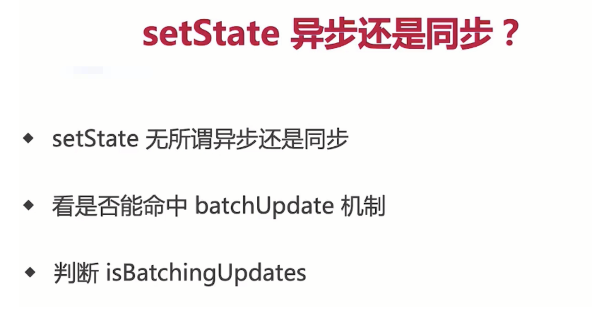 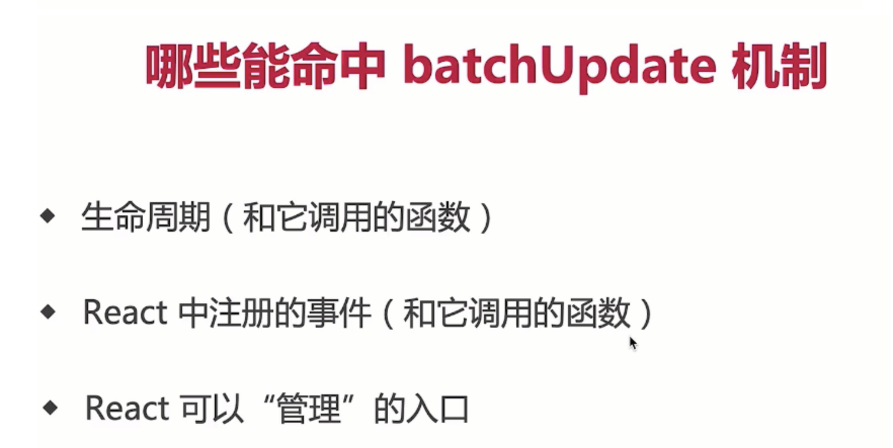 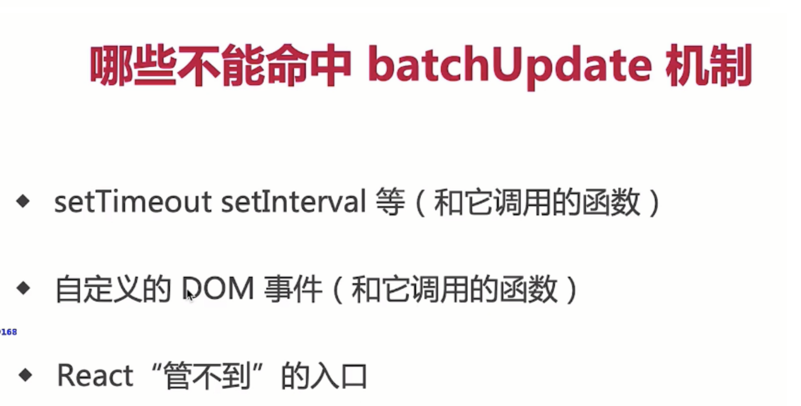
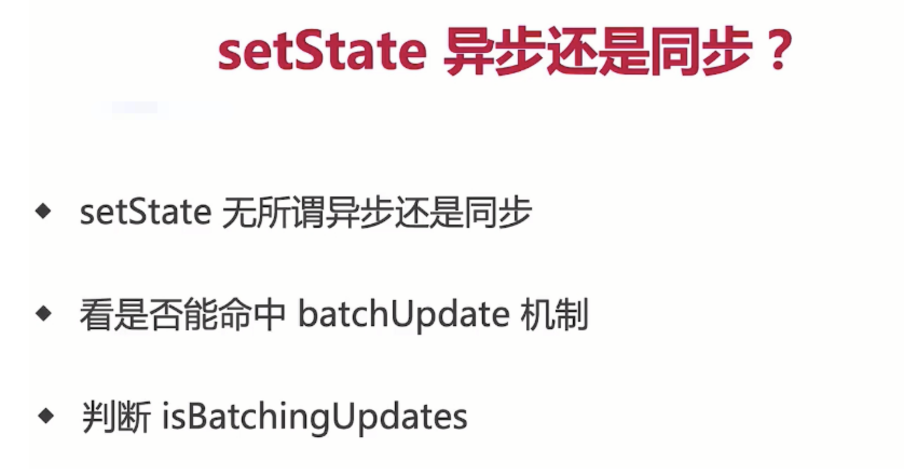 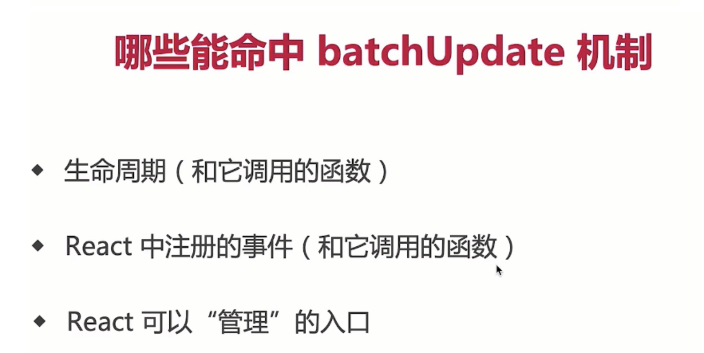 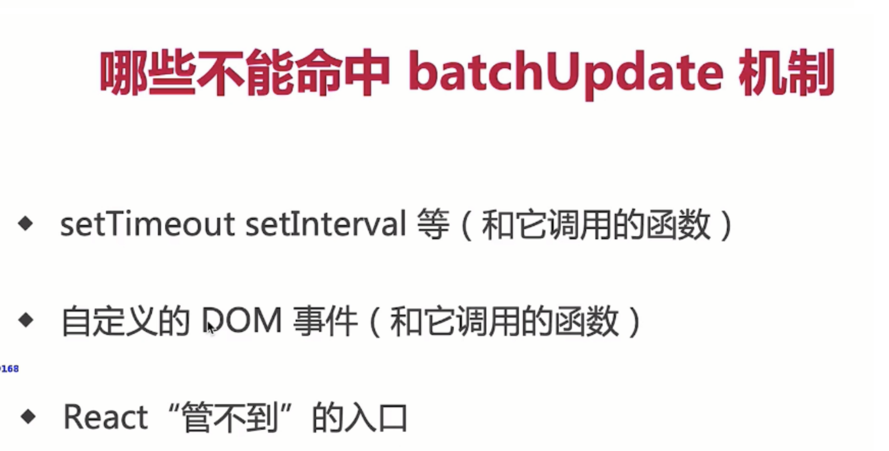
# 6 setState原理分析
1. setState异步更新
- 我们都知道，
React通过this.state来访问state，通过this.setState()方法来更新state。当this.setState()方法被调用的时候，React会重新调用render方法来重新渲染UI - 首先如果直接在
setState后面获取state的值是获取不到的。在React内部机制能检测到的地方，setState就是异步的；在React检测不到的地方，例如setInterval,setTimeout，setState就是同步更新的
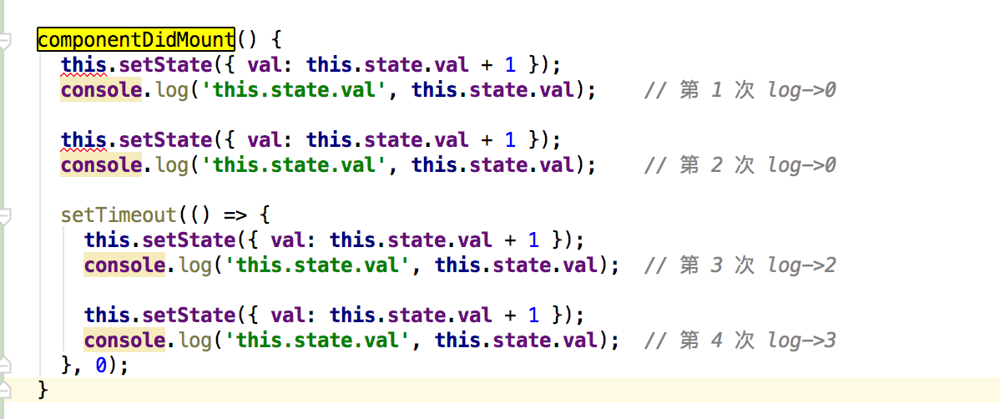
因为
setState是可以接受两个参数的，一个state，一个回调函数。因此我们可以在回调函数里面获取值

setState方法通过一个队列机制实现state更新，当执行setState的时候，会将需要更新的state合并之后放入状态队列，而不会立即更新this.state- 如果我们不使用
setState而是使用this.state.key来修改，将不会触发组件的re-render。 - 如果将
this.state赋值给一个新的对象引用，那么其他不在对象上的state将不会被放入状态队列中，当下次调用setState并对状态队列进行合并时，直接造成了state丢失
1.1 setState批量更新的过程
在
react生命周期和合成事件执行前后都有相应的钩子，分别是pre钩子和post钩子，pre钩子会调用batchedUpdate方法将isBatchingUpdates变量置为true，开启批量更新，而post钩子会将isBatchingUpdates置为false
isBatchingUpdates变量置为true，则会走批量更新分支，setState的更新会被存入队列中，待同步代码执行完后，再执行队列中的state更新。isBatchingUpdates为true，则把当前组件（即调用了setState的组件）放入dirtyComponents数组中；否则batchUpdate所有队列中的更新- 而在原生事件和异步操作中，不会执行
pre钩子，或者生命周期的中的异步操作之前执行了pre钩子，但是pos钩子也在异步操作之前执行完了，isBatchingUpdates必定为false，也就不会进行批量更新
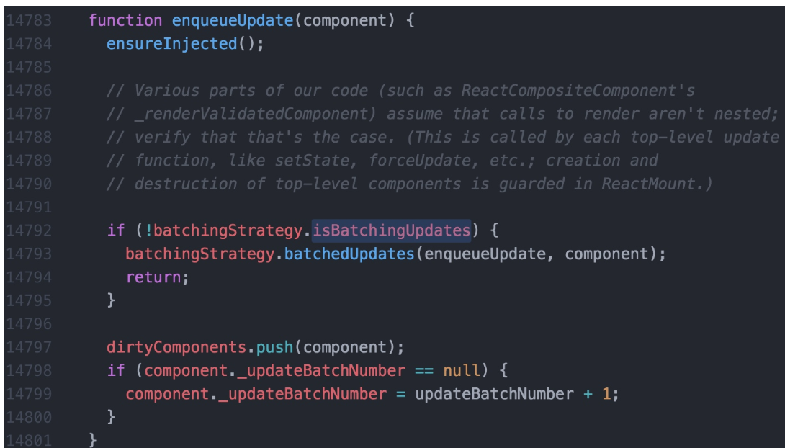
enqueueUpdate包含了React避免重复render的逻辑。mountComponent和updateComponent方法在执行的最开始，会调用到batchedUpdates进行批处理更新，此时会将isBatchingUpdates设置为true，也就是将状态标记为现在正处于更新阶段了。isBatchingUpdates为true，则把当前组件（即调用了setState的组件）放入dirtyComponents数组中；否则batchUpdate所有队列中的更新
1.2 为什么直接修改this.state无效
- 要知道
setState本质是通过一个队列机制实现state更新的。 执行setState时，会将需要更新的state合并后放入状态队列，而不会立刻更新state，队列机制可以批量更新state。 - 如果不通过
setState而直接修改this.state，那么这个state不会放入状态队列中，下次调用setState时对状态队列进行合并时，会忽略之前直接被修改的state，这样我们就无法合并了，而且实际也没有把你想要的state更新上去
1.3 什么是批量更新 Batch Update
在一些
mv*框架中，，就是将一段时间内对model的修改批量更新到view的机制。比如那前端比较火的React、vue（nextTick机制,视图的更新以及实现）
1.4 setState之后发生的事情
setState操作并不保证是同步的，也可以认为是异步的React在setState之后，会经对state进行diff，判断是否有改变，然后去diff dom决定是否要更新UI。如果这一系列过程立刻发生在每一个setState之后，就可能会有性能问题- 在短时间内频繁
setState。React会将state的改变压入栈中，在合适的时机，批量更新state和视图，达到提高性能的效果
1.5 如何知道state已经被更新
传入回调函数
setState({
index: 1
}}, function(){
console.log(this.state.index);
})
在钩子函数中体现
componentDidUpdate(){
console.log(this.state.index);
}
2. setState循环调用风险
- 当调用
setState时，实际上会执行enqueueSetState方法，并对partialState以及_pending-StateQueue更新队列进行合并操作，最终通过enqueueUpdate执行state更新 - 而
performUpdateIfNecessary方法会获取_pendingElement,_pendingStateQueue，_pending-ForceUpdate，并调用receiveComponent和updateComponent方法进行组件更新 - 如果在
shouldComponentUpdate或者componentWillUpdate方法中调用setState，此时this._pending-StateQueue != null，就会造成循环调用，使得浏览器内存占满后崩溃
3 事务
- 事务就是将需要执行的方法使用
wrapper封装起来，再通过事务提供的perform方法执行，先执行wrapper中的initialize方法，执行完perform之后，在执行所有的close方法，一组initialize及close方法称为一个wrapper。 - 那么事务和
setState方法的不同表现有什么关系，首先我们把4次setState简单归类，前两次属于一类，因为它们在同一调用栈中执行，setTimeout中的两次setState属于另一类 - 在
setState调用之前，已经处在batchedUpdates执行的事务中了。那么这次batchedUpdates方法是谁调用的呢，原来是ReactMount.js中的_renderNewRootComponent方法。也就是说，整个将React组件渲染到DOM中的过程就是处于一个大的事务中。而在componentDidMount中调用setState时，batchingStrategy的isBatchingUpdates已经被设为了true，所以两次setState的结果没有立即生效 - 再反观
setTimeout中的两次setState，因为没有前置的batchedUpdates调用，所以导致了新的state马上生效
4. 总结
- 通过
setState去更新this.state，不要直接操作this.state，请把它当成不可变的 - 调用
setState更新this.state不是马上生效的，它是异步的，所以不要天真以为执行完setState后this.state就是最新的值了 - 多个顺序执行的
setState不是同步地一个一个执行滴，会一个一个加入队列，然后最后一起执行，即批处理
# 7 React事务机制
 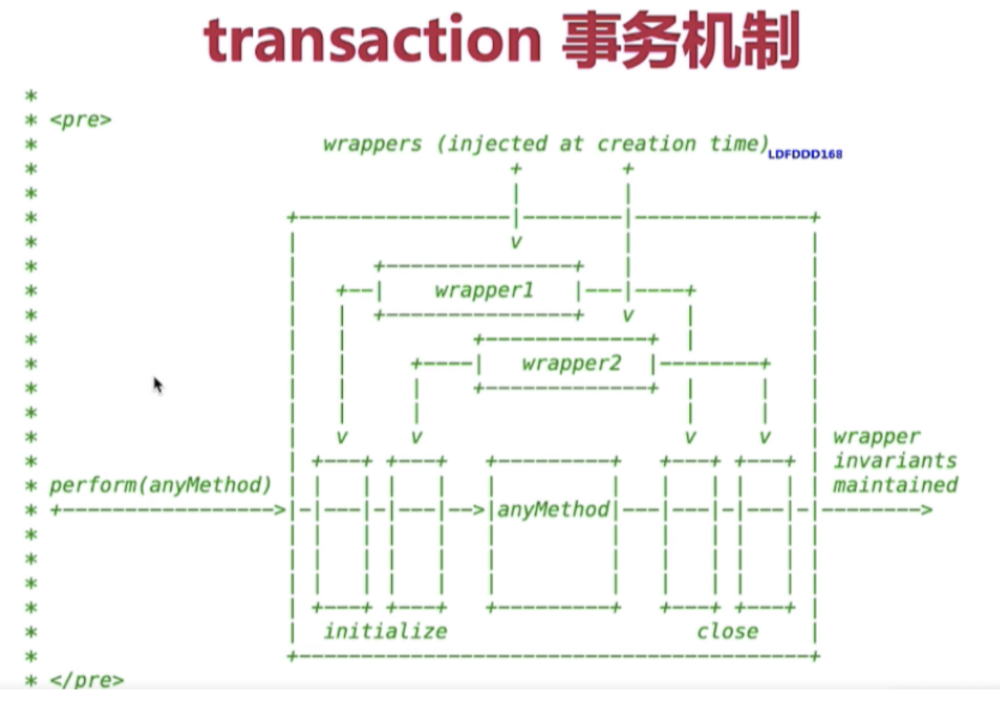 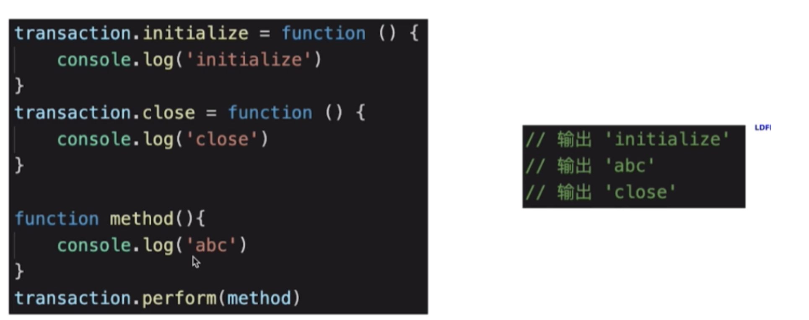
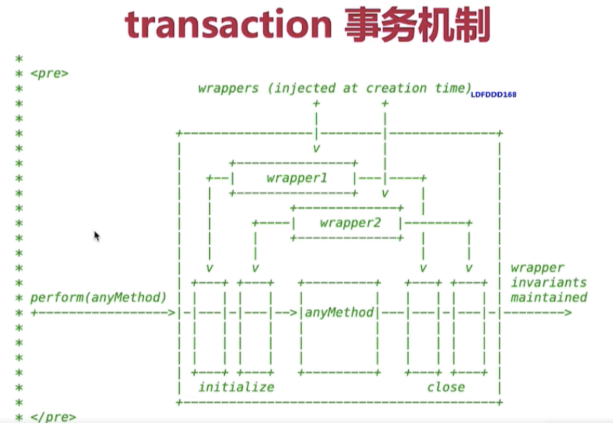 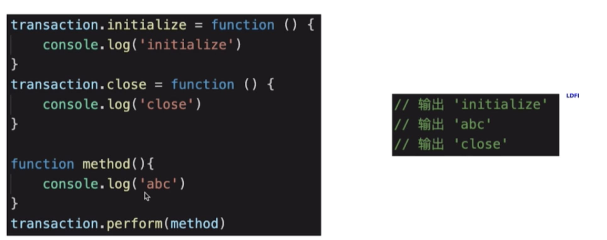
# 8 React组件和渲染更新过程
渲染和更新过程
- jsx如何渲染为页面
- setState之后如何更新页面
- 面试考察全流程
JSX本质和vdom
- JSX即
createElement函数 - 执行生成vnode
patch(elem,vnode)和patch(vnode,newNode)
组件渲染过程
props staterender()生成vnodepatch(elem, vnode)
组件更新过程
setState-->dirtyComponents(可能有子组件)render生成newVnodepatch(vnode, newVnode)
# 9 diff算法是怎么运作
每一种节点类型有自己的属性，也就是prop，每次进行diff的时候，react会先比较该节点类型，假如节点类型不一样，那么react会直接删除该节点，然后直接创建新的节点插入到其中，假如节点类型一样，那么会比较prop是否有更新，假如有prop不一样，那么react会判定该节点有更新，那么重渲染该节点，然后在对其子节点进行比较，一层一层往下，直到没有子节点
- 把树形结构按照层级分解，只比较同级元素。
- 给列表结构的每个单元添加唯一的
key属性，方便比较。 React只会匹配相同class的component（这里面的class指的是组件的名字）- 合并操作，调用
component的setState方法的时候,React将其标记为 -dirty.到每一个事件循环结束,React检查所有标记dirty的component重新绘制. - 选择性子树渲染。开发人员可以重写
shouldComponentUpdate提高diff的性能
优化⬇️
为了降低算法复杂度，
React的diff会预设三个限制：
- 只对同级元素进行
Diff。如果一个DOM节点在前后两次更新中跨越了层级，那么React不会尝试复用他。 - 两个不同类型的元素会产生出不同的树。如果元素由
div变为p，React会销毁div及其子孙节点，并新建p及其子孙节点。 - 开发者可以通过
key prop来暗示哪些子元素在不同的渲染下能保持稳定。考虑如下例子：
Diff的思路
该如何设计算法呢？如果让我设计一个Diff算法，我首先想到的方案是：
- 判断当前节点的更新属于哪种情况
- 如果是
新增，执行新增逻辑 - 如果是
删除，执行删除逻辑 - 如果是
更新，执行更新逻辑
- 按这个方案，其实有个隐含的前提——不同操作的优先级是相同的
- 但是
React团队发现，在日常开发中，相较于新增和删除，更新组件发生的频率更高。所以Diff会优先判断当前节点是否属于更新。
基于以上原因，Diff算法的整体逻辑会经历两轮遍历：
- 第一轮遍历：处理
更新的节点。 - 第二轮遍历：处理剩下的不属于
更新的节点。
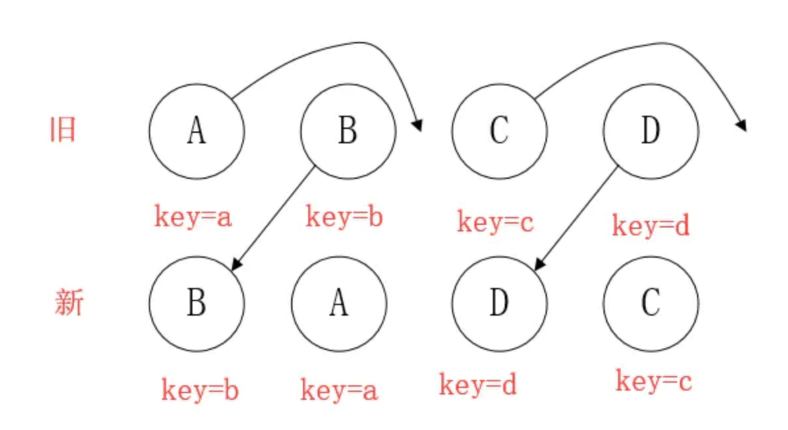
diff算法的作用
计算出Virtual DOM中真正变化的部分，并只针对该部分进行原生DOM操作，而非重新渲染整个页面。
传统diff算法
通过循环递归对节点进行依次对比，算法复杂度达到
O(n^3)，n是树的节点数，这个有多可怕呢？——如果要展示1000个节点，得执行上亿次比较。。即便是CPU快能执行30亿条命令，也很难在一秒内计算出差异。
React的diff算法
- 什么是调和？
将Virtual DOM树转换成actual DOM树的最少操作的过程 称为 调和 。
- 什么是React diff算法？
diff算法是调和的具体实现。
diff策略
React用 三大策略 将O(n^3)复杂度 转化为 O(n)复杂度
策略一（tree diff）：
- Web UI中DOM节点跨层级的移动操作特别少，可以忽略不计。
策略二（component diff）：
- 拥有相同类的两个组件 生成相似的树形结构，
- 拥有不同类的两个组件 生成不同的树形结构。
策略三（element diff）：
对于同一层级的一组子节点，通过唯一id区分。
tree diff
- React通过updateDepth对Virtual DOM树进行层级控制。
- 对树分层比较，两棵树 只对同一层次节点 进行比较。如果该节点不存在时，则该节点及其子节点会被完全删除，不会再进一步比较。
- 只需遍历一次，就能完成整棵DOM树的比较。

那么问题来了，如果DOM节点出现了跨层级操作,diff会咋办呢？
答：diff只简单考虑同层级的节点位置变换，如果是跨层级的话，只有创建节点和删除节点的操作。

如上图所示，以A为根节点的整棵树会被重新创建，而不是移动，因此 官方建议不要进行DOM节点跨层级操作，可以通过CSS隐藏、显示节点，而不是真正地移除、添加DOM节点
component diff
React对不同的组件间的比较，有三种策略
- 同一类型的两个组件，按原策略（层级比较）继续比较Virtual DOM树即可。
- 同一类型的两个组件，组件A变化为组件B时，可能Virtual DOM没有任何变化，如果知道这点（变换的过程中，Virtual DOM没有改变），可节省大量计算时间，所以 用户 可以通过
shouldComponentUpdate()来判断是否需要 判断计算。 - 不同类型的组件，将一个（将被改变的）组件判断为
dirty component（脏组件），从而替换 整个组件的所有节点。
注意：如果组件D和组件G的结构相似，但是 React判断是 不同类型的组件，则不会比较其结构，而是删除 组件D及其子节点，创建组件G及其子节点。
element diff
当节点处于同一层级时，diff提供三种节点操作：删除、插入、移动。
- 插入：组件 C 不在集合（A,B）中，需要插入
- 删除：
- 组件 D 在集合（A,B,D）中，但 D的节点已经更改，不能复用和更新，所以需要删除 旧的 D ，再创建新的。
- 组件 D 之前在 集合（A,B,D）中，但集合变成新的集合（A,B）了，D 就需要被删除。
- 移动：组件D已经在集合（A,B,C,D）里了，且集合更新时，D没有发生更新，只是位置改变，如新集合（A,D,B,C），D在第二个，无须像传统diff，让旧集合的第二个B和新集合的第二个D 比较，并且删除第二个位置的B，再在第二个位置插入D，而是 （对同一层级的同组子节点） 添加唯一key进行区分，移动即可。
总结
tree diff：只对比同一层的 dom 节点，忽略 dom 节点的跨层级移动
如下图，react 只会对相同颜色方框内的 DOM 节点进行比较，即同一个父节点下的所有子节点。当发现节点不存在时，则该节点及其子节点会被完全删除掉，不会用于进一步的比较。
这样只需要对树进行一次遍历，便能完成整个 DOM 树的比较。

这就意味着，如果 dom 节点发生了跨层级移动，react 会删除旧的节点，生成新的节点，而不会复用。
component diff：如果不是同一类型的组件，会删除旧的组件，创建新的组件

element diff：对于同一层级的一组子节点，需要通过唯一 id 进行来区分
- 如果没有 id 来进行区分，一旦有插入动作，会导致插入位置之后的列表全部重新渲染
- 这也是为什么渲染列表时为什么要使用唯一的 key。
diff的不足与待优化的地方
尽量减少类似将最后一个节点移动到列表首部的操作，当节点数量过大或更新操作过于频繁时，会影响React的渲染性能
# 10 合成事件原理
为了解决跨浏览器兼容性问题，
React会将浏览器原生事件（Browser Native Event）封装为合成事件（SyntheticEvent）传入设置的事件处理器中。这里的合成事件提供了与原生事件相同的接口，不过它们屏蔽了底层浏览器的细节差异，保证了行为的一致性。另外有意思的是，React并没有直接将事件附着到子元素上，而是以单一事件监听器的方式将所有的事件发送到顶层进行处理。这样React在更新DOM的时候就不需要考虑如何去处理附着在DOM上的事件监听器，最终达到优化性能的目的
- 所有的事件挂在document上
- event不是原生的，是SyntheticEvent合成事件对象
- 和Vue事件不同,和DOM事件也不同
如果DOM上绑定了过多的事件处理函数,整个页面响应以及内存占用可能都会受到影响。React为了避免这类DOM事件滥用,同时屏蔽底层不同浏览器之间的事件系统的差异,实现了一个中间层 - SyntheticEvent
- 当用户在为onClick添加函数时,React并没有将Click绑定到DOM上面
- 而是在document处监听所有支持的事件,当事件发生并冒泡至document处时,React将事件内容封装交给中间层 SyntheticEvent (负责所有事件合成)
- 所以当事件触发的时候, 对使用统一的分发函数 dispatchEvent 将指定函数执行

为何要合成事件
- 兼容性和跨平台
- 挂在统一的document上，减少内存消耗，避免频繁解绑
- 方便事件的统一管理（事务机制）
- dispatchEvent事件机制
# 11 JSX语法糖本质
JSX是语法糖，通过babel转成
React.createElement函数，在babel官网上可以在线把JSX转成React的JS语法
- 首先解析出来的话，就是一个
createElement函数 - 然后这个函数执行完后，会返回一个
vnode - 通过vdom的patch或者是其他的一个方法，最后渲染一个页面
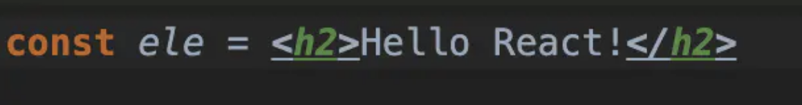 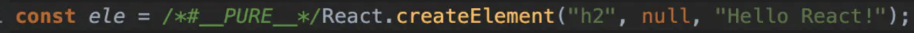
script标签中不添加
text/babel解析jsx语法的情况下
<script>
const ele = React.createElement("h2", null, "Hello React!");
ReactDOM.render(ele, document.getElementById("app"));
</script>
JSX的本质是React.createElement()函数
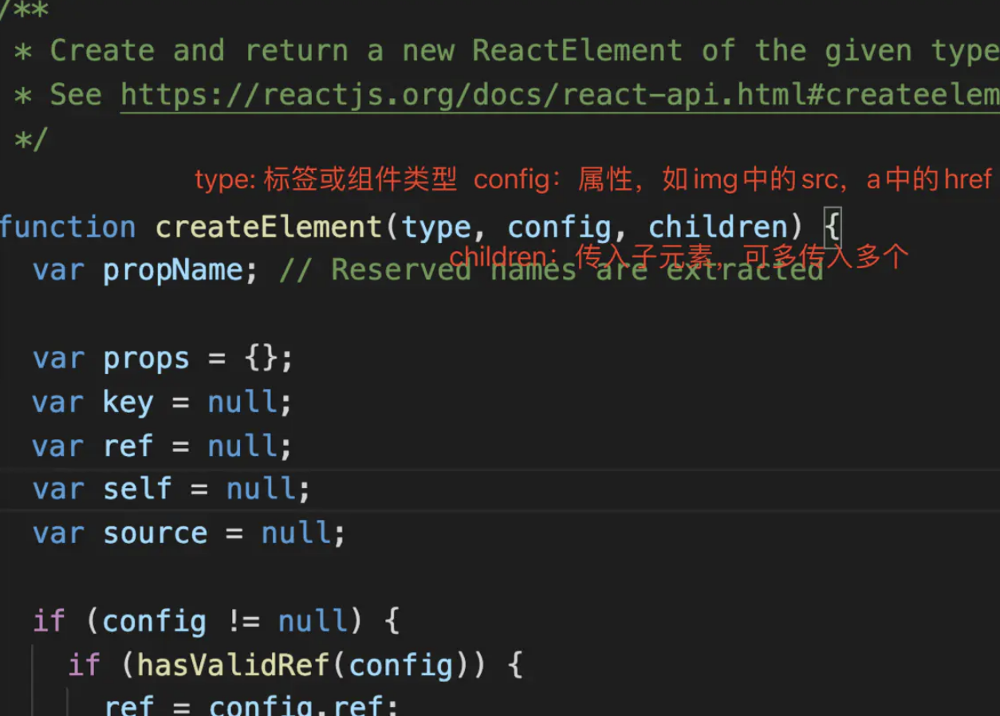
createElement函数返回的对象是ReactEelement对象。
createElement的写法如下
class App extends React.Component {
constructor() {
super()
this.state = {}
}
render() {
return React.createElement("div", null,
/*第一个子元素，header*/
React.createElement("div", { className: "header" },
React.createElement("h1", { title: "\u6807\u9898" }, "\u6211\u662F\u6807\u9898")
),
/*第二个子元素，content*/
React.createElement("div", { className: "content" },
React.createElement("h2", null, "\u6211\u662F\u9875\u9762\u7684\u5185\u5BB9"),
React.createElement("button", null, "\u6309\u94AE"),
React.createElement("button", null, "+1"),
React.createElement("a", { href: "http://www.baidu.com" },
"\u767E\u5EA6\u4E00\u4E0B")
),
/*第三个子元素，footer*/
React.createElement("div", { className: "footer" },
React.createElement("p", null, "\u6211\u662F\u5C3E\u90E8\u7684\u5185\u5BB9")
)
);
}
}
ReactDOM.render(<App />, document.getElementById("app"));
实际开发中不会使用createElement来创建ReactElement的，一般都是使用JSX的形式开发。
ReactElement在程序中打印一下
render() {
let ele = (
<div>
<div className="header">
<h1 title="标题">我是标题</h1>
</div>
<div className="content">
<h2>我是页面的内容</h2>
<button>按钮</button>
<button>+1</button>
<a href="http://www.baidu.com">百度一下</a>
</div>
<div className="footer">
<p>我是尾部的内容</p>
</div>
</div>
)
console.log(ele);
return ele;
}
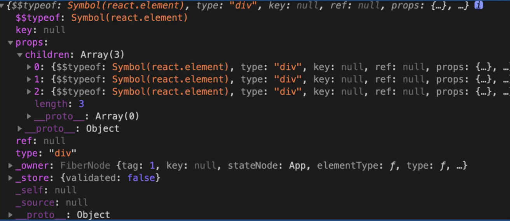
react通过babel把JSX转成
createElement函数，生成ReactElement对象，然后通过ReactDOM.render函数把ReactElement渲染成真实的DOM元素
# 12 为什么 React 元素有一个 $$typeof 属性

目的是为了防止 XSS 攻击。因为 Synbol 无法被序列化，所以 React 可以通过有没有 $$typeof 属性来断出当前的 element 对象是从数据库来的还是自己生成的。
- 如果没有 $$typeof 这个属性，react 会拒绝处理该元素。
- 在 React 的古老版本中，下面的写法会出现 XSS 攻击：
// 服务端允许用户存储 JSON
let expectedTextButGotJSON = {
type: 'div',
props: {
dangerouslySetInnerHTML: {
__html: '/* 把你想的搁着 */'
},
},
// ...
};
let message = { text: expectedTextButGotJSON };
// React 0.13 中有风险
<p>
{message.text}
</p>
# 13 React有哪些优化性能的手段
类组件中的优化手段
- 使用纯组件
PureComponent作为基类。 - 使用
React.memo高阶函数包装组件。 - 使用
shouldComponentUpdate生命周期函数来自定义渲染逻辑。
方法组件中的优化手段
- 使用
useMemo。 - 使用
useCallBack。
其他方式
- 在列表需要频繁变动时，使用唯一 id 作为 key，而不是数组下标。
- 必要时通过改变 CSS 样式隐藏显示组件，而不是通过条件判断显示隐藏组件。
- 使用
Suspense和 lazy 进行懒加载，例如：
import React, { lazy, Suspense } from "react";
export default class CallingLazyComponents extends React.Component {
render() {
var ComponentToLazyLoad = null;
if (this.props.name == "Mayank") {
ComponentToLazyLoad = lazy(() => import("./mayankComponent"));
} else if (this.props.name == "Anshul") {
ComponentToLazyLoad = lazy(() => import("./anshulComponent"));
}
return (
<div>
<h1>This is the Base User: {this.state.name}</h1>
<Suspense fallback={<div>Loading...</div>}>
<ComponentToLazyLoad />
</Suspense>
</div>
)
}
}
# 14 Redux实现原理解析
为什么要用redux
在
React中，数据在组件中是单向流动的，数据从一个方向父组件流向子组件（通过props）,所以，两个非父子组件之间通信就相对麻烦，redux的出现就是为了解决state里面的数据问题
Redux设计理念
Redux是将整个应用状态存储到一个地方上称为store,里面保存着一个状态树store tree,组件可以派发(dispatch)行为(action)给store,而不是直接通知其他组件，组件内部通过订阅store中的状态state来刷新自己的视图
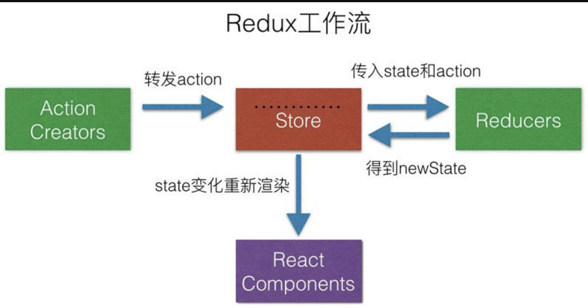
Redux三大原则
- 唯一数据源
整个应用的state都被存储到一个状态树里面，并且这个状态树，只存在于唯一的store中
- 保持只读状态
state是只读的，唯一改变state的方法就是触发action，action是一个用于描述以发生时间的普通对象
- 数据改变只能通过纯函数来执行
使用纯函数来执行修改，为了描述
action如何改变state的，你需要编写reducers
Redux源码
let createStore = (reducer) => {
let state;
//获取状态对象
//存放所有的监听函数
let listeners = [];
let getState = () => state;
//提供一个方法供外部调用派发action
let dispath = (action) => {
//调用管理员reducer得到新的state
state = reducer(state, action);
//执行所有的监听函数
listeners.forEach((l) => l())
}
//订阅状态变化事件，当状态改变发生之后执行监听函数
let subscribe = (listener) => {
listeners.push(listener);
}
dispath();
return {
getState,
dispath,
subscribe
}
}
let combineReducers=(renducers)=>{
//传入一个renducers管理组，返回的是一个renducer
return function(state={},action={}){
let newState={};
for(var attr in renducers){
newState[attr]=renducers[attr](state[attr],action)
}
return newState;
}
}
export {createStore,combineReducers};
# 15 connect组件原理分析
1. connect用法
作用：连接
React组件与Redux store
connect([mapStateToProps], [mapDispatchToProps], [mergeProps],[options])
// 这个函数允许我们将 store 中的数据作为 props 绑定到组件上
const mapStateToProps = (state) => {
return {
count: state.count
}
}
- 这个函数的第一个参数就是
Redux的store，我们从中摘取了count属性。你不必将state中的数据原封不动地传入组件，可以根据state中的数据，动态地输出组件需要的（最小）属性 - 函数的第二个参数
ownProps，是组件自己的props
当
state变化，或者ownProps变化的时候，mapStateToProps都会被调用，计算出一个新的stateProps，（在与ownProps merge后）更新给组件
mapDispatchToProps(dispatch, ownProps): dispatchProps
connect的第二个参数是mapDispatchToProps，它的功能是，将action作为props绑定到组件上，也会成为MyComp的 `props
2. 原理解析
首先
connect之所以会成功，是因为Provider组件
- 在原应用组件上包裹一层，使原来整个应用成为
Provider的子组件 - 接收
Redux的store作为props，通过context对象传递给子孙组件上的connect
connect做了些什么
它真正连接
Redux和React，它包在我们的容器组件的外一层，它接收上面Provider提供的store里面的state和dispatch，传给一个构造函数，返回一个对象，以属性形式传给我们的容器组件
3. 源码
connect是一个高阶函数，首先传入mapStateToProps、mapDispatchToProps，然后返回一个生产Component的函数(wrapWithConnect)，然后再将真正的Component作为参数传入wrapWithConnect，这样就生产出一个经过包裹的Connect组件，该组件具有如下特点
- 通过
props.store获取祖先Component的store props包括stateProps、dispatchProps、parentProps,合并在一起得到nextState，作为props传给真正的Component componentDidMount时，添加事件this.store.subscribe(this.handleChange)，实现页面交互shouldComponentUpdate时判断是否有避免进行渲染，提升页面性能，并得到nextStatecomponentWillUnmount时移除注册的事件this.handleChange
// 主要逻辑
export default function connect(mapStateToProps, mapDispatchToProps, mergeProps, options = {}) {
return function wrapWithConnect(WrappedComponent) {
class Connect extends Component {
constructor(props, context) {
// 从祖先Component处获得store
this.store = props.store || context.store
this.stateProps = computeStateProps(this.store, props)
this.dispatchProps = computeDispatchProps(this.store, props)
this.state = { storeState: null }
// 对stateProps、dispatchProps、parentProps进行合并
this.updateState()
}
shouldComponentUpdate(nextProps, nextState) {
// 进行判断，当数据发生改变时，Component重新渲染
if (propsChanged || mapStateProducedChange || dispatchPropsChanged) {
this.updateState(nextProps)
return true
}
}
componentDidMount() {
// 改变Component的state
this.store.subscribe(() = {
this.setState({
storeState: this.store.getState()
})
})
}
render() {
// 生成包裹组件Connect
return (
<WrappedComponent {...this.nextState} />
)
}
}
Connect.contextTypes = {
store: storeShape
}
return Connect;
}
}
# 16 react hooks，它带来了那些便利
- 代码逻辑聚合，逻辑复用
- HOC嵌套地狱
- 代替class
React 中通常使用 类定义 或者 函数定义 创建组件:
在类定义中，我们可以使用到许多 React 特性，例如 state、 各种组件生命周期钩子等，但是在函数定义中，我们却无能为力，因此 React 16.8 版本推出了一个新功能 (React Hooks)，通过它，可以更好的在函数定义组件中使用 React 特性。
好处:
- 跨组件复用: 其实 render props / HOC 也是为了复用，相比于它们，Hooks 作为官方的底层 API，最为轻量，而且改造成本小，不会影响原来的组件层次结构和传说中的嵌套地狱；
- 类定义更为复杂
- 不同的生命周期会使逻辑变得分散且混乱，不易维护和管理；
- 时刻需要关注this的指向问题；
- 代码复用代价高，高阶组件的使用经常会使整个组件树变得臃肿；
- 状态与UI隔离: 正是由于 Hooks 的特性，状态逻辑会变成更小的粒度，并且极容易被抽象成一个自定义 Hooks，组件中的状态和 UI 变得更为清晰和隔离。
注意:
- 避免在 循环/条件判断/嵌套函数 中调用 hooks，保证调用顺序的稳定；
- 只有 函数定义组件 和 hooks 可以调用 hooks，避免在 类组件 或者 普通函数 中调用；
- 不能在useEffect中使用useState，React 会报错提示；
- 类组件不会被替换或废弃，不需要强制改造类组件，两种方式能并存；
重要钩子
- 状态钩子 (useState): 用于定义组件的 State，其到类定义中this.state的功能；
// useState 只接受一个参数: 初始状态
// 返回的是组件名和更改该组件对应的函数
const [flag, setFlag] = useState(true);
// 修改状态
setFlag(false)
// 上面的代码映射到类定义中:
this.state = {
flag: true
}
const flag = this.state.flag
const setFlag = (bool) => {
this.setState({
flag: bool,
})
}
- 生命周期钩子 (useEffect):
类定义中有许多生命周期函数，而在 React Hooks 中也提供了一个相应的函数 (useEffect)，这里可以看做componentDidMount、componentDidUpdate和componentWillUnmount的结合。
useEffect(callback, [source])接受两个参数
- callback: 钩子回调函数；
- source: 设置触发条件，仅当 source 发生改变时才会触发；
- useEffect钩子在没有传入[source]参数时，默认在每次 render 时都会优先调用上次保存的回调中返回的函数，后再重新调用回调；
useEffect(() => {
// 组件挂载后执行事件绑定
console.log('on')
addEventListener()
// 组件 update 时会执行事件解绑
return () => {
console.log('off')
removeEventListener()
}
}, [source]);
// 每次 source 发生改变时，执行结果(以类定义的生命周期，便于大家理解):
// --- DidMount ---
// 'on'
// --- DidUpdate ---
// 'off'
// 'on'
// --- DidUpdate ---
// 'off'
// 'on'
// --- WillUnmount ---
// 'off'
通过第二个参数，我们便可模拟出几个常用的生命周期:
- componentDidMount: 传入[]时，就只会在初始化时调用一次
const useMount = (fn) => useEffect(fn, [])
- componentWillUnmount: 传入[]，回调中的返回的函数也只会被最终执行一次
const useUnmount = (fn) => useEffect(() => fn, [])
- mounted: 可以使用 useState 封装成一个高度可复用的 mounted 状态；
const useMounted = () => {
const [mounted, setMounted] = useState(false);
useEffect(() => {
!mounted && setMounted(true);
return () => setMounted(false);
}, []);
return mounted;
}
- componentDidUpdate: useEffect每次均会执行，其实就是排除了 DidMount 后即可；
const mounted = useMounted()
useEffect(() => {
mounted && fn()
})
- 其它内置钩子:
useContext: 获取 context 对象useReducer: 类似于 Redux 思想的实现，但其并不足以替代 Redux，可以理解成一个组件内部的 redux:- 并不是持久化存储，会随着组件被销毁而销毁；
- 属于组件内部，各个组件是相互隔离的，单纯用它并无法共享数据；
- 配合useContext`的全局性，可以完成一个轻量级的 Redux；(easy-peasy)
useCallback: 缓存回调函数，避免传入的回调每次都是新的函数实例而导致依赖组件重新渲染，具有性能优化的效果；useMemo: 用于缓存传入的 props，避免依赖的组件每次都重新渲染；useRef: 获取组件的真实节点；useLayoutEffect- DOM更新同步钩子。用法与useEffect类似，只是区别于执行时间点的不同
- useEffect属于异步执行，并不会等待 DOM 真正渲染后执行，而useLayoutEffect则会真正渲染后才触发；
- 可以获取更新后的 state；
- 自定义钩子(useXxxxx): 基于 Hooks 可以引用其它 Hooks 这个特性，我们可以编写自定义钩子，如上面的useMounted。又例如，我们需要每个页面自定义标题:
function useTitle(title) {
useEffect(
() => {
document.title = title;
});
}
// 使用:
function Home() {
const title = '我是首页'
useTitle(title)
return (
<div>{title}</div>
)
}
# 17 聊聊 Redux 和 Vuex 的设计思想
共同点
首先两者都是处理全局状态的工具库，大致实现思想都是：全局
state保存状态---->dispatch(action)------>reducer(vuex里的mutation)----> 生成newState; 整个状态为同步操作；
区别
最大的区别在于处理异步的不同，vuex里面多了一步
commit操作，在action之后commit(mutation)之前处理异步，而redux里面则是通过中间件处理
# 18 redux 中间件
中间件提供第三方插件的模式，自定义拦截 action -> reducer 的过程。变为 action -> middlewares -> reducer 。这种机制可以让我们改变数据流，实现如异步 action ，action 过 滤，日志输出，异常报告等功能
常见的中间件:
redux-logger:提供日志输出;redux-thunk:处理异步操作;redux-promise: 处理异步操作;actionCreator的返回值是promise
redux中间件的原理是什么
applyMiddleware
为什么会出现中间件？
- 它只是一个用来加工dispatch的工厂，而要加工什么样的dispatch出来，则需要我们传入对应的中间件函数
- 让每一个中间件函数，接收一个dispatch，然后返回一个改造后的dispatch，来作为下一个中间件函数的next，以此类推。
function applyMiddleware(middlewares) {
middlewares = middlewares.slice()
middlewares.reverse()
let dispatch = store.dispatch
middlewares.forEach(middleware =>
dispatch = middleware(store)(dispatch)
)
return Object.assign({}, store, { dispatch })
}
上面的
middleware(store)(dispatch)就相当于是const logger = store => next => {}，这就是构造后的dispatch，继续向下传递。这里middlewares.reverse()，进行数组反转的原因，是最后构造的dispatch，实际上是最先执行的。因为在applyMiddleware串联的时候，每个中间件只是返回一个新的dispatch函数给下一个中间件，实际上这个dispatch并不会执行。只有当我们在程序中通过store.dispatch(action)，真正派发的时候，才会执行。而此时的dispatch`是最后一个中间件返回的包装函数。然后依次向前递推执行。
# 19 redux数据管理
你会把数据统一放在redux中管理，还是共享数据放在redux中管理？
答：
统一放在redux中管理，我们都知道数据存在props中和state中，当你会认为当前这个组件的数据只是这个组件需要使用，当某一天，项目扩展，这个组件数据需要给其他组件使用，这个时候，你是如何传递数据呢，是通过props传递呢，还是放在redux中存呢？
本来一开始自身使用，后来需要共享数据，需要放在redux，你还是需要将state数据迁移到redux中。
代码可维护性，可扩展性很高，加上immutable + react后，更加友好，性能更好，数据也不会臃肿。
# 20 受控组件和非受控组件
<FInput value = {x} onChange = {fn} />
// 上面的是受控组件 下面的是非受控组件
<FInput defaultValue = {x} />
- 当你一个组件同时传递一个value以及onChange事件时，它就是一个受控组件，收入输出都是我来控制的。
- 第二个只是传递了默认的初时值，并没有传onchange事件，
- 非受控组件是一种反模式，它的值不受组件自身的state或props控制
# 21 SSR原理
借助虚拟dom,服务器中没有dom概念的，react巧妙的借助虚拟dom，然后可以在服务器中nodejs可以运行起来react代码。
# 22 如何避免ajax数据请求重新获取
一般而言，ajax请求的数据都放在redux中存取。
# 23 组件之间通信
- 父子组件通信
- 自定义事件
- redux和context
context如何运用
- 父组件向其下所有子孙组件传递信息
- 如一些简单的信息：主题、语言
- 复杂的公共信息用redux
# 24 React router

React router原理分析 (opens new window)
# 七、性能
# 1 DNS 预解析
DNS解析也是需要时间的，可以通过预解析的方式来预先获得域名所对应的IP
<link rel="dns-prefetch" href="//blog.poetries.top">
# 2 缓存
- 缓存对于前端性能优化来说是个很重要的点，良好的缓存策略可以降低资源的重复加载提高网页的整体加载速度
- 通常浏览器缓存策略分为两种：强缓存和协商缓存
强缓存
实现强缓存可以通过两种响应头实现：
Expires和Cache-Control。强缓存表示在缓存期间不需要请求，state code为200
Expires: Wed, 22 Oct 2018 08:41:00 GMT
Expires是HTTP / 1.0的产物，表示资源会在Wed, 22 Oct 2018 08:41:00 GMT后过期，需要再次请求。并且Expires受限于本地时间，如果修改了本地时间，可能会造成缓存失效
Cache-control: max-age=30
Cache-Control出现于HTTP / 1.1，优先级高于Expires。该属性表示资源会在30秒后过期，需要再次请求
协商缓存
- 如果缓存过期了，我们就可以使用协商缓存来解决问题。协商缓存需要请求，如果缓存有效会返回 304
- 协商缓存需要客户端和服务端共同实现，和强缓存一样，也有两种实现方式
Last-Modified 和 If-Modified-Since
Last-Modified表示本地文件最后修改日期，If-Modified-Since会将Last-Modified的值发送给服务器，询问服务器在该日期后资源是否有更新，有更新的话就会将新的资源发送回来- 但是如果在本地打开缓存文件，就会造成
Last-Modified被修改，所以在HTTP / 1.1出现了ETag
ETag 和 If-None-Match
ETag类似于文件指纹，If-None-Match会将当前ETag发送给服务器，询问该资源 ETag 是否变动，有变动的话就将新的资源发送回来。并且ETag优先级比Last-Modified高
选择合适的缓存策略
对于大部分的场景都可以使用强缓存配合协商缓存解决，但是在一些特殊的地方可能需要选择特殊的缓存策略
- 对于某些不需要缓存的资源，可以使用
Cache-control: no-store，表示该资源不需要缓存 - 对于频繁变动的资源，可以使用
Cache-Control: no-cache并配合ETag使用，表示该资源已被缓存，但是每次都会发送请求询问资源是否更新。 - 对于代码文件来说，通常使用
Cache-Control: max-age=31536000并配合策略缓存使用，然后对文件进行指纹处理，一旦文件名变动就会立刻下载新的文件
# 3 使用 HTTP / 2.0
- 因为浏览器会有并发请求限制，在
HTTP / 1.1时代，每个请求都需要建立和断开，消耗了好几个RTT时间，并且由于TCP慢启动的原因，加载体积大的文件会需要更多的时间 - 在
HTTP / 2.0中引入了多路复用，能够让多个请求使用同一个TCP链接，极大的加快了网页的加载速度。并且还支持Header压缩，进一步的减少了请求的数据大小
# 4 预加载
- 在开发中，可能会遇到这样的情况。有些资源不需要马上用到，但是希望尽早获取，这时候就可以使用预加载
- 预加载其实是声明式的
fetch，强制浏览器请求资源，并且不会阻塞onload事件，可以使用以下代码开启预加载
<link rel="preload" href="http://example.com">
预加载可以一定程度上降低首屏的加载时间，因为可以将一些不影响首屏但重要的文件延后加载，唯一缺点就是兼容性不好
# 5 预渲染
可以通过预渲染将下载的文件预先在后台渲染，可以使用以下代码开启预渲染
<link rel="prerender" href="http://poetries.com">
- 预渲染虽然可以提高页面的加载速度，但是要确保该页面百分百会被用户在之后打开，否则就白白浪费资源去渲染
# 6 懒执行与懒加载
懒执行
- 懒执行就是将某些逻辑延迟到使用时再计算。该技术可以用于首屏优化，对于某些耗时逻辑并不需要在首屏就使用的，就可以使用懒执行。懒执行需要唤醒，一般可以通过定时器或者事件的调用来唤醒
懒加载
- 懒加载就是将不关键的资源延后加载
懒加载的原理就是只加载自定义区域（通常是可视区域，但也可以是即将进入可视区域）内需要加载的东西。对于图片来说，先设置图片标签的
src属性为一张占位图，将真实的图片资源放入一个自定义属性中，当进入自定义区域时，就将自定义属性替换为src属性，这样图片就会去下载资源，实现了图片懒加载
- 懒加载不仅可以用于图片，也可以使用在别的资源上。比如进入可视区域才开始播放视频等
# 7 文件优化
图片优化
对于如何优化图片，有 2 个思路
- 减少像素点
- 减少每个像素点能够显示的颜色
图片加载优化
- 不用图片。很多时候会使用到很多修饰类图片，其实这类修饰图片完全可以用
CSS去代替。 - 对于移动端来说，屏幕宽度就那么点，完全没有必要去加载原图浪费带宽。一般图片都用 CDN 加载，可以计算出适配屏幕的宽度，然后去请求相应裁剪好的图片
- 小图使用
base64格式 - 将多个图标文件整合到一张图片中（雪碧图）
- 选择正确的图片格式：
- 对于能够显示
WebP格式的浏览器尽量使用WebP格式。因为WebP格式具有更好的图像数据压缩算法，能带来更小的图片体积，而且拥有肉眼识别无差异的图像质量，缺点就是兼容性并不好 - 小图使用
PNG，其实对于大部分图标这类图片，完全可以使用SVG代替 - 照片使用
JPEG
- 对于能够显示
其他文件优化
CSS文件放在head中- 服务端开启文件压缩功能
- 将
script标签放在body底部，因为JS文件执行会阻塞渲染。当然也可以把script标签放在任意位置然后加上defer，表示该文件会并行下载，但是会放到HTML解析完成后顺序执行。对于没有任何依赖的JS文件可以加上async，表示加载和渲染后续文档元素的过程将和JS文件的加载与执行并行无序进行。 执行JS代码过长会卡住渲染，对于需要很多时间计算的代码 - 可以考虑使用
Webworker。Webworker可以让我们另开一个线程执行脚本而不影响渲染。
CDN
静态资源尽量使用
CDN加载，由于浏览器对于单个域名有并发请求上限，可以考虑使用多个CDN域名。对于CDN加载静态资源需要注意CDN域名要与主站不同，否则每次请求都会带上主站的Cookie
# 8 其他
使用 Webpack 优化项目
- 对于
Webpack4，打包项目使用production模式，这样会自动开启代码压缩 - 使用
ES6模块来开启tree shaking，这个技术可以移除没有使用的代码 - 优化图片，对于小图可以使用
base64的方式写入文件中 - 按照路由拆分代码，实现按需加载
- 给打包出来的文件名添加哈希，实现浏览器缓存文件
监控
对于代码运行错误，通常的办法是使用
window.onerror拦截报错。该方法能拦截到大部分的详细报错信息，但是也有例外
- 对于跨域的代码运行错误会显示
Script error. 对于这种情况我们需要给script标签添加crossorigin属性 - 对于某些浏览器可能不会显示调用栈信息，这种情况可以通过
arguments.callee.caller来做栈递归 - 对于异步代码来说，可以使用
catch的方式捕获错误。比如Promise可以直接使用 catch 函数，async await可以使用try catch - 但是要注意线上运行的代码都是压缩过的，需要在打包时生成
sourceMap文件便于debug。 - 对于捕获的错误需要上传给服务器，通常可以通过
img标签的src发起一个请求
# 9 webpack编译优化
代码优化:
无用代码消除，是许多编程语言都具有的优化手段，这个过程称为 DCE (dead code elimination)，即 删除不可能执行的代码；
例如我们的 UglifyJs，它就会帮我们在生产环境中删除不可能被执行的代码，例如:
var fn = function() {
return 1;
// 下面代码便属于 不可能执行的代码；
// 通过 UglifyJs (Webpack4+ 已内置) 便会进行 DCE；
var a = 1;
return a;
}
摇树优化 (Tree-shaking)，这是一种形象比喻。我们把打包后的代码比喻成一棵树，这里其实表示的就是，通过工具 "摇" 我们打包后的 js 代码，将没有使用到的无用代码 "摇" 下来 (删除)。即 消除那些被 引用了但未被使用 的模块代码。
- 原理: 由于是在编译时优化，因此最基本的前提就是语法的静态分析，ES6的模块机制 提供了这种可能性。不需要运行时，便可进行代码字面上的静态分析，确定相应的依赖关系。
- 问题: 具有 副作用 的函数无法被
tree-shaking- 在引用一些第三方库，需要去观察其引入的代码量是不是符合预期；
- 尽量写纯函数，减少函数的副作用；
- 可使用
webpack-deep-scope-plugin，可以进行作用域分析，减少此类情况的发生，但仍需要注意；
code-spliting: 代码分割技术，将代码分割成多份进行 懒加载 或 异步加载，避免打包成一份后导致体积过大，影响页面的首屏加载；
Webpack中使用SplitChunksPlugin进行拆分；- 按 页面 拆分: 不同页面打包成不同的文件；
- 按 功能 拆分:
- 将类似于播放器，计算库等大模块进行拆分后再懒加载引入；
- 提取复用的业务代码，减少冗余代码；
- 按 文件修改频率 拆分: 将第三方库等不常修改的代码单独打包，而且不改变其文件 hash 值，能最大化运用浏览器的缓存；
scope hoisting: 作用域提升，将分散的模块划分到同一个作用域中，避免了代码的重复引入，有效减少打包后的代码体积和运行时的内存损耗；
编译性能优化:
- 升级至 最新 版本的
webpack，能有效提升编译性能； - 使用
dev-server/ 模块热替换 (HMR) 提升开发体验；- 监听文件变动 忽略 node_modules 目录能有效提高监听时的编译效率；
- 缩小编译范围
modules: 指定模块路径，减少递归搜索；mainFields: 指定入口文件描述字段，减少搜索；noParse: 避免对非模块化文件的加载；includes/exclude: 指定搜索范围/排除不必要的搜索范围；alias: 缓存目录，避免重复寻址；
babel-loader- 忽略
node_moudles，避免编译第三方库中已经被编译过的代码 - 使用
cacheDirectory，可以缓存编译结果，避免多次重复编译
- 忽略
- 多进程并发
webpack-parallel-uglify-plugin: 可多进程并发压缩 js 文件，提高压缩速度；HappyPack: 多进程并发文件的Loader解析；
- 第三方库模块缓存:
DLLPlugin和DLLReferencePlugin可以提前进行打包并缓存，避免每次都重新编译；
- 使用分析
Webpack Analyse / webpack-bundle-analyzer对打包后的文件进行分析，寻找可优化的地方- 配置profile：true，对各个编译阶段耗时进行监控，寻找耗时最多的地方
source-map:- 开发:
cheap-module-eval-source-map - 生产:
hidden-source-map；
- 开发:
优化webpack打包速度
- 减少文件搜索范围
- 比如通过别名
loader的test，include & exclude
Webpack4默认压缩并行Happypack并发调用babel也可以缓存编译- 使用
DllPlugin，不用每次都重新构建
优化打包体积
- 提取第三方库或通过引用外部文件的方式引入第三方库
- 代码压缩插件
UglifyJsPlugin - 服务器启用gzip压缩
- 按需加载资源文件
require.ensure - 优化
devtool中的source-map - 剥离
css文件，单独打包 - 去除不必要插件，通常就是开发环境与生产环境用同一套配置文件导致
- 开启
scope hosting- 体积更小
- 创建函数作用域更小
- 代码可读性更好


# 10 如何根据chrome的timing优化
性能优化API
Performance。performance.now()与new Date()区别，它是高精度的，且是相对时间，相对于页面加载的那一刻。但是不一定适合单页面场景window.addEventListener("load", "");window.addEventListener("domContentLoaded", "");Img的onload事件，监听首屏内的图片是否加载完成，判断首屏事件RequestFrameAnmation和RequestIdleCallbackIntersectionObserver、MutationObserver，PostMessageWeb Worker，耗时任务放在里面执行
检测工具
Chrome Dev ToolsPage SpeedJspref
前端指标
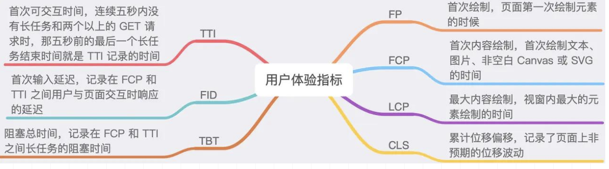
window.onload = function(){
setTimeout(function(){
let t = performance.timing
console.log('DNS查询耗时 ：' + (t.domainLookupEnd - t.domainLookupStart).toFixed(0))
console.log('TCP链接耗时 ：' + (t.connectEnd - t.connectStart).toFixed(0))
console.log('request请求耗时 ：' + (t.responseEnd - t.responseStart).toFixed(0))
console.log('解析dom树耗时 ：' + (t.domComplete - t.domInteractive).toFixed(0))
console.log('白屏时间 ：' + (t.responseStart - t.navigationStart).toFixed(0))
console.log('domready时间 ：' + (t.domContentLoadedEventEnd - t.navigationStart).toFixed(0))
console.log('onload时间 ：' + (t.loadEventEnd - t.navigationStart).toFixed(0))
if(t = performance.memory){
console.log('js内存使用占比 ：' + (t.usedJSHeapSize / t.totalJSHeapSize * 100).toFixed(2) + '%')
}
})
}
DNS预解析优化
dns解析是很耗时的，因此如果解析域名过多，会让首屏加载变得过慢，可以考虑dns-prefetch优化
DNS Prefetch 应该尽量的放在网页的前面，推荐放在 后面。具体使用方法如下：
<meta http-equiv="x-dns-prefetch-control" content="on">
<link rel="dns-prefetch" href="//www.zhix.net">
<link rel="dns-prefetch" href="//api.share.zhix.net">
<link rel="dns-prefetch" href="//bdimg.share.zhix.net">
request请求耗时
- 不请求，用cache（最好的方式就是尽量引用公共资源，同时设置缓存，不去重新请求资源，也可以运用PWA的离线缓存技术，可以帮助wep实现离线使用）
- 前端打包时压缩
- 服务器上的zip压缩
- 图片压缩（比如tiny），使用webp等高压缩比格式
- 把过大的包，拆分成多个较少的包，防止单个资源耗时过大
- 同一时间针对同一域名下的请求有一定数量限制，超过限制数目的请求会被阻塞。如果资源来自于多个域下，可以增大并行请求和下载速度
- 延迟、异步、预加载、懒加载
- 对于非首屏的资源，可以使用 defer 或 async 的方式引入
- 也可以按需加载，在逻辑中，只有执行到时才做请求
- 对于多屏页面，滚动时才动态载入图片
# 11 移动端优化
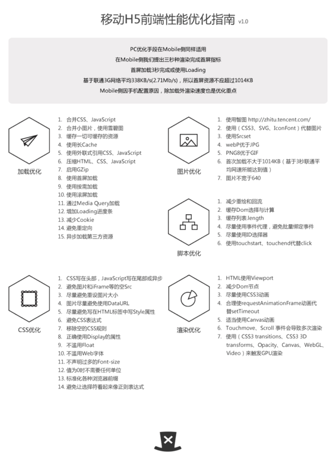
1. 概述
PC优化手段在Mobile侧同样适用- 在
Mobile侧我们提出三秒种渲染完成首屏指标 - 基于第二点，首屏加载
3秒完成或使用Loading - 基于联通3G网络平均
338KB/s(2.71Mb/s），所以首屏资源不应超过1014KB Mobile侧因手机配置原因，除加载外渲染速度也是优化重点- 基于第五点，要合理处理代码减少渲染损耗
- 基于第二、第五点，所有影响首屏加载和渲染的代码应在处理逻辑中后置
- 加载完成后用户交互使用时也需注意性能
2. 加载优化
加载过程是最为耗时的过程，可能会占到总耗时的
80%时间，因此是优化的重点
2.1 缓存
使用缓存可以减少向服务器的请求数，节省加载时间，所以所有静态资源都要在服务器端设置缓存，并且尽量使用长
Cache（长Cache资源的更新可使用时间戳）
2.2 压缩HTML、CSS、JavaScript
减少资源大小可以加快网页显示速度，所以要对
HTML、CSS、JavaScript等进行代码压缩，并在服务器端设置GZip
- a） 压缩（例如，多余的空格、换行符和缩进）
- b） 启用
GZip
2.3 无阻塞
写在
HTML头部的JavaScript（无异步），和写在HTML标签中的Style会阻塞页面的渲染，因此CSS放在页面头部并使用Link方式引入，避免在HTML标签中写Style，JavaScript放在页面尾部或使用异步方式加载
2.4 使用首屏加载
首屏的快速显示，可以大大提升用户对页面速度的感知，因此应尽量针对首屏的快速显示做优化。
2.5 按需加载
将不影响首屏的资源和当前屏幕资源不用的资源放到用户需要时才加载，可以大大提升重要资源的显示速度和降低总体流量。
PS：按需加载会导致大量重绘，影响渲染性能
- a）
LazyLoad - b） 滚屏加载
- c） 通过
Media Query加载
2.6 预加载
大型重资源页面（如游戏）可使用增加
Loading的方法，资源加载完成后再显示页面。但Loading时间过长，会造成用户流失。
对用户行为分析，可以在当前页加载下一页资源，提升速度。
- a）可感知
Loading - b）不可感知的
Loading（如提前加载下一页）
2.7 压缩图片
图片是最占流量的资源，因此尽量避免使用他，使用时选择最合适的格式（实现需求的前提下，以大小判断），合适的大小，然后使用智图压缩，同时在代码中用
Srcset来按需显示
PS：过度压缩图片大小影响图片显示效果
- a）使用智图（ http://zhitu.tencent.com/ ）
- b）使用其它方式代替图片(1. 使用
CSS32. 使用SVG3. 使用IconFont） - c）使用
Srcset - d）选择合适的图片(1.
webP优于JPG2.PNG8优于GIF） - e）选择合适的大小（1. 首次加载不大于
1014KB2. 不宽于640（基于手机屏幕一般宽度））
2.8 减少Cookie
Cookie会影响加载速度，所以静态资源域名不使用Cookie。
2.9 避免重定向
重定向会影响加载速度，所以在服务器正确设置避免重定向。
2.10 异步加载第三方资源
第三方资源不可控会影响页面的加载和显示，因此要异步加载第三方资源
2.11 减少HTTP请求
因为手机浏览器同时响应请求为4个请求（
Android支持4个，iOS5后可支持6个），所以要尽量减少页面的请求数，首次加载同时请求数不能超过4个
- a）合并
CSS、JavaScript - b）合并小图片，使用雪碧图
3. 三、脚本执行优化
脚本处理不当会阻塞页面加载、渲染，因此在使用时需当注意
CSS写在头部，JavaScript写在尾部或异步- 避免图片和
iFrame等的空Src，空Src会重新加载当前页面，影响速度和效率。 - 尽量避免重设图片大小
- 重设图片大小是指在页面、
CSS、JavaScript等中多次重置图片大小，多次重设图片大小会引发图片的多次重绘，影响性能 - 图片尽量避免使用
DataURL，DataURL图片没有使用图片的压缩算法文件会变大，并且要解码后再渲染，加载慢耗时长
4. CSS优化
尽量避免写在HTML标签中写
Style属性
4.1 css3过渡动画开启硬件加速
.translate3d{
-webkit-transform: translate3d(0, 0, 0);
-moz-transform: translate3d(0, 0, 0);
-ms-transform: translate3d(0, 0, 0);
transform: translate3d(0, 0, 0);
}
4.2 避免CSS表达式
CSS表达式的执行需跳出CSS树的渲染，因此请避免CSS表达式。
4.3 不滥用Float
Float在渲染时计算量比较大，尽量减少使用
4.4 值为0时不需要任何单位
为了浏览器的兼容性和性能，值为0时不要带单位
5. JavaScript执行优化
5.1 减少重绘和回流
- 避免不必要的Dom操作
- 尽量改变
Class而不是Style，使用classList代替className - 避免使用
document.write - 减少
drawImage
5.2 TOUCH事件优化
使用
touchstart、touchend代替click，因快影响速度快。但应注意Touch响应过快，易引发误操作
6. 渲染优化
6.1 HTML使用Viewport
Viewport可以加速页面的渲染，请使用以下代码
<meta name=”viewport” content=”width=device-width, initial-scale=1″>
6.2 动画优化
- 尽量使用
CSS3动画 - 合理使用
requestAnimationFrame动画代替setTimeout - 适当使用
Canvas动画5个元素以内使用css动画，5个以上使用Canvas动画（iOS8可使用webGL）
6.3 高频事件优化
Touchmove、Scroll事件可导致多次渲染
- 使用
requestAnimationFrame监听帧变化，使得在正确的时间进行渲染 - 增加响应变化的时间间隔，减少重绘次数
6.4 GPU加速
CSS中以下属性（CSS3 transitions、CSS3 3D transforms、Opacity、Canvas、WebGL、Video）来触发GPU渲染，请合理使用
# 八、HTTP
# 1 谈一谈HTTP协议优缺点
超文本传输协议，HTTP 是一个在计算机世界里专门在两点之间传输文字、图片、音频、视频等超文本数据的约定和规范。
- HTTP 特点
- 灵活可扩展。一个是语法上只规定了基本格式，空格分隔单词，换行分隔字段等。另外一个就是传输形式上不仅可以传输文本，还可以传输图片，视频等任意数据。
- 请求-应答模式，通常而言，就是一方发送消息，另外一方要接受消息，或者是做出相应等。
- 可靠传输，HTTP是基于TCP/IP，因此把这一特性继承了下来。
- 无状态，这个分场景回答即可。
- HTTP 缺点
- 无状态，有时候，需要保存信息，比如像购物系统，需要保留下顾客信息等等，另外一方面，有时候，无状态也会减少网络开销，比如类似直播行业这样子等，这个还是分场景来说。
- 明文传输，即协议里的报文(主要指的是头部)不使用二进制数据，而是文本形式。这让HTTP的报文信息暴露给了外界，给攻击者带来了便利。
- 队头阻塞，当http开启长连接时，共用一个
TCP连接，当某个请求时间过长时，其他的请求只能处于阻塞状态，这就是队头阻塞问题。
http 无状态无连接
http协议对于事务处理没有记忆能力- 对同一个
url请求没有上下文关系 - 每次的请求都是独立的，它的执行情况和结果与前面的请求和之后的请求是无直接关系的，它不会受前面的请求应答情况直接影响，也不会直接影响后面的请求应答情况
- 服务器中没有保存客户端的状态，客户端必须每次带上自己的状态去请求服务器
- 人生若只如初见，请求过的资源下一次会继续进行请求
http协议无状态中的 状态 到底指的是什么？！
- 【状态】的含义就是：客户端和服务器在某次会话中产生的数据
- 那么对应的【无状态】就意味着：这些数据不会被保留
- 通过增加
cookie和session机制，现在的网络请求其实是有状态的 - 在没有状态的
http协议下，服务器也一定会保留你每次网络请求对数据的修改，但这跟保留每次访问的数据是不一样的，保留的只是会话产生的结果，而没有保留会话
# 2 说一说HTTP 的请求方法
- HTTP1.0定义了三种请求方法： GET, POST 和 HEAD方法
- HTTP1.1新增了五种请求方法：OPTIONS, PUT, DELETE, TRACE 和 CONNECT
http/1.1规定了以下请求方法(注意，都是大写):
- GET： 请求获取Request-URI所标识的资源
- POST： 在Request-URI所标识的资源后附加新的数据
- HEAD： 请求获取由Request-URI所标识的资源的响应消息报头
- PUT： 请求服务器存储一个资源，并用Request-URI作为其标识（修改数据）
- DELETE： 请求服务器删除对应所标识的资源
- TRACE： 请求服务器回送收到的请求信息，主要用于测试或诊断
- CONNECT： 建立连接隧道，用于代理服务器
- OPTIONS： 列出可对资源实行的请求方法，用来跨域请求
从应用场景角度来看，Get 多用于无副作用，幂等的场景，例如搜索关键字。Post 多用于副作用，不幂等的场景，例如注册。
options 方法有什么用
- OPTIONS 请求与 HEAD 类似，一般也是用于客户端查看服务器的性能。
- 这个方法会请求服务器返回该资源所支持的所有 HTTP 请求方法，该方法会用'*'来代替资源名称，向服务器发送 OPTIONS 请求，可以测试服务器功能是否正常。
- JS 的 XMLHttpRequest对象进行 CORS 跨域资源共享时，对于复杂请求，就是使用 OPTIONS 方法发送嗅探请求，以判断是否有对指定资源的访问权限。
# 3 谈一谈GET 和 POST 的区别
本质上，只是语义上的区别，GET 用于获取资源，POST 用于提交资源。
具体差别👇
- 从缓存角度看，GET 请求后浏览器会主动缓存，POST 默认情况下不能。
- 从参数角度来看，GET请求一般放在URL中，因此不安全，POST请求放在请求体中，相对而言较为安全，但是在抓包的情况下都是一样的。
- 从编码角度看，GET请求只能经行URL编码，只能接受ASCII码，而POST支持更多的编码类型且不对数据类型限值。
- GET请求幂等，POST请求不幂等，幂等指发送 M 和 N 次请求（两者不相同且都大于1），服务器上资源的状态一致。
- GET请求会一次性发送请求报文，POST请求通常分为两个TCP数据包，首先发 header 部分，如果服务器响应 100(continue)， 然后发 body 部分。
# 4 谈一谈队头阻塞问题
什么是队头阻塞？
对于每一个HTTP请求而言，这些任务是会被放入一个任务队列中串行执行的，一旦队首任务请求太慢时，就会阻塞后面的请求处理，这就是HTTP队头阻塞问题。
有什么解决办法吗👇
并发连接
我们知道对于一个域名而言，是允许分配多个长连接的，那么可以理解成增加了任务队列，也就是说不会导致一个任务阻塞了该任务队列的其他任务，在
RFC规范中规定客户端最多并发2个连接，不过实际情况就是要比这个还要多，举个例子，Chrome中是6个。
域名分片
- 顾名思义，我们可以在一个域名下分出多个二级域名出来，而它们最终指向的还是同一个服务器，这样子的话就可以并发处理的任务队列更多，也更好的解决了队头阻塞的问题。
- 举个例子，比如
TianTian.com，可以分出很多二级域名，比如Day1.TianTian.com，Day2.TianTian.com,Day3.TianTian.com,这样子就可以有效解决队头阻塞问题。
# 5 谈一谈HTTP数据传输
大概遇到的情况就分为定长数据 与 不定长数据的处理吧。
定长数据
对于定长的数据包而言，发送端在发送数据的过程中，需要设置Content-Length,来指明发送数据的长度。
当然了如果采用了Gzip压缩的话，Content-Length设置的就是压缩后的传输长度。
我们还需要知道的是👇
Content-Length如果存在并且有效的话，则必须和消息内容的传输长度完全一致，也就是说，如果过短就会截断，过长的话，就会导致超时。- 如果采用短链接的话，直接可以通过服务器关闭连接来确定消息的传输长度。
- 那么在HTTP/1.0之前的版本中，Content-Length字段可有可无,因为一旦服务器关闭连接，我们就可以获取到传输数据的长度了。
- 在HTTP/1.1版本中，如果是Keep-alive的话，chunked优先级高于
Content-Length,若是非Keep-alive，跟前面情况一样，Content-Length可有可无。
那怎么来设置Content-Length
举个例子来看看👇
const server = require('http').createServer();
server.on('request', (req, res) => {
if(req.url === '/index') {
// 设置数据类型
res.setHeader('Content-Type', 'text/plain');
res.setHeader('Content-Length', 10);
res.write("你好，使用的是Content-Length设置传输数据形式");
}
})
server.listen(3000, () => {
console.log("成功启动--TinaTian");
})
不定长数据
现在采用最多的就是HTTP/1.1版本，来完成传输数据，在保存Keep-alive状态下，当数据是不定长的时候，我们需要设置新的头部字段👇
Transfer-Encoding: chunked
通过chunked机制，可以完成对不定长数据的处理，当然了，你需要知道的是
- 如果头部信息中有
Transfer-Encoding,优先采用Transfer-Encoding里面的方法来找到对应的长度。 - 如果设置了Transfer-Encoding，那么Content-Length将被忽视。
- 使用长连接的话，会持续的推送动态内容。
那我们来模拟一下吧👇
const server = require('http').createServer();
server.on('request', (req, res) => {
if(req.url === '/index') {
// 设置数据类型
res.setHeader('Content-Type', 'text/html; charset=utf8');
res.setHeader('Content-Length', 10);
res.setHeader('Transfer-Encoding', 'chunked');
res.write("你好，使用的是Transfer-Encoding设置传输数据形式");
setTimeout(() => {
res.write("第一次传输数据给您<br/>");
}, 1000);
res.write("骚等一下");
setTimeout(() => {
res.write("第一次传输数据给您");
res.end()
}, 3000);
}
})
server.listen(3000, () => {
console.log("成功启动--TinaTian");
})
上面使用的是nodejs中
http模块，有兴趣的小伙伴可以去试一试，以上就是HTTP对定长数据和不定长数据传输过程中的处理手段。
# 6 cookie 和 session
session： 是一个抽象概念，开发者为了实现中断和继续等操作，将user agent和server之间一对一的交互，抽象为“会话”，进而衍生出“会话状态”，也就是session的概念cookie：它是一个世纪存在的东西，http协议中定义在header中的字段，可以认为是session的一种后端无状态实现
现在我们常说的
session，是为了绕开cookie的各种限制，通常借助cookie本身和后端存储实现的，一种更高级的会话状态实现
session 的常见实现要借助cookie来发送 sessionID
# 7 介绍一下HTTPS和HTTP区别
HTTPS 要比 HTTPS 多了 secure 安全性这个概念，实际上， HTTPS 并不是一个新的应用层协议，它其实就是 HTTP + TLS/SSL 协议组合而成，而安全性的保证正是 SSL/TLS 所做的工作。
SSL
安全套接层（Secure Sockets Layer）
TLS
（传输层安全，Transport Layer Security）
现在主流的版本是 TLS/1.2, 之前的 TLS1.0、TLS1.1 都被认为是不安全的，在不久的将来会被完全淘汰。
HTTPS 就是身披了一层 SSL 的 HTTP。
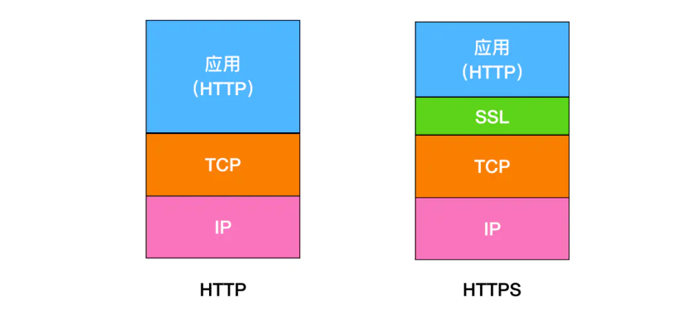
那么区别有哪些呢👇
- HTTP 是明文传输协议，HTTPS 协议是由 SSL+HTTP 协议构建的可进行加密传输、身份认证的网络协议，比 HTTP 协议安全。
- HTTPS比HTTP更加安全，对搜索引擎更友好，利于SEO,谷歌、百度优先索引HTTPS网页。
- HTTPS标准端口443，HTTP标准端口80。
- HTTPS需要用到SSL证书，而HTTP不用。
我觉得记住以下两点HTTPS主要作用就行👇
- 对数据进行加密，并建立一个信息安全通道，来保证传输过程中的数据安全;
- 对网站服务器进行真实身份认证。
# 8 HTTPS握手过程
- 第一步，客户端给出协议版本号、一个客户端生成的随机数（Client random），以及客户端支持的加密方法
- 第二步，服务端确认双方使用的加密方法，并给出数字证书、以及一个服务器生成的随机数
- 第三步，客户端确认数字证书有效，然后生成一个新的随机数（Premaster secret），并使用数字证书中的公钥，加密这个随机数，发给服务端
- 第四步，服务端使用自己的私钥，获取客户端发来的随机数（即Premaster secret）。
- 第五步，客户端和服务端根据约定的加密方法，使用前面的三个随机数，生成"对话密钥"（session key），用来加密接下来的整个对话过程
总结
- 客户端发起 HTTPS 请求，服务端返回证书，客户端对证书进行验证，验证通过后本地生成用于构造对称加密算法的随机数
- 通过证书中的公钥对随机数进行加密传输到服务端（随机对称密钥），服务端接收后通过私钥解密得到随机对称密钥，之后的数据交互通过对称加密算法进行加解密。（既有对称加密，也有非对称加密）
# 9 介绍一个HTTPS工作原理
我们可以把HTTPS理解成HTTPS = HTTP + SSL/TLS
TLS/SSL 的功能实现主要依赖于三类基本算法：
散列函数、对称加密和非对称加密，其利用非对称加密实现身份认证和密钥协商，对称加密算法采用协商的密钥对数据加密，基于散列函数验证信息的完整性。
1. 对称加密
加密和解密用同一个秘钥的加密方式叫做对称加密。Client客户端和Server端共用一套密钥，这样子的加密过程似乎很让人理解，但是随之会产生一些问题。
问题一: WWW万维网有许许多多的客户端，不可能都用秘钥A进行信息加密，这样子很不合理，所以解决办法就是使用一个客户端使用一个密钥进行加密。
问题二:既然不同的客户端使用不同的密钥，那么对称加密的密钥如何传输？ 那么解决的办法只能是一端生成一个秘钥，然后通过HTTP传输给另一端，那么这样子又会产生新的问题。
问题三: 这个传输密钥的过程，又如何保证加密？如果被中间人拦截，密钥也会被获取, 那么你会说对密钥再进行加密，那又怎么保存对密钥加密的过程，是加密的过程？
到这里，我们似乎想明白了，使用对称加密的方式，行不通，所以我们需要采用非对称加密👇
2. 非对称加密
通过上面的分析，对称加密的方式行不通，那么我们来梳理一下非对称加密。采用的算法是RSA，所以在一些文章中也会看见传统RSA握手，基于现在TLS主流版本是1.2，所以接下来梳理的是TLS/1.2握手过程。
非对称加密中，我们需要明确的点是👇
- 有一对秘钥，公钥和私钥。
- 公钥加密的内容，只有私钥可以解开，私钥加密的内容，所有的公钥都可以解开，这里说的公钥都可以解开，指的是一对秘钥。
- 公钥可以发送给所有的客户端，私钥只保存在服务器端。
3. 主要工作流程
梳理起来，可以把TLS 1.2 握手过程分为主要的五步👇
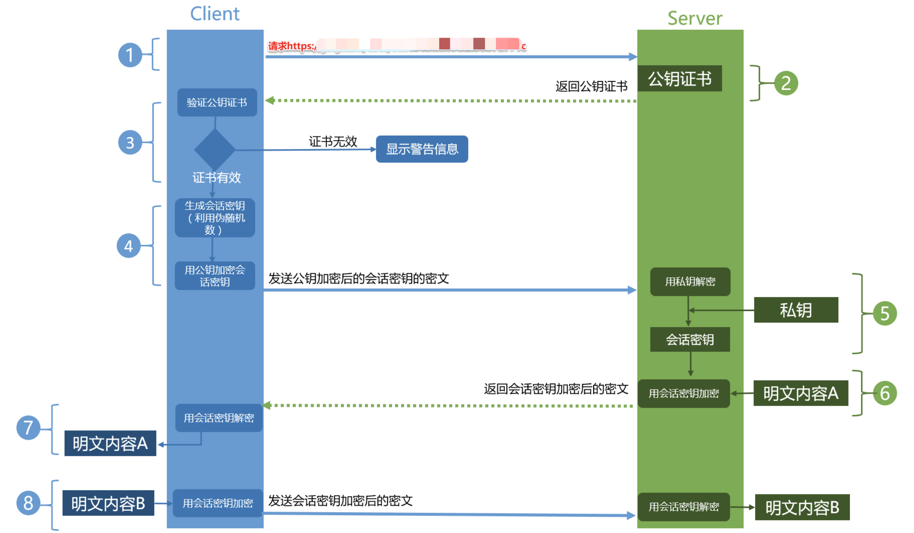
- 步骤一：Client发起一个HTTPS请求，连接443端口。这个过程可以理解成是请求公钥的过程。
- 步骤二：Server端收到请求后，通过第三方机构私钥加密，会把数字证书（也可以认为是公钥证书）发送给Client。
- 步骤三：
- 浏览器安装后会自动带一些权威第三方机构公钥，使用匹配的公钥对数字签名进行解密。
- 根据签名生成的规则对网站信息进行本地签名生成，然后两者比对。
- 通过比对两者签名，匹配则说明认证通过，不匹配则获取证书失败。
- 步骤四：在安全拿到服务器公钥后，客户端Client随机生成一个对称密钥，使用服务器公钥（证书的公钥）加密这个对称密钥，发送给Server(服务器)。
- 步骤五：Server(服务器)通过自己的私钥，对信息解密，至此得到了对称密钥，此时两者都拥有了相同的对称密钥。
接下来，就可以通过该对称密钥对传输的信息加密/解密啦，从上面图举个例子👇
- Client用户使用该对称密钥加密'明文内容B',发送给Server(服务器)
- Server使用该对称密钥进行解密消息，得到明文内容B。
接下来考虑一个问题，如果公钥被中间人拿到纂改怎么办呢？
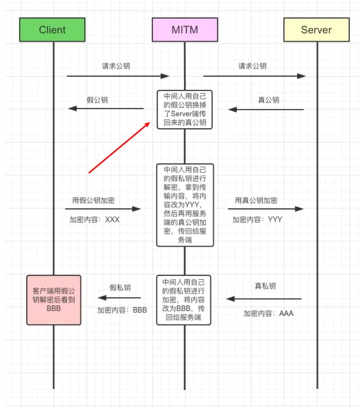
客户端可能拿到的公钥是假的，解决办法是什么呢？
3. 第三方认证
客户端无法识别传回公钥是中间人的，还是服务器的，这是问题的根本，我们是不是可以通过某种规范可以让客户端和服务器都遵循某种约定呢？那就是通过第三方认证的方式
在HTTPS中，通过 证书 + 数字签名来解决这个问题。

这里唯一不同的是，假设对网站信息加密的算法是MD5，通过MD5加密后，然后通过第三方机构的私钥再次对其加密，生成数字签名。
这样子的话，数字证书包含有两个特别重要的信息👉某网站公钥+数字签名
我们再次假设中间人截取到服务器的公钥后，去替换成自己的公钥，因为有数字签名的存在，这样子客户端验证发现数字签名不匹配，这样子就防止中间人替换公钥的问题。
那么客户端是如何去对比两者数字签名的呢？
- 浏览器会去安装一些比较权威的第三方认证机构的公钥，比如VeriSign、Symantec以及GlobalSign等等。
- 验证数字签名的时候，会直接从本地拿到相应的第三方的公钥，对私钥加密后的数字签名进行解密得到真正的签名。
- 然后客户端利用签名生成规则进行签名生成，看两个签名是否匹配，如果匹配认证通过，不匹配则获取证书失败。
4. 数字签名作用
数字签名：将网站的信息，通过特定的算法加密，比如MD5,加密之后，再通过服务器的私钥进行加密，形成加密后的数字签名。
第三方认证机构是一个公开的平台，中间人可以去获取。
如果没有数字签名的话，这样子可以就会有下面情况👇
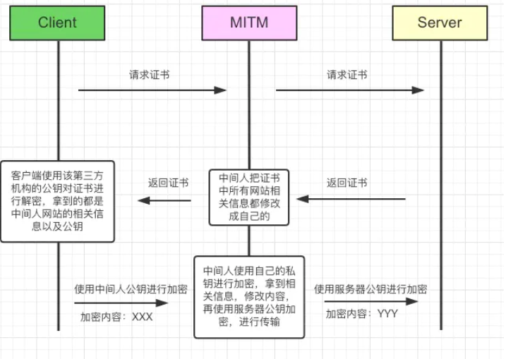
从上面我们知道，如果只是对网站信息进行第三方机构私钥加密的话，还是会受到欺骗。
因为没有认证，所以中间人也向第三方认证机构进行申请，然后拦截后把所有的信息都替换成自己的，客户端仍然可以解密，并且无法判断这是服务器的还是中间人的，最后造成数据泄露。
5. 总结
- HTTPS就是使用SSL/TLS协议进行加密传输
- 大致流程：客户端拿到服务器的公钥（是正确的），然后客户端随机生成一个对称加密的秘钥，使用该公钥加密，传输给服务端，服务端再通过解密拿到该对称秘钥，后续的所有信息都通过该对称秘钥进行加密解密，完成整个HTTPS的流程。
- 第三方认证，最重要的是数字签名，避免了获取的公钥是中间人的。
# 10 SSL 连接断开后如何恢复
一共有两种方法来恢复断开的 SSL 连接，一种是使用 session ID，一种是 session ticket。
通过session ID
使用 session ID 的方式，每一次的会话都有一个编号，当对话中断后，下一次重新连接时，只要客户端给出这个编号，服务器如果有这个编号的记录，那么双方就可以继续使用以前的秘钥，而不用重新生成一把。目前所有的浏览器都支持这一种方法。但是这种方法有一个缺点是，session ID 只能够存在一台服务器上，如果我们的请求通过负载平衡被转移到了其他的服务器上，那么就无法恢复对话。
通过session ticket
另一种方式是 session ticket 的方式，session ticket 是服务器在上一次对话中发送给客户的，这个 ticket 是加密的，只有服务器能够解密，里面包含了本次会话的信息，比如对话秘钥和加密方法等。这样不管我们的请求是否转移到其他的服务器上，当服务器将 ticket 解密以后，就能够获取上次对话的信息，就不用重新生成对话秘钥了。
# 11 谈一谈你对HTTP/2理解
首先补充一下，http 和 https 的区别，相比于 http,https 是基于 ssl 加密的 http 协议
简要概括:http2.0 是基于 1999 年发布的 http1.0 之后的首次更新
- 提升访问速度(可以对于，请求资源所需时间更少，访问速度更快，相比 http1.0)
- 允许多路复用:多路复用允许同时通过单一的 HTTP/2 连接发送多重请求-响应信息。改 善了:在
http1.1中，浏览器客户端在同一时间，针对同一域名下的请求有一定数量限 制(连接数量)，超过限制会被阻塞 - 二进制分帧:HTTP2.0 会将所有的传输信息分割为更小的信息或者帧，并对他们进行二 进制编码
- 首部压缩
- 服务器端推送
头部压缩
HTTP 1.1版本会出现 User-Agent、Cookie、Accept、Server、Range 等字段可能会占用几百甚至几千字节，而 Body 却经常只有几十字节，所以导致头部偏重。
HTTP 2.0 使用 HPACK 算法进行压缩。
多路复用
- HTTP 1.x 中，如果想并发多个请求，必须使用多个 TCP 链接，且浏览器为了控制资源，还会对单个域名有 6-8个的TCP链接请求限制。
HTTP2中：
- 同域名下所有通信都在单个连接上完成。
- 单个连接可以承载任意数量的双向数据流。
- 数据流以消息的形式发送，而消息又由一个或多个帧组成，多个帧之间可以乱序发送，因为根据帧首部的流标识可以重新组装，也就是
Stream ID，流标识符，有了它，接收方就能从乱序的二进制帧中选择ID相同的帧，按照顺序组装成请求/响应报文。
服务器推送
浏览器发送一个请求，服务器主动向浏览器推送与这个请求相关的资源，这样浏览器就不用发起后续请求。
相比较http/1.1的优势👇
- 推送资源可以由不同页面共享
- 服务器可以按照优先级推送资源
- 客户端可以缓存推送的资源
- 客户端可以拒收推送过来的资源
二进制分帧
之前是明文传输，不方便计算机解析，对于回车换行符来说到底是内容还是分隔符，都需要内部状态机去识别，这样子效率低，HTTP/2采用二进制格式，全部传输01串，便于机器解码。
这样子一个报文格式就被拆分为一个个二进制帧，用Headers帧存放头部字段，Data帧存放请求体数据。这样子的话，就是一堆乱序的二进制帧，它们不存在先后关系，因此不需要排队等待，解决了HTTP队头阻塞问题。
在客户端与服务器之间，双方都可以互相发送二进制帧，这样子双向传输的序列，称为流，所以HTTP/2中以流来表示一个TCP连接上进行多个数据帧的通信，这就是多路复用概念。
那乱序的二进制帧，是如何组装成对于的报文呢？
- 所谓的乱序，值的是不同ID的Stream是乱序的，对于同一个Stream ID的帧是按顺序传输的。
- 接收方收到二进制帧后，将相同的Stream ID组装成完整的请求报文和响应报文。
- 二进制帧中有一些字段，控制着
优先级和流量控制等功能，这样子的话，就可以设置数据帧的优先级，让服务器处理重要资源，优化用户体验。
# 12 HTTP/1.0 HTTP1.1 HTTP2.0版本之间的差异
- HTTP 0.9：1991年,原型版本，功能简陋，只有一个命令GET,只支持纯文本内容，该版本已过时。
- HTTP 1.0
- 任何格式的内容都可以发送，这使得互联网不仅可以传输文字，还能传输图像、视频、二进制等文件。
- 除了GET命令，还引入了POST命令和HEAD命令。
- http请求和回应的格式改变，除了数据部分，每次通信都必须包括头信息（HTTP header），用来描述一些元数据。
- 只使用 header 中的 If-Modified-Since 和 Expires 作为缓存失效的标准。
- 不支持断点续传，也就是说，每次都会传送全部的页面和数据。
- 通常每台计算机只能绑定一个 IP，所以请求消息中的 URL 并没有传递主机名（hostname）
- HTTP 1.1 http1.1是目前最为主流的http协议版本，从1999年发布至今，仍是主流的http协议版本。
- 引入了持久连接（ persistent connection），即TCP连接默认不关闭，可以被多个请求复用，不用声明Connection: keep-alive。长连接的连接时长可以通过请求头中的
keep-alive来设置 - 引入了管道机制（ pipelining），即在同一个TCP连接里，客户端可以同时发送多个 请求，进一步改进了HTTP协议的效率。
- HTTP 1.1 中新增加了 E-tag，If-Unmodified-Since, If-Match, If-None-Match 等缓存控制标头来控制缓存失效。
- 支持断点续传，通过使用请求头中的
Range来实现。 - 使用了虚拟网络，在一台物理服务器上可以存在多个虚拟主机（Multi-homed Web Servers），并且它们共享一个IP地址。
- 新增方法：PUT、 PATCH、 OPTIONS、 DELETE。
- 引入了持久连接（ persistent connection），即TCP连接默认不关闭，可以被多个请求复用，不用声明Connection: keep-alive。长连接的连接时长可以通过请求头中的
- http1.x版本问题
- 在传输数据过程中，所有内容都是明文，客户端和服务器端都无法验证对方的身份，无法保证数据的安全性。
- HTTP/1.1 版本默认允许复用TCP连接，但是在同一个TCP连接里，所有数据通信是按次序进行的，服务器通常在处理完一个回应后，才会继续去处理下一个，这样子就会造成队头阻塞。
- http/1.x 版本支持Keep-alive，用此方案来弥补创建多次连接产生的延迟，但是同样会给服务器带来压力，并且的话，对于单文件被不断请求的服务，Keep-alive会极大影响性能，因为它在文件被请求之后还保持了不必要的连接很长时间。
- HTTP 2.0
二进制分帧这是一次彻底的二进制协议，头信息和数据体都是二进制，并且统称为"帧"：头信息帧和数据帧。头部压缩HTTP 1.1版本会出现 User-Agent、Cookie、Accept、Server、Range 等字段可能会占用几百甚至几千字节，而 Body 却经常只有几十字节，所以导致头部偏重。HTTP 2.0 使用HPACK算法进行压缩。多路复用复用TCP连接，在一个连接里，客户端和浏览器都可以同时发送多个请求或回应，且不用按顺序一一对应，这样子解决了队头阻塞的问题。服务器推送允许服务器未经请求，主动向客户端发送资源，即服务器推送。请求优先级可以设置数据帧的优先级，让服务端先处理重要资源，优化用户体验。
# 13 DNS如何工作的
DNS 协议提供的是一种主机名到 IP 地址的转换服务，就是我们常说的域名系统。是应用层协议，通常该协议运行在UDP协议之上，使用的是53端口号。
我们通过一张图来看看它的查询过程吧👇

这张图很生动的展示了DNS在本地DNS服务器是如何查询的，一般向本地DNS服务器发送请求是递归查询的
本地 DNS 服务器向其他域名服务器请求的过程是迭代查询的过程👇

递归查询和迭代查询
- 递归查询指的是查询请求发出后，域名服务器代为向下一级域名服务器发出请求，最后向用户返回查询的最终结果。使用递归 查询，用户只需要发出一次查询请求。
- 迭代查询指的是查询请求后，域名服务器返回单次查询的结果。下一级的查询由用户自己请求。使用迭代查询，用户需要发出 多次的查询请求。
所以一般而言，本地服务器查询是递归查询，而本地 DNS 服务器向其他域名服务器请求的过程是迭代查询的过程
DNS缓存
缓存也很好理解，在一个请求中，当某个DNS服务器收到一个DNS回答后，它能够回答中的信息缓存在本地存储器中。返回的资源记录中的 TTL 代表了该条记录的缓存的时间。
DNS实现负载平衡
它是如何实现负载均衡的呢？首先我们得清楚DNS 是可以用于在冗余的服务器上实现负载平衡。
**原因：**这是因为一般的大型网站使用多台服务器提供服务，因此一个域名可能会对应 多个服务器地址。
举个例子来说👇
- 当用户发起网站域名的 DNS 请求的时候，DNS 服务器返回这个域名所对应的服务器 IP 地址的集合
- 在每个回答中，会循环这些 IP 地址的顺序，用户一般会选择排在前面的地址发送请求。
- 以此将用户的请求均衡的分配到各个不同的服务器上，这样来实现负载均衡。
DNS 为什么使用 UDP 协议作为传输层协议？
DNS 使用 UDP 协议作为传输层协议的主要原因是为了避免使用 TCP 协议时造成的连接时延
- 为了得到一个域名的 IP 地址，往往会向多个域名服务器查询，如果使用 TCP 协议，那么每次请求都会存在连接时延，这样使 DNS 服务变得很慢。
- 大多数的地址查询请求，都是浏览器请求页面时发出的，这样会造成网页的等待时间过长。
总结
- DNS域名系统，是应用层协议，运行UDP协议之上，使用端口43。
- 查询过程，本地查询是递归查询，依次通过浏览器缓存
—>>本地hosts文件—>>本地DNS解析器—>>本地DNS服务器—>>其他域名服务器请求。 接下来的过程就是迭代过程。 - 递归查询一般而言，发送一次请求就够，迭代过程需要用户发送多次请求。
# 14 短轮询、长轮询和 WebSocket 间的区别
1. 短轮询
短轮询的基本思路:
- 浏览器每隔一段时间向浏览器发送 http 请求，服务器端在收到请求后，不论是否有数据更新，都直接进行 响应。
- 这种方式实现的即时通信，本质上还是浏览器发送请求，服务器接受请求的一个过程，通过让客户端不断的进行请求，使得客户端能够模拟实时地收到服务器端的数据的变化。
优缺点👇
- 优点是比较简单，易于理解。
- 缺点是这种方式由于需要不断的建立 http 连接，严重浪费了服务器端和客户端的资源。当用户增加时，服务器端的压力就会变大，这是很不合理的。
2. 长轮询
长轮询的基本思路:
- 首先由客户端向服务器发起请求，当服务器收到客户端发来的请求后，服务器端不会直接进行响应，而是先将 这个请求挂起，然后判断服务器端数据是否有更新。
- 如果有更新，则进行响应，如果一直没有数据，则到达一定的时间限制才返回。客户端 JavaScript 响应处理函数会在处理完服务器返回的信息后，再次发出请求，重新建立连接。
优缺点👇
- 长轮询和短轮询比起来，它的优点是明显减少了很多不必要的 http 请求次数，相比之下节约了资源。
- 长轮询的缺点在于，连接挂起也会导致资源的浪费
3. WebSocket
- WebSocket 是 Html5 定义的一个新协议，与传统的 http 协议不同，该协议允许由服务器主动的向客户端推送信息。
- 使用 WebSocket 协议的缺点是在服务器端的配置比较复杂。WebSocket 是一个全双工的协议，也就是通信双方是平等的，可以相互发送消息。
# 15 说一说正向代理和反向代理
正向代理
我们常说的代理也就是指正向代理，正向代理的过程，它隐藏了真实的请求客户端，服务端不知道真实的客户端是谁，客户端请求的服务都被代理服务器代替来请求。
反向代理
这种代理模式下，它隐藏了真实的服务端，当我们向一个网站发起请求的时候，背后可能有成千上万台服务器为我们服务，具体是哪一台，我们不清楚，我们只需要知道反向代理服务器是谁就行，而且反向代理服务器会帮我们把请求转发到真实的服务器那里去，一般而言反向代理服务器一般用来实现负载平衡。
负载平衡的两种实现方式？
- 一种是使用反向代理的方式，用户的请求都发送到反向代理服务上，然后由反向代理服务器来转发请求到真实的服务器上，以此来实现集群的负载平衡。
- 另一种是 DNS 的方式，DNS 可以用于在冗余的服务器上实现负载平衡。因为现在一般的大型网站使用多台服务器提供服务，因此一个域名可能会对应多个服务器地址。当用户向网站域名请求的时候，DNS 服务器返回这个域名所对应的服务器 IP 地址的集合，但在每个回答中，会循环这些 IP 地址的顺序，用户一般会选择排在前面的地址发送请求。以此将用户的请求均衡的分配到各个不同的服务器上，这样来实现负载均衡。这种方式有一个缺点就是，由于 DNS 服务器中存在缓存，所以有可能一个服务器出现故障后，域名解析仍然返回的是那个 IP 地址，就会造成访问的问题。
# 16 介绍一下Connection:keep-alive
什么是keep-alive
我们知道HTTP协议采用“请求-应答”模式，当使用普通模式，即非KeepAlive模式时，每个请求/应答客户和服务器都要新建一个连接，完成 之后立即断开连接（HTTP协议为无连接的协议）；
当使用Keep-Alive模式（又称持久连接、连接重用）时，Keep-Alive功能使客户端到服 务器端的连接持续有效，当出现对服务器的后继请求时，Keep-Alive功能避免了建立或者重新建立连接。
为什么要使用keep-alive
keep-alive技术的创建目的，能在多次HTTP之前重用同一个TCP连接，从而减少创建/关闭多个 TCP 连接的开销（包括响应时间、CPU 资源、减少拥堵等），参考如下示意图

客户端如何开启
在HTTP/1.0协议中，默认是关闭的，需要在http头加入"Connection: Keep-Alive”，才能启用Keep-Alive；
Connection: keep-alive
http 1.1中默认启用Keep-Alive，如果加入"Connection: close “，才关闭。
Connection: close
目前大部分浏览器都是用http1.1协议，也就是说默认都会发起Keep-Alive的连接请求了，所以是否能完成一个完整的Keep- Alive连接就看服务器设置情况。
# 17 http/https 协议总结
1.0 协议缺陷:
- 无法复用链接，完成即断开，重新慢启动和
TCP 3次握手 head of line blocking: 线头阻塞，导致请求之间互相影响
1.1 改进:
- 长连接(默认
keep-alive)，复用 host字段指定对应的虚拟站点- 新增功能:
- 断点续传
- 身份认证
- 状态管理
cache缓存Cache-ControlExpiresLast-ModifiedEtag
2.0:
- 多路复用
- 二进制分帧层: 应用层和传输层之间
- 首部压缩
- 服务端推送
https: 较为安全的网络传输协议
- 证书(公钥)
SSL加密- 端口
443
TCP:
- 三次握手
- 四次挥手
- 滑动窗口: 流量控制
- 拥塞处理
- 慢开始
- 拥塞避免
- 快速重传
- 快速恢复
缓存策略: 可分为 强缓存 和 协商缓存
Cache-Control/Expires: 浏览器判断缓存是否过期，未过期时，直接使用强缓存，Cache-Control的max-age优先级高于Expires- 当缓存已经过期时，使用协商缓存
- 唯一标识方案:
Etag(response携带) &If-None-Match(request携带，上一次返回的Etag): 服务器判断资源是否被修改 - 最后一次修改时间:
Last-Modified(response) & If-Modified-Since(request，上一次返回的Last-Modified)- 如果一致，则直接返回 304 通知浏览器使用缓存
- 如不一致，则服务端返回新的资源
- 唯一标识方案:
Last-Modified缺点：- 周期性修改，但内容未变时，会导致缓存失效
- 最小粒度只到
s，s以内的改动无法检测到
Etag的优先级高于Last-Modified
# 18 TCP为什么要三次握手
客户端和服务端都需要直到各自可收发，因此需要三次握手

TCP有6种标示:SYN(建立联机) ACK(确认) PSH(传送) FIN(结束) RST(重置) URG(紧急)
举例：已失效的连接请求报文段
client发送了第一个连接的请求报文，但是由于网络不好，这个请求没有立即到达服务端，而是在某个网络节点中滞留了，直到某个时间才到达server- 本来这已经是一个失效的报文，但是
server端接收到这个请求报文后，还是会想client发出确认的报文，表示同意连接。 - 假如不采用三次握手，那么只要
server发出确认，新的建立就连接了，但其实这个请求是失效的请求，client是不会理睬server的确认信息，也不会向服务端发送确认的请求 - 但是
server认为新的连接已经建立起来了，并一直等待client发来数据，这样，server的很多资源就没白白浪费掉了 - 采用三次握手就是为了防止这种情况的发生，server会因为收不到确认的报文，就知道
client并没有建立连接。这就是三次握手的作用
三次握手过程中可以携带数据吗
- 第一次、第二次握手不可以携带数据，因为一握二握时还没有建立连接，会让服务器容易受到攻击
- 而第三次握手，此时客户端已经处于
ESTABLISHED (已建立连接状态)，对于客户端来说，已经建立起连接了，并且也已经知道服务器的接收、发送能力是正常的了，所以能携带数据也是没问题的。
TCP的四次挥手
为了确保数据能够完成传输
- 关闭连接时，当收到对方的FIN报文通知时，它仅仅表示对方没有数据发送给你了；但未必你所有的数据都全部发送给对方了
- 所以你未必会马上关闭
SOCKET,也即你可能还需要发送一些数据给对方之后，再发送FIN报文给对方来表示你同意现在可以关闭连接了，所以它这里的ACK报文和FIN报文多数情况下都是分开发送的。
# 九、9种前端常见的设计模式
# 1. 外观模式
外观模式是最常见的设计模式之一，它为子系统中的一组接口提供一个统一的高层接口，使子系统更容易使用。简而言之外观设计模式就是把多个子系统中复杂逻辑进行抽象，从而提供一个更统一、更简洁、更易用的API。很多我们常用的框架和库基本都遵循了外观设计模式，比如JQuery就把复杂的原生DOM操作进行了抽象和封装，并消除了浏览器之间的兼容问题，从而提供了一个更高级更易用的版本。其实在平时工作中我们也会经常用到外观模式进行开发，只是我们不自知而已
兼容浏览器事件绑定
let addMyEvent = function (el, ev, fn) {
if (el.addEventListener) {
el.addEventListener(ev, fn, false)
} else if (el.attachEvent) {
el.attachEvent('on' + ev, fn)
} else {
el['on' + ev] = fn
}
};
封装接口
let myEvent = {
// ...
stop: e => {
e.stopPropagation();
e.preventDefault();
}
};
场景
- 设计初期，应该要有意识地将不同的两个层分离，比如经典的三层结构，在数据访问层和业务逻辑层、业务逻辑层和表示层之间建立外观Facade
- 在开发阶段，子系统往往因为不断的重构演化而变得越来越复杂，增加外观Facade可以提供一个简单的接口，减少他们之间的依赖。
- 在维护一个遗留的大型系统时，可能这个系统已经很难维护了，这时候使用外观Facade也是非常合适的，为系系统开发一个外观Facade类，为设计粗糙和高度复杂的遗留代码提供比较清晰的接口，让新系统和Facade对象交互，Facade与遗留代码交互所有的复杂工作。
优点
- 减少系统相互依赖。
- 提高灵活性。
- 提高了安全性
缺点
不符合开闭原则，如果要改东西很麻烦，继承重写都不合适。
# 2. 代理模式
是为一个对象提供一个代用品或占位符，以便控制对它的访问
假设当A 在心情好的时候收到花，小明表白成功的几率有60%，而当A 在心情差的时候收到花，小明表白的成功率无限趋近于0。小明跟A 刚刚认识两天，还无法辨别A 什么时候心情好。如果不合时宜地把花送给A，花被直接扔掉的可能性很大，这束花可是小明吃了7 天泡面换来的。但是A 的朋友B 却很了解A，所以小明只管把花交给B，B 会监听A 的心情变化，然后选择A 心情好的时候把花转交给A，代码如下：
let Flower = function() {}
let xiaoming = {
sendFlower: function(target) {
let flower = new Flower()
target.receiveFlower(flower)
}
}
let B = {
receiveFlower: function(flower) {
A.listenGoodMood(function() {
A.receiveFlower(flower)
})
}
}
let A = {
receiveFlower: function(flower) {
console.log('收到花'+ flower)
},
listenGoodMood: function(fn) {
setTimeout(function() {
fn()
}, 1000)
}
}
xiaoming.sendFlower(B)
场景
HTML元 素事件代理
<ul id="ul">
<li>1</li>
<li>2</li>
<li>3</li>
</ul>
<script>
let ul = document.querySelector('#ul');
ul.addEventListener('click', event => {
console.log(event.target);
});
</script>
优点
- 代理模式能将代理对象与被调用对象分离，降低了系统的耦合度。代理模式在客户端和目标对象之间起到一个中介作用，这样可以起到保护目标对象的作用
- 代理对象可以扩展目标对象的功能；通过修改代理对象就可以了，符合开闭原则；
缺点
处理请求速度可能有差别，非直接访问存在开销
# 3. 工厂模式
工厂模式定义一个用于创建对象的接口，这个接口由子类决定实例化哪一个类。该模式使一个类的实例化延迟到了子类。而子类可以重写接口方法以便创建的时候指定自己的对象类型。
class Product {
constructor(name) {
this.name = name
}
init() {
console.log('init')
}
fun() {
console.log('fun')
}
}
class Factory {
create(name) {
return new Product(name)
}
}
// use
let factory = new Factory()
let p = factory.create('p1')
p.init()
p.fun()
场景
- 如果你不想让某个子系统与较大的那个对象之间形成强耦合，而是想运行时从许多子系统中进行挑选的话，那么工厂模式是一个理想的选择
- 将new操作简单封装，遇到new的时候就应该考虑是否用工厂模式；
- 需要依赖具体环境创建不同实例，这些实例都有相同的行为,这时候我们可以使用工厂模式，简化实现的过程，同时也可以减少每种对象所需的代码量，有利于消除对象间的耦合，提供更大的灵活性
优点
- 创建对象的过程可能很复杂，但我们只需要关心创建结果。
- 构造函数和创建者分离, 符合“开闭原则”
- 一个调用者想创建一个对象，只要知道其名称就可以了。
- 扩展性高，如果想增加一个产品，只要扩展一个工厂类就可以。
缺点
- 添加新产品时，需要编写新的具体产品类,一定程度上增加了系统的复杂度
- 考虑到系统的可扩展性，需要引入抽象层，在客户端代码中均使用抽象层进行定义，增加了系统的抽象性和理解难度
什么时候不用
当被应用到错误的问题类型上时,这一模式会给应用程序引入大量不必要的复杂性.除非为创建对象提供一个接口是我们编写的库或者框架的一个设计上目标,否则我会建议使用明确的构造器,以避免不必要的开销。
由于对象的创建过程被高效的抽象在一个接口后面的事实,这也会给依赖于这个过程可能会有多复杂的单元测试带来问题。
# 4. 单例模式
顾名思义，单例模式中Class的实例个数最多为1。当需要一个对象去贯穿整个系统执行某些任务时，单例模式就派上了用场。而除此之外的场景尽量避免单例模式的使用，因为单例模式会引入全局状态，而一个健康的系统应该避免引入过多的全局状态。
实现单例模式需要解决以下几个问题：
- 如何确定Class只有一个实例？
- 如何简便的访问Class的唯一实例？
- Class如何控制实例化的过程？
- 如何将Class的实例个数限制为1？
我们一般通过实现以下两点来解决上述问题：
- 隐藏Class的构造函数，避免多次实例化
- 通过暴露一个
getInstance()方法来创建/获取唯一实例
Javascript中单例模式可以通过以下方式实现：
// 单例构造器
const FooServiceSingleton = (function () {
// 隐藏的Class的构造函数
function FooService() {}
// 未初始化的单例对象
let fooService;
return {
// 创建/获取单例对象的函数
getInstance: function () {
if (!fooService) {
fooService = new FooService();
}
return fooService;
}
}
})();
实现的关键点有：
- 使用 IIFE创建局部作用域并即时执行；
- getInstance() 为一个 闭包 ，使用闭包保存局部作用域中的单例对象并返回。
我们可以验证下单例对象是否创建成功：
const fooService1 = FooServiceSingleton.getInstance();
const fooService2 = FooServiceSingleton.getInstance();
console.log(fooService1 === fooService2); // true
场景例子
- 定义命名空间和实现分支型方法
- 登录框
- vuex 和 redux中的store
优点
- 划分命名空间，减少全局变量
- 增强模块性，把自己的代码组织在一个全局变量名下，放在单一位置，便于维护
- 且只会实例化一次。简化了代码的调试和维护
缺点
- 由于单例模式提供的是一种单点访问，所以它有可能导致模块间的强耦合
- 从而不利于单元测试。无法单独测试一个调用了来自单例的方法的类，而只能把它与那个单例作为一 个单元一起测试。
# 5. 策略模式
策略模式简单描述就是：对象有某个行为，但是在不同的场景中，该行为有不同的实现算法。把它们一个个封装起来，并且使它们可以互相替换
<html>
<head>
<title>策略模式-校验表单</title>
<meta content="text/html; charset=utf-8" http-equiv="Content-Type">
</head>
<body>
<form id = "registerForm" method="post" action="http://xxxx.com/api/register">
用户名：<input type="text" name="userName">
密码：<input type="text" name="password">
手机号码：<input type="text" name="phoneNumber">
<button type="submit">提交</button>
</form>
<script type="text/javascript">
// 策略对象
const strategies = {
isNoEmpty: function (value, errorMsg) {
if (value === '') {
return errorMsg;
}
},
isNoSpace: function (value, errorMsg) {
if (value.trim() === '') {
return errorMsg;
}
},
minLength: function (value, length, errorMsg) {
if (value.trim().length < length) {
return errorMsg;
}
},
maxLength: function (value, length, errorMsg) {
if (value.length > length) {
return errorMsg;
}
},
isMobile: function (value, errorMsg) {
if (!/^(13[0-9]|14[5|7]|15[0|1|2|3|5|6|7|8|9]|17[7]|18[0|1|2|3|5|6|7|8|9])\d{8}$/.test(value)) {
return errorMsg;
}
}
}
// 验证类
class Validator {
constructor() {
this.cache = []
}
add(dom, rules) {
for(let i = 0, rule; rule = rules[i++];) {
let strategyAry = rule.strategy.split(':')
let errorMsg = rule.errorMsg
this.cache.push(() => {
let strategy = strategyAry.shift()
strategyAry.unshift(dom.value)
strategyAry.push(errorMsg)
return strategies[strategy].apply(dom, strategyAry)
})
}
}
start() {
for(let i = 0, validatorFunc; validatorFunc = this.cache[i++];) {
let errorMsg = validatorFunc()
if (errorMsg) {
return errorMsg
}
}
}
}
// 调用代码
let registerForm = document.getElementById('registerForm')
let validataFunc = function() {
let validator = new Validator()
validator.add(registerForm.userName, [{
strategy: 'isNoEmpty',
errorMsg: '用户名不可为空'
}, {
strategy: 'isNoSpace',
errorMsg: '不允许以空白字符命名'
}, {
strategy: 'minLength:2',
errorMsg: '用户名长度不能小于2位'
}])
validator.add(registerForm.password, [ {
strategy: 'minLength:6',
errorMsg: '密码长度不能小于6位'
}])
validator.add(registerForm.phoneNumber, [{
strategy: 'isMobile',
errorMsg: '请输入正确的手机号码格式'
}])
return validator.start()
}
registerForm.onsubmit = function() {
let errorMsg = validataFunc()
if (errorMsg) {
alert(errorMsg)
return false
}
}
</script>
</body>
</html>
场景例子
- 如果在一个系统里面有许多类，它们之间的区别仅在于它们的'行为'，那么使用策略模式可以动态地让一个对象在许多行为中选择一种行为。
- 一个系统需要动态地在几种算法中选择一种。
- 表单验证
优点
- 利用组合、委托、多态等技术和思想，可以有效的避免多重条件选择语句
- 提供了对开放-封闭原则的完美支持，将算法封装在独立的strategy中，使得它们易于切换，理解，易于扩展
- 利用组合和委托来让Context拥有执行算法的能力，这也是继承的一种更轻便的代替方案
缺点
- 会在程序中增加许多策略类或者策略对象
- 要使用策略模式，必须了解所有的strategy，必须了解各个strategy之间的不同点，这样才能选择一个合适的strategy
# 6. 迭代器模式
如果你看到这，ES6中的迭代器 Iterator 相信你还是有点印象的，上面第60条已经做过简单的介绍。迭代器模式简单的说就是提供一种方法顺序一个聚合对象中各个元素，而又不暴露该对象的内部表示。
迭代器模式解决了以下问题：
- 提供一致的遍历各种数据结构的方式，而不用了解数据的内部结构
- 提供遍历容器（集合）的能力而无需改变容器的接口
一个迭代器通常需要实现以下接口：
- hasNext()：判断迭代是否结束，返回Boolean
- next()：查找并返回下一个元素
为Javascript的数组实现一个迭代器可以这么写：
const item = [1, 'red', false, 3.14];
function Iterator(items) {
this.items = items;
this.index = 0;
}
Iterator.prototype = {
hasNext: function () {
return this.index < this.items.length;
},
next: function () {
return this.items[this.index++];
}
}
验证一下迭代器是否工作：
const iterator = new Iterator(item);
while(iterator.hasNext()){
console.log(iterator.next());
}
//输出：1, red, false, 3.14
ES6提供了更简单的迭代循环语法 for...of，使用该语法的前提是操作对象需要实现 可迭代协议（The iterable protocol），简单说就是该对象有个Key为 Symbol.iterator 的方法，该方法返回一个iterator对象。
比如我们实现一个 Range 类用于在某个数字区间进行迭代：
function Range(start, end) {
return {
[Symbol.iterator]: function () {
return {
next() {
if (start < end) {
return { value: start++, done: false };
}
return { done: true, value: end };
}
}
}
}
}
验证一下：
for (num of Range(1, 5)) {
console.log(num);
}
// 输出：1, 2, 3, 4
# 7. 观察者模式
观察者模式又称发布-订阅模式（Publish/Subscribe Pattern），是我们经常接触到的设计模式，日常生活中的应用也比比皆是，比如你订阅了某个博主的频道，当有内容更新时会收到推送；又比如JavaScript中的事件订阅响应机制。观察者模式的思想用一句话描述就是：被观察对象（subject）维护一组观察者（observer），当被观察对象状态改变时，通过调用观察者的某个方法将这些变化通知到观察者。
观察者模式中Subject对象一般需要实现以下API：
- subscribe(): 接收一个观察者observer对象，使其订阅自己
- unsubscribe(): 接收一个观察者observer对象，使其取消订阅自己
- fire(): 触发事件，通知到所有观察者
用JavaScript手动实现观察者模式：
// 被观察者
function Subject() {
this.observers = [];
}
Subject.prototype = {
// 订阅
subscribe: function (observer) {
this.observers.push(observer);
},
// 取消订阅
unsubscribe: function (observerToRemove) {
this.observers = this.observers.filter(observer => {
return observer !== observerToRemove;
})
},
// 事件触发
fire: function () {
this.observers.forEach(observer => {
observer.call();
});
}
}
验证一下订阅是否成功：
const subject = new Subject();
function observer1() {
console.log('Observer 1 Firing!');
}
function observer2() {
console.log('Observer 2 Firing!');
}
subject.subscribe(observer1);
subject.subscribe(observer2);
subject.fire();
//输出：
Observer 1 Firing!
Observer 2 Firing!
验证一下取消订阅是否成功：
subject.unsubscribe(observer2);
subject.fire();
//输出：
Observer 1 Firing!
场景
- DOM事件
document.body.addEventListener('click', function() {
console.log('hello world!');
});
document.body.click()
- vue 响应式
优点
- 支持简单的广播通信，自动通知所有已经订阅过的对象
- 目标对象与观察者之间的抽象耦合关系能单独扩展以及重用
- 增加了灵活性
- 观察者模式所做的工作就是在解耦，让耦合的双方都依赖于抽象，而不是依赖于具体。从而使得各自的变化都不会影响到另一边的变化。
缺点
过度使用会导致对象与对象之间的联系弱化，会导致程序难以跟踪维护和理解
# 8. 中介者模式
- 在中介者模式中，中介者（Mediator）包装了一系列对象相互作用的方式，使得这些对象不必直接相互作用，而是由中介者协调它们之间的交互，从而使它们可以松散偶合。当某些对象之间的作用发生改变时，不会立即影响其他的一些对象之间的作用，保证这些作用可以彼此独立的变化。
- 中介者模式和观察者模式有一定的相似性，都是一对多的关系，也都是集中式通信，不同的是中介者模式是处理同级对象之间的交互，而观察者模式是处理Observer和Subject之间的交互。中介者模式有些像婚恋中介，相亲对象刚开始并不能直接交流，而是要通过中介去筛选匹配再决定谁和谁见面。
场景
例如购物车需求，存在商品选择表单、颜色选择表单、购买数量表单等等，都会触发change事件，那么可以通过中介者来转发处理这些事件，实现各个事件间的解耦，仅仅维护中介者对象即可。
var goods = { //手机库存
'red|32G': 3,
'red|64G': 1,
'blue|32G': 7,
'blue|32G': 6,
};
//中介者
var mediator = (function() {
var colorSelect = document.getElementById('colorSelect');
var memorySelect = document.getElementById('memorySelect');
var numSelect = document.getElementById('numSelect');
return {
changed: function(obj) {
switch(obj){
case colorSelect:
//TODO
break;
case memorySelect:
//TODO
break;
case numSelect:
//TODO
break;
}
}
}
})();
colorSelect.onchange = function() {
mediator.changed(this);
};
memorySelect.onchange = function() {
mediator.changed(this);
};
numSelect.onchange = function() {
mediator.changed(this);
};
- 聊天室里
聊天室成员类：
function Member(name) {
this.name = name;
this.chatroom = null;
}
Member.prototype = {
// 发送消息
send: function (message, toMember) {
this.chatroom.send(message, this, toMember);
},
// 接收消息
receive: function (message, fromMember) {
console.log(`${fromMember.name} to ${this.name}: ${message}`);
}
}
聊天室类：
function Chatroom() {
this.members = {};
}
Chatroom.prototype = {
// 增加成员
addMember: function (member) {
this.members[member.name] = member;
member.chatroom = this;
},
// 发送消息
send: function (message, fromMember, toMember) {
toMember.receive(message, fromMember);
}
}
测试一下：
const chatroom = new Chatroom();
const bruce = new Member('bruce');
const frank = new Member('frank');
chatroom.addMember(bruce);
chatroom.addMember(frank);
bruce.send('Hey frank', frank);
//输出：bruce to frank: hello frank
优点
- 使各对象之间耦合松散，而且可以独立地改变它们之间的交互
- 中介者和对象一对多的关系取代了对象之间的网状多对多的关系
- 如果对象之间的复杂耦合度导致维护很困难，而且耦合度随项目变化增速很快，就需要中介者重构代码
缺点
系统中会新增一个中介者对象，因为对象之间交互的复杂性，转移成了中介者对象的复杂性，使得中介者对象经常是巨大的。中介 者对象自身往往就是一个难以维护的对象。
# 9. 访问者模式
访问者模式 是一种将算法与对象结构分离的设计模式，通俗点讲就是：访问者模式让我们能够在不改变一个对象结构的前提下能够给该对象增加新的逻辑，新增的逻辑保存在一个独立的访问者对象中。访问者模式常用于拓展一些第三方的库和工具。
// 访问者
class Visitor {
constructor() {}
visitConcreteElement(ConcreteElement) {
ConcreteElement.operation()
}
}
// 元素类
class ConcreteElement{
constructor() {
}
operation() {
console.log("ConcreteElement.operation invoked");
}
accept(visitor) {
visitor.visitConcreteElement(this)
}
}
// client
let visitor = new Visitor()
let element = new ConcreteElement()
elementA.accept(visitor)
访问者模式的实现有以下几个要素：
- Visitor Object：访问者对象，拥有一个visit()方法
- Receiving Object：接收对象，拥有一个 accept() 方法
- visit(receivingObj)：用于Visitor接收一个Receiving Object
- accept(visitor)：用于Receving Object接收一个Visitor，并通过调用Visitor的 visit() 为其提供获取Receiving Object数据的能力
简单的代码实现如下：
Receiving Object：
function Employee(name, salary) {
this.name = name;
this.salary = salary;
}
Employee.prototype = {
getSalary: function () {
return this.salary;
},
setSalary: function (salary) {
this.salary = salary;
},
accept: function (visitor) {
visitor.visit(this);
}
}
Visitor Object：
function Visitor() { }
Visitor.prototype = {
visit: function (employee) {
employee.setSalary(employee.getSalary() * 2);
}
}
验证一下：
const employee = new Employee('bruce', 1000);
const visitor = new Visitor();
employee.accept(visitor);
console.log(employee.getSalary());//输出：2000
场景
对象结构中对象对应的类很少改变，但经常需要在此对象结构上定义新的操作
需要对一个对象结构中的对象进行很多不同的并且不相关的操作，而需要避免让这些操作"污染"这些对象的类，也不希望在增加新操作时修改这些类。
优点
- 符合单一职责原则
- 优秀的扩展性
- 灵活性
缺点
- 具体元素对访问者公布细节，违反了迪米特原则
- 违反了依赖倒置原则，依赖了具体类，没有依赖抽象。
- 具体元素变更比较困难
# 十、综合问题
经历
- 整个经历自我介绍，越详细越好，什么时候接触计算机，什么时候接触前端。
- 整个经历中，你认为最值得骄傲的事情，最难的事情是什么。
- 什么事情让你自豪，什么事情让你有挫败感。
- 未来的发展，自己的规划。
项目相关
- 项目难点。（如何发现问题，解决思路，最后结果）
- 项目考虑过优化吗，你是如何优化的，思路是什么。
- 项目的组织架构，你对它的现有架构的理解，哪些优点值得借鉴，哪些缺点需要改进。
- 如果让你从0到1建一个项目，你考虑的点是什么，有哪些流程需要注意的。
- 项目中代码规范，你们项目有方案吗，你了解的代码规范有哪些方案。
- 说一说项目中你们是如何测试的，有哪些单元测试方案，能不能说一说。
- 项目中引入TS的原因，为什么这么做。